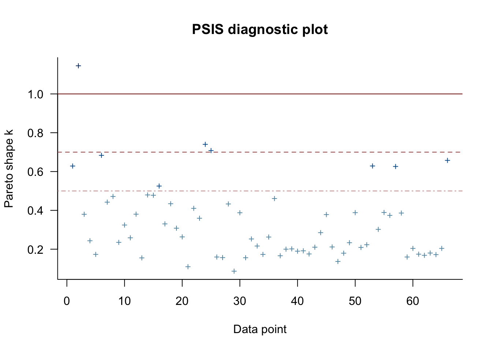

BDA project
Anonymous
Loaded packages
suppressPackageStartupMessages({
library(tidyr)
library(dplyr)
library(knitr)
library(rstan)
library(rstanarm)
library(bayesplot)
library(aaltobda)
options(mc.cores = parallel::detectCores())
library(loo)
library(ggplot2)
library(gridExtra)
library(bayesplot)
})SEED <- 1472652
set.seed(SEED)
options(max.print=1000000)Most of the code chunks in the notebook are a single call to a function that does all the work under the hood. Implementations of all the functions used can be found at the end of the notebook in the Appendix section.
Print outs of all the Stan model fits can be found at the end of the notebook in the Appendix section.
Introduction
Finland is often praised for its achievements in overall safety and very low crime rates, yet the by Finnish National Institute for Health and Welfare indicated that 130,000 people were victims of domestic violence in 2017. Moreover, according to this , Finland was EU’s second most violent country for women in 2014. Taken by surprise by this information, we decided to look more into the issue. Eventually, it seemed like a great idea to us to use the dataset described below as a basis for the project to understand the issue ourselves and to raise awareness among other students. In this notebook, we study the number of domestic violence cases per year grouped by victims’ age categories.
The rest of the notebook is structured as following. First, the dataset is described in more details and the analysis problem is stated. Then the 2 models are presented. For each of the models, we conduct prior predictive checking, convergence diagnostics, posterior predictive checking and evaluate their predictive performance based on ELPD values obtained by approximation using PSIS-LOO as well as using leave-one-future-out cross-validation to obtain a more reliable value for ELPD. Besides, prior sensitivity analysis is done for each of the models. Then, the models are compared based on the ELPD values, which is followed by a short related discussion. Finally, encountered problems are discussed and potential future improvements are proposed. We finish the report by drawing several conclusions.
Data description
The dataset was obtained from Tilastokeskus and contains data about the number cases of domestic violence and intimate partner violence reported as offence.
We decided to look at 3 dimensions in the data: year, victim’s age and number of victims. We grouped the data about number of victims by year and victim’s age. More specifically,there are 11 age groups in total, which are -4, 5-9, 10-14, 15-17, 18-20, 21-24, 25-34, 35-44, 45-54, 55-64 and 65- .
More information about the dataset could by found following or
data = read.csv("dataset.csv", header = TRUE, sep=";")
head(data, 12)We visuallize the number of victims per year for each age group
ageGroups <- unique(data$Victim.s.age)
grouped_data <- c()
group_count = 11
plots <- lapply(
seq(1, group_count),
function(i) {
data_for_age_group <- filter(data, Victim.s.age == ageGroups[i])
ggplot(aes(Year, Number.of.victims), data = data_for_age_group) +
geom_point(size = 1) + geom_line() +
labs(
title=paste0("Victim's age: ", ageGroups[i]),
x ="Year",
y = "Number of victims"
)
}
)
grid.arrange(grobs = plots[1:6], ncol = 2)grid.arrange(grobs = plots[7:11], ncol = 2)We reformat the data into matrix form so that it’s easier to work with. Rows represent age groups in ascending order and columns represent years: 2009 to 2018.
full_grouped_data <- sapply(
2009:2018,
function (j) sapply(
1:11,
function (i) filter(
data,
Victim.s.age == ageGroups[i] & Year == j
)$Number.of.victims
)
)
full_grouped_data## [,1] [,2] [,3] [,4] [,5] [,6] [,7] [,8] [,9] [,10]
## [1,] 224 324 399 525 445 409 522 508 464 546
## [2,] 294 426 529 753 528 627 843 774 802 889
## [3,] 323 425 515 593 507 466 648 670 639 656
## [4,] 200 224 354 324 342 259 324 324 326 318
## [5,] 288 360 513 465 460 380 436 437 440 427
## [6,] 466 548 852 887 743 688 840 820 742 722
## [7,] 1160 1362 2241 2276 2110 1987 2063 2163 2111 2095
## [8,] 1323 1369 2209 2075 1819 1743 1719 1806 1906 1870
## [9,] 944 1039 1680 1703 1548 1431 1488 1440 1248 1339
## [10,] 438 416 653 712 618 589 555 614 539 616
## [11,] 137 139 249 230 278 257 284 313 306 375Analysis problem
Having a model that fits the time-series data as well as being able to predict the numbers for upcoming years is of great importance for academic research. Besides, it can have various applications when trying to solve the problem of domestic violence on societal level.
The end purpose of the analysis is to build a model that’s capable of predicting the number of domestic violence victims for each age group in the future. In order to do this, we decided to start with 2 similar models, which even if do not fit the data well enough, will act as a starting point for the future research. More specifically, we decided to select the separate and hierachial autoregressive models and compare their predictive performances based on ELPD values. Finally, in addition to purely numerical analysis, we need to perform a sort of posterior predictive checking that would act as a saninty check and allow us to see if the models are at least somewhat accurate or if we need to come up with something better.
Models
The dataset features data points with timestamps so it seemed to us that the first thing we should do is to try a time-series model. We decided to use Autoregressive model, which is one of the most commonly used time-series models. Since the dataset only contains data for 10 years, we decided to use the first-order autoregressive model AR(1).
There are 2 models analyzed in this notebook:
1. Heirarchical AR(1) model
2. Separate AR(1) model
To model the number of victims per year, we used Poisson distribution which is commonly used for modeling the number of times an event occurs in an interval of time. This way, the number of victim in year \(y_n\) of each age group will be propotional to the following distribution:
\[ y_n \sim poisson(\alpha + \beta \space y_{n-1}) \] Where \(\alpha\) and \(\beta\) are parameters of the model.
Model 1
The first model is a hierachial AR(1) model. We decided to use Poisson distribution to model number of domestic violence cases reported since it is a distribution commonly used for modelling the probability of a given number of events occurring in a fixed interval of time or space if these events occur with a known constant mean rate and independently of the time since the last event (see https://en.wikipedia.org/wiki/Poisson_distribution). Moreover, we decided to use normal distribution for \(\alpha\) and \(\beta,\) and normal and cauchy for hierarchical parameters. The reason for the latter choice is for the lack of a reason to use any other distributions and because those are commonly used as “default” choices. for modelling mean and standard deviation. Below are are the equations describing the model.
\[ y_{i, n} \sim poisson(\alpha_i + \beta_b \space y_{i, n-1}) \]
\[ \alpha_i \sim Normal(mu\_group_{\alpha}, tau_{\alpha}) \]
\[ \beta_i \sim Normal(mu\_group_{\beta}, tau_{\beta}) \]
Below are the priors for the hierarchical parameters
\[ mu\_group_{\alpha} \sim Normal(0, mu\_group\_prior\_SD_{\alpha}) \]
\[ mu\_group_{\beta} \sim Normal(0, mu\_group\_prior\_SD_{\beta}) \]
\[ tau_{\alpha} \sim Cauchy(0, tau\_prior\_SD_{\alpha}) \]
\[ tau_{\beta} \sim Cauchy(0, tau\_prior\_SD_{\beta}) \]
Where \(i\) stands for the index of the \(i\)’th age group.
Since we don’t have much data and the inter group variation is high, we decided to used the non-centered parameterization approach for the hierachial model. See the following sources for more information about the approach and example cases ( https://mc-stan.org/users/documentation/case-studies/rstan_workflow.html, https://mc-stan.org/docs/2_18/stan-users-guide/reparameterization-section.html )
data {
int<lower=0> N;
int<lower=0> K; // number of groups
int<lower=1,upper=K> x[N]; // group indicator
int<lower=0> y[N];
int<lower=0> y0[K];
real<lower=0> mu_group_alpha_prior_sd;
real<lower=0> mu_group_beta_prior_sd;
real<lower=0> tau_alpha_prior_sd;
real<lower=0> tau_beta_prior_sd;
int<lower=0, upper=1> use_lfo_cv;
}
parameters {
real mu_group_alpha;
real<lower=0> mu_group_beta;
real<lower=0> tau_alpha; // hierarchical std
real<lower=0> tau_beta; // hierarchical std
vector[K] alpha_tilde;
real<lower=0> beta_tilde[K];
}
transformed parameters {
// whenever we do LFO-CV, we need to have data about T years, but we only fit T - 1
// due ti this, if LFO-CV is done, we're only fitting N - K datapoints
// (i.e. we're holding out the chronologically last datapoint for each of the groups)
real<lower=0> mu[use_lfo_cv ? (N - K) : N];
real alpha[K];
real beta[K];
for (i in 1:K) {
alpha[i] = mu_group_alpha + tau_alpha * alpha_tilde[i];
beta[i] = mu_group_beta + tau_beta * beta_tilde[i];
}
for (n in 1:K) {
mu[n] = alpha[x[n]] + beta[x[n]] * y0[n];
}
for (n in K+1:(use_lfo_cv ? (N - K) : N)) {
mu[n] = alpha[x[n]] + beta[x[n]] * y[n-K];
}
}
model {
mu_group_alpha ~ normal(0, mu_group_alpha_prior_sd); // hierarchical prior for mean
mu_group_beta ~ normal(0, mu_group_beta_prior_sd); // hierarchical prior for mean
tau_alpha ~ cauchy(0, tau_alpha_prior_sd); // hierarchical prior for std
tau_beta ~ cauchy(0, tau_beta_prior_sd); // hierarchical prior for std
alpha_tilde ~ normal(0, 1);
beta_tilde ~ normal(0, 1);
for (n in 1:(use_lfo_cv ? (N - K) : N)) {
y[n] ~ poisson(mu[n]);
}
}
generated quantities {
vector[N] log_lik;
real<lower=0> mu_pred[use_lfo_cv ? K : 0];
vector[use_lfo_cv ? 0 : N] y_rep;
if (use_lfo_cv) {
for (n in 1:K) {
mu_pred[n] = alpha[n] + beta[n] * y[(N - K) - K + n];
}
for (i in 1:(N - K)) {
log_lik[i] = poisson_lpmf(y[i] | mu[i]);
}
for (i in 1:K) {
log_lik[(N - K) + i] = poisson_lpmf(y[(N - K) + i] | mu_pred[i]);
}
} else {
for (i in 1:N) {
y_rep[i] = poisson_rng(mu[i]);
log_lik[i] = poisson_lpmf(y[i] | mu[i]);
}
}
}Prior predictive checking
First, we do prior predictive checking in order to identify a sensible prior to start with bassed on the general knowledge about the Finnish population. We believe that a major part of the mass should lie between 0 and 10000 or at least between 0 and 100000 since the population of Finland is only around 5.2 millions and based on the figured observed from previous studies (e.g. see https://www.stat.fi/til/rpk/2017/15/rpk_2017_15_2018-05-31_tie_001_en.html). In particular, we try to select a prior s.t. probability mass of having more than 1 million (one fifth’th of finnish population) cases reported is extremely small or zero.
check_prior_hierarchical(
full_grouped_data,
mu_group_alpha_sd = 20000,
mu_group_beta_sd = 20,
tau_alpha_sd = 5000,
tau_beta_sd = 20
)## [1] "Percentage of the mass that are greater than 10,000,000: 0.14"
## [1] "Percentage of the mass that are greater than 1,000,000: 1.415"
## [1] "Percentage of the mass that are greater than 100,000: 14.963"
## [1] "Percentage of the mass that are greater than 10,000: 86.297"Roughtly 86.4% of the mass is greater than 10,000. Moreover, a significant part of the mass is for numbers beyond 100000, which seems a little too wide.
check_prior_hierarchical(
full_grouped_data,
mu_group_alpha_sd = 20000,
mu_group_beta_sd = 5,
tau_alpha_sd = 1000,
tau_beta_sd = 2
)## [1] "Percentage of the mass that are greater than 10,000,000: 0.091"
## [1] "Percentage of the mass that are greater than 1,000,000: 0.932"
## [1] "Percentage of the mass that are greater than 100,000: 7.945"
## [1] "Percentage of the mass that are greater than 10,000: 69.043"Around 70% of the mass is greater than 10,000.
check_prior_hierarchical(
full_grouped_data,
mu_group_alpha_sd = 10000,
mu_group_beta_sd = 2,
tau_alpha_sd = 2000,
tau_beta_sd = 2
)## [1] "Percentage of the mass that are greater than 10,000,000: 0.055"
## [1] "Percentage of the mass that are greater than 1,000,000: 0.548"
## [1] "Percentage of the mass that are greater than 100,000: 4.951"
## [1] "Percentage of the mass that are greater than 10,000: 49.297"The latter prior seems to be the most reasonable one. About 50% of the mass lies between 0 and 10000. About 5% of the mass is with values greater than 100000.
The latter prior is wide enough and reasonably constrained at the same time, so we decided to start with it and experiment more later on (see prior sensitivity analysis section).
Model diagnostics
Fitting the model using the prior that was concluded to be reasonable in the previous section i.e.
\[ mu\_group_{\alpha} \sim Normal(0, 10000) \]
\[ mu\_group_{\beta} \sim Normal(0, 2) \]
\[ tau_{\alpha} \sim Cauchy(0, 2000) \]
\[ tau_{\beta} \sim Cauchy(0, 2) \]
To see how the Stan model is run, refer to the implementation of the function fit_hierarchical_model (which can be found in the Appendix section)
fit_hierarchical <- fit_hierarchical_model(
mu_group_alpha_prior_sd = 10000,
mu_group_beta_prior_sd = 2,
tau_alpha_prior_sd = 2000,
tau_beta_prior_sd = 2
)## Warning: There were 2 divergent transitions after warmup. Increasing adapt_delta above 0.8 may help. See
## http://mc-stan.org/misc/warnings.html#divergent-transitions-after-warmup## Warning: Examine the pairs() plot to diagnose sampling problemsEffective sample size (ESS) diagnostics
According to BDA3 Chapter 11.5, it is generally sufficient to have 10 times the number of chains for effective sample sizes to obtain a reasonable precision from the simulation. Since we’re using 7 chains (as can be seen from the fit printout, which can be found in the Appendix section), we need to make sure that there are at least 7 * 10 = 70 effective sample sizes for each of the parameters.
As can be seen, all parameters have \(\hat n_{eff}\) greater than 3650, which is clearly sufficient given the recommended value of 70.
Besides, according to https://mc-stan.org/users/documentation/case-studies/rstan_workflow.html, “When \(n_{eff} / n_{transitions} < 0.001\) the estimators that we use are often biased and can significantly overestimate the true effective sample size.”. For our case, the lowest ratio is 3650 / 21000 = 0.174 when taking all post-warmup draws as \(n_{transitions}\).
Thus, we can consider our simulation precise enough based on the \(\hat n_{eff}\) values.
R hat diagnostics
The below interpretation is partially based on the information given in BDA3 chapter 11 and on RStan documentation (see https://rdrr.io/cran/rstan/man/Rhat.html)
\(\hat R\) represents the potential scale reduction factor. \(\hat R\) of the values provide convergence diagnostic for - in this case - 10 chains. It compares “within- and between- chain estimates for model parameters and other univariate quantities of interest”. If \(\hat R\) is not near 1, we need either to coninue our simulations further or to change the algorithm to be more efficient. How close we want \(\hat R\) to be to 1 depends on a problem at hand, but values smaller than 1.1 or even 1.01 to be safe are generally considered as acceptable
As can be seen from the output (see Appendix section), \(\hat R\) for all of the parameters is either 1 or very close to 1. In particular, the values are smaller than a recommended threshold of 1.1 (BDA3 Chapter 11.5).
We can conclude from this and the previously done ESS diagnostic that the sequences converged well and we don’t need to run the simulations further.
HMC -specific convergence diagnostics
The utility function below prints the number of iterations that sanurated the maximum tree depth (set to 15 in this case), and the number of iterations that ended with a divergence.
The utility function uses the code from https://github.com/avehtari/BDA_R_demos/blob/master/demos_rstan/stan_utility.R
print_fit_diagnostic(fit_hierarchical, tree_depth = 10)## [1] "54 of 21000 iterations saturated the maximum tree depth of 10 (0.257142857142857%)"
## [1] "Run again with max_depth set to a larger value to avoid saturation"## 2 of 21000 iterations ended with a divergence (0.00952380952380952%).
## Try increasing 'adapt_delta' to remove the divergences.print_fit_diagnostic(fit_hierarchical, tree_depth = 15)## [1] "0 of 21000 iterations saturated the maximum tree depth of 15 (0%)"## 2 of 21000 iterations ended with a divergence (0.00952380952380952%).
## Try increasing 'adapt_delta' to remove the divergences.Quoting from https://mc-stan.org/users/documentation/case-studies/rstan_workflow.html, “The dynamic implementation of Hamiltonian Monte Carlo used in Stan has a maximum trajectory length built in to avoid infinite loops that can occur for non-identified models. For sufficiently complex models, however, Stan can saturate this threshold even if the model is identified, which limits the efficacy of the sampler.”
As can be seen from the output above, some iterations saturated the tree depth of 10. However, as can be noticed the fitting was run with maximum tree depth of 15. With tree-depth set to 15, there are 0 saturations.
Thus, we can conclude that having max. tree depth set to 15, allows NUTS to not be terminated prematurely and thus the efficientcy of our sampling algorithm is not being restricted.
Besides, we can see that only 2 iterations ended with divergence in the fitting above, which can be safely neglected. Divergences in a simulation might be a indicator of pathological neighbourhoodsof the posterior that the simulated Hamiltonian trajectories are not able to explore sufficiently well (see https://mc-stan.org/users/documentation/case-studies/rstan_workflow.html).
We thus can conclude that there are no apparent issues with divergences which means that the simulation was able to explore all the important parts of the posterior sufficiently well.
PSIS-LOO and LFO
In order to evaluate the model’s predictive performance, which is one of the things that matters the most according to the analysis problem section, we’re running PSIS-LOO analysis of the model in the code snippet below.
Notice that we’ve decided to leave first 3 fitted values out of the analysis. Because the model is not fit for the first data point at all (see model description section for details), we thus doing PSIS-LOO only for 5 - 10 datapoints of each age group.
If loo() function is run on the entire dataset without oimtting first several value, \(\hat k\) values for those first datapoints tend to be very bad (most of them > 1.0). Besides, the similar technique was used in http://mc-stan.org/loo/articles/loo2-lfo.html. One justification for this could be that we need to have some histoical observations first (at least 4 in our case) to make a decent prediction for the next value.
loo_hierarchical <- get_loo_diagnostics(fit_hierarchical)## Warning: Some Pareto k diagnostic values are too high. See help('pareto-k-diagnostic') for details.print(loo_hierarchical)##
## Computed from 21000 by 66 log-likelihood matrix
##
## Estimate SE
## elpd_loo -509.7 55.5
## p_loo 57.6 13.7
## looic 1019.3 111.0
## ------
## Monte Carlo SE of elpd_loo is NA.
##
## Pareto k diagnostic values:
## Count Pct. Min. n_eff
## (-Inf, 0.5] (good) 54 81.8% 1593
## (0.5, 0.7] (ok) 8 12.1% 206
## (0.7, 1] (bad) 3 4.5% 178
## (1, Inf) (very bad) 1 1.5% 18
## See help('pareto-k-diagnostic') for details.plot(loo_hierarchical)We can see from the print out above that \(\hat k\) values for some of the datapoints are above 0.7. Becasause of this and because PSIS-LOO uses data from the future datapoints, we cannot fully rely on ELPD shown above (the result might be overoptimistic). For these reasons, we’ll do a true (as opposed to PSIS approximation) leave-future-out corss validation. The code used in the function below is adapted from http://mc-stan.org/loo/articles/loo2-lfo.html.
exact_elpd_hierarchical <- get_lfo_cv_results_hierarchical(
mu_group_alpha_prior_sd = 10000,
mu_group_beta_prior_sd = 2,
tau_alpha_prior_sd = 2000,
tau_beta_prior_sd = 2
)## Warning: There were 1 divergent transitions after warmup. Increasing adapt_delta above 0.8 may help. See
## http://mc-stan.org/misc/warnings.html#divergent-transitions-after-warmup## Warning: Examine the pairs() plot to diagnose sampling problems## Warning: There were 4 divergent transitions after warmup. Increasing adapt_delta above 0.8 may help. See
## http://mc-stan.org/misc/warnings.html#divergent-transitions-after-warmup## Warning: Examine the pairs() plot to diagnose sampling problems## Warning: There were 5 divergent transitions after warmup. Increasing adapt_delta above 0.8 may help. See
## http://mc-stan.org/misc/warnings.html#divergent-transitions-after-warmup## Warning: Examine the pairs() plot to diagnose sampling problems## Warning: There were 4 divergent transitions after warmup. Increasing adapt_delta above 0.8 may help. See
## http://mc-stan.org/misc/warnings.html#divergent-transitions-after-warmup## Warning: Examine the pairs() plot to diagnose sampling problems## Warning: There were 2 divergent transitions after warmup. Increasing adapt_delta above 0.8 may help. See
## http://mc-stan.org/misc/warnings.html#divergent-transitions-after-warmup## Warning: Examine the pairs() plot to diagnose sampling problemsrbind_print(
"LFO" = exact_elpd_hierarchical
)## ELPD
## LFO -581.87Thus, this value can be used later when comparing the models in terms of their predictive performance.
Graphical posterior predictive checking
Below are the plots of the true data plotted against 21000 draws from the posterior of the model. The draws from the posterior are summarised using “ribbons” plots.
plot_ppc_ribbons(fit_hierarchical, full_grouped_data)We can see from the plots that the draws from the model do not overlap with the actual data in many cases. Moreover, it seems that the model is way too confident with most of the groups resulting in way too narrow “ribbons” in plots above that do not match with the data.
It can also be observed that in many cases predictions for point \(y\) are closer to the true value of \(y-1\) than to the true value of \(y\). This can be explained by the constraints of the selected model (AR(1)) where a predicted value of \(y\) highly depends on the true value of the (chronologically) previous datapoint.
To demonstrate further that the model appears to be too confident, we plot the same data (only some age groups (1st, 5th and 8th as appearing in original data), the rest were omitted for brevity) using “ppc_intervals” function (see below).
plot_ppc_intervals(fit_hierarchical, full_grouped_data)## [[1]]##
## [[2]]
##
## [[3]]Finally, in order to demonstrate further how correct (or incorrect) the model is, the error scatter plot is plotted below demonstrating average errors (of y_rep when compared to the actual data) for each datapoint in each age group.
y_rep <- as.matrix(fit_hierarchical, pars = "y_rep")
ppc_error_scatter_avg(c(full_grouped_data[, (2:10)]), y_rep)We can see that for most of the datapoinst, the average error is below 150. Moreover, approximately the same number of data points have negative error as the number of datapoints that have positive average error. It also can be noted that there is moer variation in values of average error for datapoints whose true value is above 1000 with extreme cases being -350 and just under 500.
From everything discussed above in the section, we can conclude that the model is quite poor in terms of how it fits the data. From the simple visualizaions shown above, we can assume that some of the reasons for this are:
- Uncertainty intervals are not wide enough
- The fact that data depends mainly on the previous observation only (because of AR(1)), since data changes quite a bit on some occasions for the year \(y\) compared to the year \(y-1\).
Prior sensitivity analysis
In this section we try a couple of different priors and compare the results obtained to the ones demonstrated in the previous section.
First, let’s try another sensible but wider prior, while keeping results of the previous fit as our baseline. (the priors have the same distributions as in the baseline case but different values, for the values, see the code chunk below)
fit_hierarchical_wide_prior = fit_hierarchical_model(
mu_group_alpha_prior_sd = 100000,
mu_group_beta_prior_sd = 25,
tau_alpha_prior_sd = 10000,
tau_beta_prior_sd = 25
) # wider prior## Warning: There were 5 divergent transitions after warmup. Increasing adapt_delta above 0.8 may help. See
## http://mc-stan.org/misc/warnings.html#divergent-transitions-after-warmup## Warning: Examine the pairs() plot to diagnose sampling problemsAgain, we can see that ESS and \(\hat R\) values are good (see fit print-outs in the Appendix section). With smallest ESS still exceeding 3000.
print_fit_diagnostic(fit_hierarchical_wide_prior, tree_depth = 15)## [1] "0 of 21000 iterations saturated the maximum tree depth of 15 (0%)"## 5 of 21000 iterations ended with a divergence (0.0238095238095238%).
## Try increasing 'adapt_delta' to remove the divergences.No iterations saturated the maximum tree depth of 15 and there were only 5 divergences out of 21000, which is good enough for us to proceed with the model.
loo_hierarchical_wide_prior <- get_loo_diagnostics(fit_hierarchical_wide_prior)## Warning: Some Pareto k diagnostic values are too high. See help('pareto-k-diagnostic') for details.print(loo_hierarchical_wide_prior)##
## Computed from 21000 by 66 log-likelihood matrix
##
## Estimate SE
## elpd_loo -509.2 55.4
## p_loo 57.0 13.5
## looic 1018.5 110.7
## ------
## Monte Carlo SE of elpd_loo is NA.
##
## Pareto k diagnostic values:
## Count Pct. Min. n_eff
## (-Inf, 0.5] (good) 57 86.4% 1073
## (0.5, 0.7] (ok) 6 9.1% 423
## (0.7, 1] (bad) 2 3.0% 300
## (1, Inf) (very bad) 1 1.5% 24
## See help('pareto-k-diagnostic') for details.plot(loo_hierarchical_wide_prior)
PSIS-LOO analysis looks similar to the baseline case, where \(\hat k\) values for some datapoinst exceeded 0.7. Also estimated ELPD_LOO value is very close to the baseline one.
plot_ppc_ribbons(fit_hierarchical_wide_prior, full_grouped_data)plot_ppc_intervals(fit_hierarchical_wide_prior, full_grouped_data)## [[1]]##
## [[2]]##
## [[3]]Both ribbons and intervals visualizations look very similar to the baseline case. (the priors have the same distributions as in the baseline case but different values, for the values, see the code chunk below)
exact_elpd_hierarchical_wide_prior <- get_lfo_cv_results_hierarchical(
mu_group_alpha_prior_sd = 100000,
mu_group_beta_prior_sd = 25,
tau_alpha_prior_sd = 10000,
tau_beta_prior_sd = 25
)## Warning: There were 2 divergent transitions after warmup. Increasing adapt_delta above 0.8 may help. See
## http://mc-stan.org/misc/warnings.html#divergent-transitions-after-warmup## Warning: Examine the pairs() plot to diagnose sampling problems## Warning: There were 1 divergent transitions after warmup. Increasing adapt_delta above 0.8 may help. See
## http://mc-stan.org/misc/warnings.html#divergent-transitions-after-warmup## Warning: Examine the pairs() plot to diagnose sampling problems## Warning: There were 5 divergent transitions after warmup. Increasing adapt_delta above 0.8 may help. See
## http://mc-stan.org/misc/warnings.html#divergent-transitions-after-warmup## Warning: Examine the pairs() plot to diagnose sampling problems## Warning: There were 1 divergent transitions after warmup. Increasing adapt_delta above 0.8 may help. See
## http://mc-stan.org/misc/warnings.html#divergent-transitions-after-warmup## Warning: Examine the pairs() plot to diagnose sampling problems## Warning: There were 1 divergent transitions after warmup. Increasing adapt_delta above 0.8 may help. See
## http://mc-stan.org/misc/warnings.html#divergent-transitions-after-warmup## Warning: Examine the pairs() plot to diagnose sampling problemsrbind_print(
"LFO" = exact_elpd_hierarchical_wide_prior
)## ELPD
## LFO -581.38ELPD_LFO value is almost exaclty the same as in out baseline case (which was -581.87). So we can conclude that there is almost no or very little difference between the models in terms of their predictive performance.
Now let’s try a stronger more narrow prior
(the priors have the same distributions as in the baseline case but different values, for the values, see the code chunk below)
fit_hierarchical_narrow_prior = fit_hierarchical_model(
mu_group_alpha_prior_sd = 2000,
mu_group_beta_prior_sd = 0.5,
tau_alpha_prior_sd = 10,
tau_beta_prior_sd = 0.1
)Again, we can see that ESS and \(\hat R\) values are good (see fit print-outs in the Appendix section). With smallest ESS still exceeding 3000.
print_fit_diagnostic(fit_hierarchical_narrow_prior, tree_depth = 15)## [1] "0 of 21000 iterations saturated the maximum tree depth of 15 (0%)"## 0 of 21000 iterations ended with a divergence.No tree depth saturations and 0 divergences, which is even better compared to the previous cases where we did have a negligible number of divergences.
loo_hierarchical_narrow_prior <- get_loo_diagnostics(fit_hierarchical_narrow_prior)## Warning: Some Pareto k diagnostic values are too high. See help('pareto-k-diagnostic') for details.## Warning in log(z): NaNs producedprint(loo_hierarchical_narrow_prior)##
## Computed from 21000 by 66 log-likelihood matrix
##
## Estimate SE
## elpd_loo -511.2 56.1
## p_loo 59.0 14.7
## looic 1022.4 112.3
## ------
## Monte Carlo SE of elpd_loo is NA.
##
## Pareto k diagnostic values:
## Count Pct. Min. n_eff
## (-Inf, 0.5] (good) 53 80.3% 2314
## (0.5, 0.7] (ok) 8 12.1% 345
## (0.7, 1] (bad) 4 6.1% 139
## (1, Inf) (very bad) 1 1.5% 5
## See help('pareto-k-diagnostic') for details.plot(loo_hierarchical_narrow_prior)PSIS-LOO results look similar to the previous cases, with estimates for ELPD value just slightly worse in the case of the narrow prior.
plot_ppc_ribbons(fit_hierarchical_narrow_prior, full_grouped_data)plot_ppc_intervals(fit_hierarchical_narrow_prior, full_grouped_data)## [[1]]##
## [[2]]##
## [[3]]Similarly to the case of the wider prior, no noticable difference can be observed from the plots above compared to the other priors.
exact_elpd_hierarchical_narrow_prior <- get_lfo_cv_results_hierarchical(
mu_group_alpha_prior_sd = 2000,
mu_group_beta_prior_sd = 0.5,
tau_alpha_prior_sd = 10,
tau_beta_prior_sd = 0.1
)## Warning: There were 1 divergent transitions after warmup. Increasing adapt_delta above 0.8 may help. See
## http://mc-stan.org/misc/warnings.html#divergent-transitions-after-warmup## Warning: Examine the pairs() plot to diagnose sampling problems## Warning: There were 3 divergent transitions after warmup. Increasing adapt_delta above 0.8 may help. See
## http://mc-stan.org/misc/warnings.html#divergent-transitions-after-warmup## Warning: Examine the pairs() plot to diagnose sampling problems## Warning: There were 1 divergent transitions after warmup. Increasing adapt_delta above 0.8 may help. See
## http://mc-stan.org/misc/warnings.html#divergent-transitions-after-warmup## Warning: Examine the pairs() plot to diagnose sampling problemsrbind_print(
"LFO" = exact_elpd_hierarchical_narrow_prior
)## ELPD
## LFO -580.9ELPD value calculated based on LFO analysis is very close to the other 2 reported before.
The scatter plot below depicts average errors for different datapoints. X axis represents y - y_rep value, while Y axix represents a true value of the datapoint (hence y). The error scatter plots for fits with each of the priors are shown below next to each other for better comparison.
The order of the plots is as follows (left to right, top to bottom): Wide priors, Baseline, Narrow priors
y_rep <- as.matrix(fit_hierarchical, pars = "y_rep")
y_rep_wide_prior <- as.matrix(fit_hierarchical_wide_prior, pars = "y_rep")
y_rep_narrow_prior <- as.matrix(fit_hierarchical_narrow_prior, pars = "y_rep")
plot_baseline = ppc_error_scatter_avg(c(full_grouped_data[, (2:10)]), y_rep)
plot_wide_prior = ppc_error_scatter_avg(c(full_grouped_data[, (2:10)]), y_rep_wide_prior)
plot_narrow_prior = ppc_error_scatter_avg(c(full_grouped_data[, (2:10)]), y_rep_narrow_prior)
grid.arrange(grobs = list(plot_wide_prior, plot_baseline, plot_narrow_prior), ncol = 2)Thus, based on the plots above and comparing ELDP values obtained using LFO-CV for each of the 3 different priors we can conclude that the model is not very sensitive to a reasonable changes in it’s prior and is therefore can be considered as relatively robust and highly dependent on data.
Model 2
This is the separate AR(1) model. In this model, we assume that there is no co-dependence between the age groups. As was explained previously (see Model 1 section), Poisson distribution was chosen since it is a common choice when modelling the number of events that occured over a period of time. Normal distribution was chosen for priors since we couldn’t find any strong reason to use any other distribution (at least as the starting point) i.e. as the default choice. Below are some of the equations describing the separate model.
\[ y_{i, n} \sim poisson(\alpha_i + \beta_b \space y_{i, n-1}) \]
Below are the priors
\[ \alpha_i \sim Normal(0, sigma_{\alpha}) \]
\[ \beta_i \sim Normal(0, sigma_{\beta}) \]
data {
int<lower=0> N;
int<lower=0> K; // number of groups
int<lower=1,upper=K> x[N]; // group indicator
int<lower=0> y[N];
int<lower=0> y0[K];
real<lower=0> alpha_prior_sd;
real<lower=0> beta_prior_sd;
int<lower=0, upper=1> use_lfo_cv;
}
parameters {
real alpha[K];
real<lower=0> beta[K];
}
transformed parameters {
// whenever we do LFO-CV, we need to have data about T years, but we only fit T - 1
// due ti this, if LFO-CV is done, we're only fitting N - K datapoints
// (i.e. we're holding out the chronologically last datapoint for each of the groups)
real<lower=0> mu[use_lfo_cv ? (N - K) : N];
for (n in 1:K) {
mu[n] = alpha[x[n]] + beta[x[n]] * y0[n];
}
for (n in K+1:(use_lfo_cv ? (N - K) : N)) {
mu[n] = alpha[x[n]] + beta[x[n]] * y[n-K];
}
}
model {
for (n in 1:K) {
alpha[n] ~ normal(0, alpha_prior_sd); // prior
beta[n] ~ normal(0, beta_prior_sd); // prior
}
for (n in 1:(use_lfo_cv ? (N - K) : N)) {
y[n] ~ poisson(mu[n]);
}
}
generated quantities {
vector[N] log_lik;
real<lower=0> mu_pred[use_lfo_cv ? K : 0];
vector[use_lfo_cv ? 0 : N] y_rep;
if (use_lfo_cv) {
for (n in 1:K) {
mu_pred[n] = alpha[n] + beta[n] * y[(N - (1 * K)) - K + n];
}
for (i in 1:(N - (1 * K))) {
log_lik[i] = poisson_lpmf(y[i] | mu[i]);
}
for (i in 1:K) {
log_lik[(N - (1 * K)) + i] = poisson_lpmf(y[(N - (1 * K)) + i] | mu_pred[i]);
}
} else {
for (i in 1:N) {
y_rep[i] = poisson_rng(mu[i]);
log_lik[i] = poisson_lpmf(y[i] | mu[i]);
}
}
}Prior predictive checking
Similar to the previous model we first conduct prior predictive checking to come up with a sensible prior. The similar assumption as in Model 1 are used here to select our prior. Based on these, we decided to proceed with the first one because while being sufficiently wide, the data generated with it seemed sensible to us.
check_prior_separate(
full_grouped_data,
alpha_prior_mean = 0,
alpha_prior_sd = 10000,
beta_prior_mean = 0,
beta_prior_sd = 2
)## [1] "Percentage of the mass that are greater than 10,000,000: 0"
## [1] "Percentage of the mass that are greater than 1,000,000: 0"
## [1] "Percentage of the mass that are greater than 100,000: 0"
## [1] "Percentage of the mass that are greater than 10,000: 33.756"Model diagnostics
Fitting the model with the prior chosen above i.e.
\[ \alpha_i \sim Normal(0, 10000) \]
\[ \beta_i \sim Normal(0, 2) \]
To see how the Stan model is run, refer to the implementation of the function fit_separate_model (which can be found in the Appendix section)
fit_separate = fit_separate_model(
alpha_prior_sd = 10000,
beta_prior_sd = 2
)ESS and R hat diagnostics
All of the \(\hat R\) values look good (see fit print-outs in the Appendix section) and ESS values are all well above 10000, which is more than enough given that we only have 7 chains (7 * 10 = 70).
(For more discussion, see Model 1 section).
HMC -specific convergence diagnostics
print_fit_diagnostic(fit_separate, tree_depth = 10)## [1] "0 of 21000 iterations saturated the maximum tree depth of 10 (0%)"## 0 of 21000 iterations ended with a divergence.HMC -specific convergence diagnostics looks good too.
(For more discussion, see Model 1 section).
PSIS-LOO and LFO
loo_separate <- get_loo_diagnostics(fit_separate)## Warning: Some Pareto k diagnostic values are too high. See help('pareto-k-diagnostic') for details.## Warning in log(z): NaNs producedprint(loo_separate)##
## Computed from 21000 by 66 log-likelihood matrix
##
## Estimate SE
## elpd_loo -509.4 56.1
## p_loo 58.7 13.9
## looic 1018.9 112.2
## ------
## Monte Carlo SE of elpd_loo is NA.
##
## Pareto k diagnostic values:
## Count Pct. Min. n_eff
## (-Inf, 0.5] (good) 55 83.3% 1746
## (0.5, 0.7] (ok) 7 10.6% 302
## (0.7, 1] (bad) 3 4.5% 114
## (1, Inf) (very bad) 1 1.5% 12
## See help('pareto-k-diagnostic') for details.plot(loo_separate)The results of PSIS-LOO look very similar to those of model 1. In particular, the estimated ELPD value is equal to -509 which is very close to the value obtained for the hierarchical model (which was -509.7). Besides, similarly to the case of model 1, \(\hat k\) values for some of the data points exceed the threshold of 0.7. For this reason, and because LOO-CV uses information of “future” datapoints, which is not appropriate in our case, we’re doing complete leave-future-out cross validation using the dataset and the separate model.
Below are the results of leave-one-future-out cross validation.
exact_elpd_separate <- get_lfo_cv_results_separate(
alpha_prior_sd = 10000,
beta_prior_sd = 2
)
rbind_print(
"LFO" = exact_elpd_separate
)## ELPD
## LFO -592.54The results are close to that of the first model but comperatively worse. In particular, the ELPD value is at -592.5 as opposed to -582 (for the case of the 2nd model).
Graphical posterior predictive checking
Below are the plots of the true data plotted against 21000 draws from the posterior of the model. The draws from the posterior are summarised using “ribbons” and “intervals” plots. (only some age groups (1st, 5th and 8th as appearing in original data) are plotted using the “intervals” representation, the rest were omitted for brevity)
plot_ppc_ribbons(fit_separate, full_grouped_data)plot_ppc_intervals(fit_separate, full_grouped_data)## [[1]]##
## [[2]]##
## [[3]]The plots look very similar to those of the first model. Again, it can be seen that the model does not match the data in many cases, the interval is too narrow and in many cases the model is visibly a slightly modified lagged-by-1 version of the true data set. This again can be partly explained by constraints of AR(1), see " Graphical posterior predictive checking" subsection for model 1 for more discussion.
y_rep <- as.matrix(fit_separate, pars = "y_rep")
ppc_error_scatter_avg(c(full_grouped_data[, (2:10)]), y_rep)
The error scatter plot looks similar to that of the first model. The discussion and observations of model 1 apply to this case as well.
Prior sensitivity analysis
In this section, once again, we try a couple of different priors and compare the results obtained to the ones demonstrated in the previous section.
First, let’s try another sensible but wider prior, while keeping results of the previous fit as our baseline.
(the priors have the same distributions as in the baseline case but different values, for the values, see the code chunk below)
fit_separate_wide_prior = fit_separate_model(
alpha_prior_sd = 10000,
beta_prior_sd = 25
)## Warning: There were 2 divergent transitions after warmup. Increasing adapt_delta above 0.8 may help. See
## http://mc-stan.org/misc/warnings.html#divergent-transitions-after-warmup## Warning: Examine the pairs() plot to diagnose sampling problemsESS and \(\hat R\) both look good (see fit print-outs in the Appendix section).
print_fit_diagnostic(fit_separate_wide_prior, tree_depth = 10)## [1] "0 of 21000 iterations saturated the maximum tree depth of 10 (0%)"## 2 of 21000 iterations ended with a divergence (0.00952380952380952%).
## Try increasing 'adapt_delta' to remove the divergences.No tree depth saturations and only 2 divergences per 21000 iterations.
loo_separate_wide_prior <- get_loo_diagnostics(fit_separate_wide_prior)## Warning: Some Pareto k diagnostic values are too high. See help('pareto-k-diagnostic') for details.print(loo_separate_wide_prior)##
## Computed from 21000 by 66 log-likelihood matrix
##
## Estimate SE
## elpd_loo -509.5 56.2
## p_loo 58.9 14.1
## looic 1019.0 112.4
## ------
## Monte Carlo SE of elpd_loo is NA.
##
## Pareto k diagnostic values:
## Count Pct. Min. n_eff
## (-Inf, 0.5] (good) 55 83.3% 1981
## (0.5, 0.7] (ok) 9 13.6% 232
## (0.7, 1] (bad) 1 1.5% 153
## (1, Inf) (very bad) 1 1.5% 31
## See help('pareto-k-diagnostic') for details.plot(loo_separate_wide_prior)PSIS-LOO -based ELPD estimation is almost the same as in the baseline case.
plot_ppc_ribbons(fit_separate_wide_prior, full_grouped_data)Graphically, no noticable differences can be observed from the posterior compared to the baseline case.
exact_elpd_separate_wide_prior <- get_lfo_cv_results_separate(
alpha_prior_sd = 10000,
beta_prior_sd = 25
)
rbind_print(
"LFO" = exact_elpd_separate_wide_prior
)## ELPD
## LFO -589.86Leave-one-future-out CV -based elpD value just slightly better than in the baseline case; -590 compared to -592.5.
Now let’s try a stronger more narrow prior
(the priors have the same distributions as in the baseline case but different values, for the values, see the code chunk below)
fit_separate_narrow_prior = fit_separate_model(
alpha_prior_sd = 2000,
beta_prior_sd = 0.5
)## Warning: There were 7 divergent transitions after warmup. Increasing adapt_delta above 0.8 may help. See
## http://mc-stan.org/misc/warnings.html#divergent-transitions-after-warmup## Warning: Examine the pairs() plot to diagnose sampling problemsSimilarly ESS and \(\hat R\) are very good (see fit print-outs in the Appendix section).
print_fit_diagnostic(fit_separate_narrow_prior, tree_depth = 10)## [1] "0 of 21000 iterations saturated the maximum tree depth of 10 (0%)"## 7 of 21000 iterations ended with a divergence (0.0333333333333333%).
## Try increasing 'adapt_delta' to remove the divergences.Again, no max. tree depth saturation and only 7 divergences (which is 0.03% of all 21000 iterations). Thus, we can conclude that HMC -specifics convergence diagnostics looks good too.
loo_separate_narrow_prior <- get_loo_diagnostics(fit_separate_narrow_prior)## Warning: Some Pareto k diagnostic values are too high. See help('pareto-k-diagnostic') for details.## Warning in log(z): NaNs producedprint(loo_separate_narrow_prior)##
## Computed from 21000 by 66 log-likelihood matrix
##
## Estimate SE
## elpd_loo -509.6 56.6
## p_loo 60.2 15.1
## looic 1019.2 113.3
## ------
## Monte Carlo SE of elpd_loo is NA.
##
## Pareto k diagnostic values:
## Count Pct. Min. n_eff
## (-Inf, 0.5] (good) 56 84.8% 738
## (0.5, 0.7] (ok) 6 9.1% 261
## (0.7, 1] (bad) 3 4.5% 137
## (1, Inf) (very bad) 1 1.5% 7
## See help('pareto-k-diagnostic') for details.plot(loo_separate_narrow_prior)Same results as with the previously tried priors.
exact_elpd_separate_narrow_prior <- get_lfo_cv_results_separate(
alpha_prior_sd = 2000,
beta_prior_sd = 0.5
)
rbind_print(
"LFO" = exact_elpd_separate_narrow_prior
)## ELPD
## LFO -579.05Rather surprisingly, the ELPD result is better for the separate model when a stricter prior is used. Although the differrence is not significant, the last model has the same ELPD value as the hierarchical models presented previously. (the calculations are based on LFO-CV)
Finally, error scatter plots for fits with each of the priors are shown below next to each other for better comparison. The order of the plots is as follows (left to right, top to bottom): Wide priors, Baseline, Narrow priors
y_rep <- as.matrix(fit_separate, pars = "y_rep")
y_rep_wide_prior <- as.matrix(fit_separate_wide_prior, pars = "y_rep")
y_rep_narrow_prior <- as.matrix(fit_separate_narrow_prior, pars = "y_rep")
plot_baseline = ppc_error_scatter_avg(c(full_grouped_data[, (2:10)]), y_rep)
plot_wide_prior = ppc_error_scatter_avg(c(full_grouped_data[, (2:10)]), y_rep_wide_prior)
plot_narrow_prior = ppc_error_scatter_avg(c(full_grouped_data[, (2:10)]), y_rep_narrow_prior)
grid.arrange(grobs = list(plot_wide_prior, plot_baseline, plot_narrow_prior), ncol = 2)It can be seen, that the error pattern is almost exactly the same for all the priors with no or almost no noticable difference.
We thus can conclude that the choice of sensible prior does not significantly affect the posterior, although it does have some effect since we saw slight improvement in ELPD when a stronger prior was tried.
Model comparison
Here is a visual comparison for hierarchical and separate model respectively. The plots are the error scatter plots that were already demonstrated, explained and discussed in the previous sections.
plot1 <- ppc_error_scatter_avg(
c(full_grouped_data[, (2:10)]),
as.matrix(fit_hierarchical,pars = "y_rep"))
plot2 <- ppc_error_scatter_avg(
c(full_grouped_data[, (2:10)]),
as.matrix(fit_separate, pars = "y_rep"))
grid.arrange(grobs = list(plot1, plot2), ncol = 2)As can be seen from the plots above and comparison table below, the difference between the 2 models is rather small one. Although, the hierarchical model had slightly better values for ELPD, we were able to obtain very close values with the separate model by using a slightly stringler prior.
comparison_results = matrix(
c(
loo_hierarchical$estimates[1:2], # PSIS-LOO -based elpd and p_eff values
exact_elpd_hierarchical, # LFO-based elpd
loo_hierarchical_wide_prior$estimates[1:2], # PSIS-LOO -based elpd and p_eff values
exact_elpd_hierarchical_wide_prior, # LFO-based elpd
loo_hierarchical_narrow_prior$estimates[1:2], # PSIS-LOO -based elpd and p_eff values
exact_elpd_hierarchical_narrow_prior, # LFO-based elpd
loo_separate$estimates[1:2], # PSIS-LOO -based elpd and p_eff values
exact_elpd_separate, # LFO-based elpd
loo_separate_wide_prior$estimates[1:2], # PSIS-LOO -based elpd and p_eff values
exact_elpd_separate_wide_prior, # LFO-based elpds
loo_separate_narrow_prior$estimates[1:2], # PSIS-LOO -based elpd and p_eff values
exact_elpd_separate_narrow_prior # LFO-based elpd
),
ncol = 6,
dimnames = list(
c("elpd_loo", "p_loo", "elpd_lfo"),
c("hierarchical",
"hier. (wide prior)",
"hier. (narrow prior)",
"sep.",
"sep. (wide prior)",
"sep. (narrow prior)")
)
)| hierarchical | hier. (wide prior) | hier. (narrow prior) | sep. | sep. (wide prior) | sep. (narrow prior) | |
|---|---|---|---|---|---|---|
| elpd_loo | -509.7 | -509.2 | -511.2 | -509.4 | -509.5 | -509.6 |
| p_loo | 57.6 | 57.0 | 59.0 | 58.7 | 58.9 | 60.2 |
| elpd_lfo | -581.9 | -581.4 | -580.9 | -592.5 | -589.9 | -579.0 |
Thus, using all the information obtained during the analysis reported in this notebook, we can conclude autoregressive model of 1st order is not a good fit for the data at hand. Graphical posterior predictive checking demonstrated poor fit of both models to the data. For more discussion on the identified problems and potential future improvements, see the next section.
Moreover, we observed little difference between separate and hierarchical model even though the initial choice of priors could lead us to believe that the hierarchical model performed slightly better (this can be once again observed from the table shown above).
Problems encountered and potential improvements
This section discusses some of the identified problems and proposes some of the improvements that could serve as the next steps in analysing the dataset at hand.
The confidence interval seems to be too narrow. This seems to be primarily caused by inability to specify thinkness of the tails in Poisson distribution that was used in both models. One idea for future improvements would be then to try a negative binomial distribution instead. Negative binomial distribution is similar to Poisson but can have much thinker tails if appropriate parameters are used (see https://en.wikipedia.org/wiki/Negative_binomial_distribution). Another idea is to use truncated normal distribution (see https://en.wikipedia.org/wiki/Truncated_normal_distribution), by having its lower bound equal to 0.
As noted previously, it can be seen from the graphical posterior predictive checking that the model looks similar to the original data but lagged by one year. This can be a consequence of the fact that we were using AR(1) model. As one idea for potential improvement, autoregressive models with higher orders e.g. 2, 3 or 4 could be tried. In addition, other common time-series models such as Moving Average MA or Autoregressive Moving Average ARMA could be tried.
Perhaps, one issue was that the factor based on which separation into groups has been done (age of the victim) is a poor choice. Perhaps, some other factor should be chosen as a basis for grouping the data. On the other hand, pooled model, where all the data is analyzed together could be a better option as well.
Another problem was the fact that we only had 10 years of history data available. Perhaps, if we could get access to earlier history data, fitting a time-series model would be easier (for a variaty of reasons). One thing that more history data would make easier is using AR, MA or ARMA models with greater order e.g. AR(5), MA(4), etc.
The nature of the data itself as well as the way it is collected can also often be an issue. In this case, the numbers represent the amount of reported domestic violence cases. Such data can be highly volatile due to e.g. the fact that more or less people happen to report in a certain year. Perhaps, if estimates of actual violence cases would be used, fitting a model would be easier.
Another problem envountered was that conductig LFO-CV was way too slow. One option for improvement would be to use an approximation for it that was demonstrated in http://mc-stan.org/loo/articles/loo2-lfo.html.
Conclusion
In the report, we tried to fit 2 different autoregressive models to the data at hand and analysed the results. The data (the number of domestic violence cases reported from 2009 to 2018) was partitioned into 11 groups by the age of the victim. After conducting a thorough analysis of the models, we came to a conclusion that both models fit the data quite poorly. Besides, according to the results obtained, there was little difference in predictive performance between the hierarchical and separate models. Thus, none of the models can be reliably used for predicting the number of reported cases in the future. Several specific issues encountered were documented and some of the idea about future improvements proposed in the previous section.
Appendix
Code
The following functions are used throughout the whole notebook. Since most of the logic needs to be used multiple times, we decided to extract the “messy” parts in their own functions so that notebook as a whole is more readable and a reader can concentrate on what is going on, not how it is done.
# plot a histogram with percentages instead of frequencies
partial_percentage_hist <- function(
data,
upper_limit
) {
truncated_data = data[data < upper_limit]
h <- hist(truncated_data, plot = FALSE)
h$density <- h$counts / sum(h$counts) * 100
plot(
h,
freq=F,
xlab='Number of reported cases',
ylab='Percentage',
col = '#6eb5db',
main = 'Percentage histogram of the number of reported cases based on prior'
)
}
# prior preditive checking for hierarchical model
check_prior_hierarchical <- function(
full_grouped_data,
mu_group_alpha_sd,
mu_group_beta_sd,
tau_alpha_sd,
tau_beta_sd
) {
N = 5000 # number of samples to draw
K = 11 # number of hierarchical groups
D = 10 # number of datapoints for each group (i.e. number of years)
counter_1e7 = 0
counter_1e6 = 0
counter_1e5 = 0
counter_1e4 = 0
# initialize an empty array to hold data
y_pred_prior = array(rep(1, N*K*D), dim=c(N, K, D-1))
for (j in 1:K) { # number of age groups
mu_group_alpha = rnorm(N, 0, mu_group_alpha_sd)
for (q in 1:N) {
mu_group_beta = rnorm(1, 0, mu_group_beta_sd)
while (mu_group_beta < 0) {
mu_group_beta = rnorm(1, 0, mu_group_beta_sd)
}
while (TRUE) {
tau_alpha = rcauchy(1, 0, tau_alpha_sd)
tau_beta = rcauchy(1, 0, tau_beta_sd)
while (tau_alpha < 0 || tau_beta < 0) {
tau_alpha = rcauchy(1, 0, tau_alpha_sd)
tau_beta = rcauchy(1, 0, tau_beta_sd)
}
alpha = rnorm(1, mu_group_alpha[q], tau_alpha)
beta = rnorm(1, mu_group_beta, tau_beta)
if (beta >= 0) {
passed = TRUE
# starting from 2nd day becase AR(1) model is used
# (no meaningful fit for the first point)
for (i in 2:D) {
mu = alpha + beta * full_grouped_data[j, i-1]
if (mu < 0) {
passed = FALSE
break
}
}
if (passed) {
break
}
}
}
# starting from 2nd day becase AR(1) model is used
for (i in 2:D) {
mu = alpha + beta * full_grouped_data[j, i-1]
if (mu > 0) {
y_pred = rpois(1, mu)
if (y_pred > 1e7) {
counter_1e7 = counter_1e7 + 1
}
if (y_pred > 1e6) {
counter_1e6 = counter_1e6 + 1
}
if (y_pred > 1e5) {
counter_1e5 = counter_1e5 + 1
}
if (y_pred > 1e4) {
counter_1e4 = counter_1e4 + 1
}
y_pred_prior[q, j, i-1] <- y_pred
}
}
}
}
print(paste0(
'Percentage of the mass that are greater than 10,000,000: ' ,
round(counter_1e7 * 100 / (N * K * (D - 1)), 3)))
print(paste0(
'Percentage of the mass that are greater than 1,000,000: ' ,
round(counter_1e6 * 100 / (N * K * (D - 1)), 3)))
print(paste0(
'Percentage of the mass that are greater than 100,000: ' ,
round(counter_1e5 * 100/ (N * K * (D - 1)),3)))
print(paste0(
'Percentage of the mass that are greater than 10,000: ' ,
round(counter_1e4 * 100/ (N * K * (D - 1)),3)))
plot2 <- partial_percentage_hist(y_pred_prior, 1e5)
}
# HMC specific convergence diagnostics
print_fit_diagnostic <- function(fit, tree_depth) {
check_treedepth(fit, tree_depth)
check_divergences(fit)
}
# do PSIS-LOO for the fit ommitting first 4 years out of 10
get_loo_diagnostics <- function(fit) {
N <- 99
# our fit does not have data for the first year already,
# so we only need to remove 3 years from the beginning
L <- 11 * 3
log_lik_all <- extract_log_lik(fit, merge_chains = FALSE)
log_lik <- log_lik_all[, , (L+1):N]
r_eff <- relative_eff(exp(log_lik))
loo(log_lik, r_eff = r_eff)
}
########
# The code below is adapted from http://mc-stan.org/loo/articles/loo2-lfo.html
# more stable than log(sum(exp(x)))
log_sum_exp <- function(x) {
max_x <- max(x)
max_x + log(sum(exp(x - max_x)))
}
# more stable than log(mean(exp(x)))
log_mean_exp <- function(x) {
log_sum_exp(x) - log(length(x))
}
# compute log of raw importance ratios
# sums over observations *not* over posterior samples
sum_log_ratios <- function(ll, ids = NULL) {
if (!is.null(ids)) ll <- ll[, ids, drop = FALSE]
- rowSums(ll)
}
# for printing comparisons later
rbind_print <- function(...) {
round(rbind(...), digits = 2)
}
get_lfo_cv_results_hierarchical <- function(
mu_group_alpha_prior_sd,
mu_group_beta_prior_sd,
tau_alpha_prior_sd,
tau_beta_prior_sd
) {
N = 10 # numebr of data points for eahc group
L = 4 # number of datapoints to skip from the start
K = 11 # number of age groups
loglik_exact_hierarchical <- matrix(nrow = 10000, ncol = N * K)
for (i in seq(N, L+1, -1)) {
full_grouped_data_i <- full_grouped_data[, (1:i)]
stan_data_i = list(
N = (i-1) * K,
K = K,
x = rep(1:nrow(full_grouped_data_i), i - 1),
y = tail(c(full_grouped_data_i), -K),
y0 = head(c(full_grouped_data_i), K),
mu_group_alpha_prior_sd = mu_group_alpha_prior_sd,
mu_group_beta_prior_sd = mu_group_beta_prior_sd,
tau_alpha_prior_sd = tau_alpha_prior_sd,
tau_beta_prior_sd = tau_beta_prior_sd,
use_lfo_cv = 1
)
fit_i = sampling(
stan_model_ar_hierarchical,
data = stan_data_i,
seed = 12452,
refresh=0,
iter = 5000,
control=list(max_treedepth=15)
)
last_K_values <- seq(((i-2) * K + 1), ((i - 1) * K))
loglik_exact_hierarchical[, last_K_values] <- extract_log_lik(fit_i)[, last_K_values]
}
exact_elpds_1sap <- apply(loglik_exact_hierarchical, 2, log_mean_exp)
c(ELPD = sum(exact_elpds_1sap[34:99]))
}
#####
# End of the code adapted from http://mc-stan.org/loo/articles/loo2-lfo.html
check_prior_separate <- function(
full_grouped_data,
alpha_prior_mean,
alpha_prior_sd,
beta_prior_mean,
beta_prior_sd
) {
N = 3000 # number of (succesfull) samples to draw
K = 11 # number of groups
D = 10 # number of datapoints (i.e. number of years)
counter_1e7 = 0
counter_1e6 = 0
counter_1e5 = 0
counter_1e4 = 0
# initiaalize an empty array to hold data
y_pred_prior = array(rep(1, N*K*D), dim=c(N, K, D-1))
for (j in 1:K) { # number of age groups
for (q in 1:N) {
while (TRUE) {
alpha = rnorm(1, alpha_prior_mean, alpha_prior_sd)
beta = rnorm(1, beta_prior_mean, beta_prior_sd)
passed = TRUE
# starting with 2nd day becase AR(1) model is used
for (i in 2:D) {
mu = alpha + beta * full_grouped_data[j, i-1]
if (mu < 0) {
passed = FALSE
break
}
}
if (passed) {
break
}
}
for (i in 2:D) { # starting with 2nd day becase AR(1) model is used
mu = alpha + beta * full_grouped_data[j, i-1]
if (mu > 0) {
y_pred = rpois(1, mu)
if (y_pred > 1e7) {
counter_1e7 = counter_1e7 + 1
}
if (y_pred > 1e6) {
counter_1e6 = counter_1e6 + 1
}
if (y_pred > 1e5) {
counter_1e5 = counter_1e5 + 1
}
if (y_pred > 1e4) {
counter_1e4 = counter_1e4 + 1
}
y_pred_prior[q, j, i-1] <- y_pred
}
}
}
}
print(paste0(
'Percentage of the mass that are greater than 10,000,000: ' ,
round(counter_1e7 * 100 / (N * K * (D - 1)), 3)))
print(paste0(
'Percentage of the mass that are greater than 1,000,000: ' ,
round(counter_1e6 * 100 / (N * K * (D - 1)), 3)))
print(paste0(
'Percentage of the mass that are greater than 100,000: ' ,
round(counter_1e5 * 100/ (N * K * (D - 1)),3)))
print(paste0(
'Percentage of the mass that are greater than 10,000: ' ,
round(counter_1e4 * 100/ (N * K * (D - 1)),3)))
partial_percentage_hist(y_pred_prior, 1e5)
}
# LFO-CV for separate model
get_lfo_cv_results_separate <- function(alpha_prior_sd, beta_prior_sd) {
N = 10
L = 4
K = 11
loglik_exact_separate <- matrix(nrow = 10000, ncol = N * K)
for (i in seq(N, L+1, -1)) {
full_grouped_data_i <- full_grouped_data[, (1:i)]
stan_data_i = list(
N = (i-1) * K,
K = K,
x = rep(1:nrow(full_grouped_data_i), i - 1),
y = tail(c(full_grouped_data_i), -K),
y0 = head(c(full_grouped_data_i), K),
alpha_prior_sd = alpha_prior_sd,
beta_prior_sd = beta_prior_sd,
use_lfo_cv = 1
)
fit_i = sampling(
stan_model_ar_separate,
data = stan_data_i,
seed = 12452,
refresh=0,
iter = 5000,
control=list(max_treedepth=15)
)
last_K_values <- seq(((i-2) * K + 1), ((i - 1) * K))
loglik_exact_separate[, last_K_values] <- extract_log_lik(fit_i)[, last_K_values]
}
exact_elpds_1sap <- apply(loglik_exact_separate, 2, log_mean_exp)
c(ELPD = sum(exact_elpds_1sap[34:99]))
}
fit_hierarchical_model <- function(
mu_group_alpha_prior_sd,
mu_group_beta_prior_sd,
tau_alpha_prior_sd,
tau_beta_prior_sd
) {
nrows <- nrow(full_grouped_data)
stan_data = list(
N = (2018-2010+1) * 11,
K = 11,
x = rep(1:nrow(full_grouped_data), 9),
y = tail(c(full_grouped_data), -11),
y0 = head(c(full_grouped_data), 11),
mu_group_alpha_prior_sd = mu_group_alpha_prior_sd,
mu_group_beta_prior_sd = mu_group_beta_prior_sd,
tau_alpha_prior_sd = tau_alpha_prior_sd,
tau_beta_prior_sd = tau_beta_prior_sd,
use_lfo_cv = 0
)
fit_hierarchical = sampling(
stan_model_ar_hierarchical,
data = stan_data,
seed = 12452,
refresh = 0,
chains = 7,
iter = 6000,
control=list(max_treedepth=15)
)
fit_hierarchical
}
fit_separate_model <- function(alpha_prior_sd, beta_prior_sd) {
nrows <- nrow(full_grouped_data)
stan_data = list(
N = (2018-2010+1) * 11,
K = 11,
x = rep(1:nrow(full_grouped_data), 9),
y = tail(c(full_grouped_data), -11),
y0 = head(c(full_grouped_data), 11),
alpha_prior_sd = alpha_prior_sd,
beta_prior_sd = beta_prior_sd,
use_lfo_cv = 0
)
fit_separate = sampling(
stan_model_ar_separate,
data = stan_data,
seed = 12452,
refresh=0,
chains = 7,
iter = 6000
)
fit_separate
}
plot_ppc_ribbons <- function(fit, true_data) {
y_rep <- as.matrix(fit, pars = "y_rep")
plots <- lapply(
seq(1, 11),
function(group_idx) {
indexes <- seq(group_idx, 99, 11)
ppc_ribbon(
c(true_data[group_idx, (2:10)]),
y_rep[, indexes],
x = seq(2010, 2018)
)
}
)
grid.arrange(grobs = plots[1:6], ncol = 2)
grid.arrange(grobs = plots[7:11], ncol = 2)
}
plot_ppc_intervals <- function(fit, true_data) {
y_rep <- as.matrix(fit, pars = "y_rep")
plots <- lapply(
list(1, 5, 8), # only show plots 1st, 5th and 8th groups
function(group_idx) {
indexes <- seq(group_idx, 99, 11)
ppc_intervals(
c(true_data[group_idx, (2:10)]),
y_rep[, indexes],
x = seq(2010, 2018)
)
}
)
plots
}Stanfits’ outputs
Hierarchical model with initial priors
print(fit_hierarchical)## Inference for Stan model: stan-be0648a26ff2.
## 7 chains, each with iter=6000; warmup=3000; thin=1;
## post-warmup draws per chain=3000, total post-warmup draws=21000.
##
## mean se_mean sd 2.5% 25% 50%
## mu_group_alpha 530.33 2.45 148.96 231.97 435.77 529.29
## mu_group_beta 0.21 0.00 0.06 0.06 0.17 0.21
## tau_alpha 479.79 1.95 128.94 301.43 388.07 455.85
## tau_beta 0.30 0.00 0.10 0.15 0.23 0.28
## alpha_tilde[1] -0.60 0.01 0.34 -1.25 -0.83 -0.59
## alpha_tilde[2] -0.50 0.01 0.33 -1.14 -0.72 -0.50
## alpha_tilde[3] -0.54 0.01 0.33 -1.19 -0.77 -0.54
## alpha_tilde[4] -0.68 0.01 0.34 -1.35 -0.91 -0.68
## alpha_tilde[5] -0.48 0.01 0.33 -1.11 -0.70 -0.47
## alpha_tilde[6] -0.03 0.01 0.31 -0.64 -0.25 -0.03
## alpha_tilde[7] 1.45 0.01 0.48 0.56 1.12 1.43
## alpha_tilde[8] 1.78 0.01 0.53 0.79 1.40 1.76
## alpha_tilde[9] 0.86 0.01 0.39 0.13 0.59 0.85
## alpha_tilde[10] -0.28 0.01 0.32 -0.90 -0.49 -0.28
## alpha_tilde[11] -0.96 0.01 0.38 -1.70 -1.21 -0.95
## beta_tilde[1] 0.93 0.00 0.34 0.34 0.70 0.91
## beta_tilde[2] 1.47 0.00 0.38 0.82 1.20 1.44
## beta_tilde[3] 1.16 0.00 0.36 0.54 0.91 1.13
## beta_tilde[4] 0.31 0.00 0.24 0.01 0.12 0.26
## beta_tilde[5] 0.28 0.00 0.23 0.01 0.11 0.23
## beta_tilde[6] 0.44 0.00 0.25 0.04 0.25 0.41
## beta_tilde[7] 0.83 0.00 0.25 0.39 0.66 0.82
## beta_tilde[8] 0.26 0.00 0.18 0.01 0.12 0.23
## beta_tilde[9] 0.57 0.00 0.24 0.14 0.40 0.56
## beta_tilde[10] 0.41 0.00 0.27 0.03 0.20 0.37
## beta_tilde[11] 1.78 0.01 0.47 0.96 1.45 1.75
## mu[1] 365.63 0.11 15.76 335.05 354.86 365.50
## mu[2] 484.86 0.10 16.71 452.48 473.58 484.74
## mu[3] 457.54 0.11 15.83 426.79 446.90 457.44
## mu[4] 282.32 0.07 9.12 264.32 276.21 282.38
## mu[5] 397.95 0.10 11.76 374.76 390.09 398.04
## mu[6] 671.58 0.13 17.73 636.13 659.67 671.85
## mu[7] 1698.75 0.20 32.26 1636.13 1676.73 1698.52
## mu[8] 1707.21 0.18 24.68 1659.47 1690.57 1707.10
## mu[9] 1268.57 0.16 23.90 1221.44 1252.40 1268.70
## mu[10] 547.46 0.09 12.12 523.36 539.40 547.61
## mu[11] 194.61 0.06 9.53 176.21 188.13 194.52
## mu[12] 412.85 0.07 9.87 393.51 406.20 412.76
## mu[13] 566.21 0.08 11.74 543.61 558.27 566.12
## mu[14] 511.85 0.07 10.33 491.83 504.82 511.79
## mu[15] 289.38 0.06 7.82 274.12 284.09 289.39
## mu[16] 418.60 0.06 8.17 402.85 413.00 418.64
## mu[17] 698.99 0.10 13.80 671.55 689.76 699.06
## mu[18] 1788.24 0.16 25.73 1738.44 1770.66 1788.17
## mu[19] 1720.22 0.17 22.99 1675.64 1704.70 1720.20
## mu[20] 1303.92 0.14 20.28 1264.04 1290.24 1304.04
## mu[21] 540.31 0.10 13.33 513.68 531.43 540.57
## mu[22] 196.02 0.06 9.40 177.89 189.64 195.94
## mu[23] 448.26 0.05 7.34 434.06 443.36 448.18
## mu[24] 629.68 0.06 9.13 612.10 623.44 629.67
## mu[25] 559.78 0.05 7.95 544.40 554.31 559.76
## mu[26] 327.60 0.05 7.35 313.41 322.71 327.46
## mu[27] 462.48 0.07 9.85 443.25 455.92 462.33
## mu[28] 800.59 0.08 11.91 777.74 792.57 800.42
## mu[29] 2177.66 0.13 19.69 2138.90 2164.65 2177.62
## mu[30] 1957.74 0.18 25.17 1908.37 1940.84 1957.81
## mu[31] 1542.49 0.13 18.91 1505.91 1529.66 1542.39
## mu[32] 617.34 0.07 10.18 597.69 610.45 617.21
## mu[33] 273.56 0.04 5.56 262.77 269.75 273.50
## mu[34] 507.76 0.07 10.75 486.66 500.45 507.76
## mu[35] 767.72 0.07 11.58 745.11 759.84 767.68
## mu[36] 601.31 0.06 9.42 582.87 594.95 601.30
## mu[37] 318.78 0.04 6.24 306.79 314.59 318.73
## mu[38] 448.71 0.05 7.80 433.37 443.50 448.64
## mu[39] 812.29 0.09 13.33 786.73 803.32 812.01
## mu[40] 2193.16 0.13 20.57 2152.67 2179.52 2193.14
## mu[41] 1919.85 0.15 20.40 1879.88 1906.20 1919.77
## mu[42] 1551.05 0.13 19.72 1512.92 1537.59 1550.91
## mu[43] 636.51 0.10 13.17 611.42 627.53 636.18
## mu[44] 260.16 0.04 5.41 249.68 256.49 260.12
## mu[45] 469.98 0.05 7.54 455.17 465.00 469.95
## mu[46] 629.06 0.06 9.14 611.45 622.80 629.05
## mu[47] 555.52 0.05 8.00 540.08 550.03 555.56
## mu[48] 324.07 0.05 6.84 310.87 319.51 323.96
## mu[49] 447.28 0.05 7.64 432.27 442.16 447.20
## mu[50] 764.16 0.06 9.22 746.18 757.95 764.14
## mu[51] 2119.62 0.11 16.93 2086.13 2108.37 2119.58
## mu[52] 1847.46 0.10 14.60 1819.14 1837.64 1847.41
## mu[53] 1493.36 0.10 14.91 1464.57 1483.23 1493.20
## mu[54] 605.96 0.06 8.88 588.52 600.04 605.90
## mu[55] 294.00 0.04 6.53 281.48 289.56 293.94
## mu[56] 452.98 0.05 7.26 438.80 448.15 452.91
## mu[57] 690.07 0.06 8.77 673.06 684.08 689.95
## mu[58] 533.68 0.06 8.79 516.52 527.67 533.66
## mu[59] 299.67 0.05 6.37 287.40 295.33 299.59
## mu[60] 424.34 0.05 7.53 409.86 419.19 424.35
## mu[61] 745.78 0.06 9.37 727.30 739.39 745.81
## mu[62] 2065.13 0.11 15.40 2034.89 2054.80 2065.14
## mu[63] 1825.97 0.10 14.36 1798.12 1816.26 1825.92
## mu[64] 1449.82 0.09 12.89 1424.80 1441.00 1449.69
## mu[65] 596.54 0.06 8.23 580.34 591.00 596.53
## mu[66] 279.19 0.04 5.75 268.07 275.24 279.16
## mu[67] 506.34 0.07 10.59 485.56 499.15 506.34
## mu[68] 823.18 0.09 14.82 794.24 813.11 823.16
## mu[69] 630.60 0.08 11.92 607.00 622.48 630.53
## mu[70] 318.78 0.04 6.24 306.79 314.59 318.73
## mu[71] 440.40 0.05 7.13 426.40 435.58 440.33
## mu[72] 796.58 0.08 11.47 774.51 788.81 796.41
## mu[73] 2098.80 0.11 16.20 2066.76 2087.99 2098.76
## mu[74] 1819.18 0.10 14.46 1791.07 1809.36 1819.17
## mu[75] 1471.03 0.09 13.64 1444.44 1461.69 1470.88
## mu[76] 585.49 0.06 8.09 569.62 580.09 585.48
## mu[77] 298.23 0.05 6.82 285.13 293.58 298.18
## mu[78] 499.73 0.07 9.87 480.33 493.04 499.74
## mu[79] 780.66 0.08 12.27 756.70 772.28 780.63
## mu[80] 642.31 0.09 13.10 616.42 633.42 642.27
## mu[81] 318.78 0.04 6.24 306.79 314.59 318.73
## mu[82] 440.68 0.05 7.14 426.64 435.85 440.61
## mu[83] 789.90 0.07 10.80 768.94 782.59 789.75
## mu[84] 2143.10 0.12 17.93 2107.69 2131.27 2143.06
## mu[85] 1843.78 0.10 14.50 1815.74 1834.04 1843.68
## mu[86] 1453.17 0.09 12.97 1427.92 1444.30 1453.02
## mu[87] 604.66 0.06 8.77 587.42 598.79 604.60
## mu[88] 318.67 0.05 8.48 302.22 312.95 318.61
## mu[89] 478.96 0.06 8.04 463.29 473.61 478.97
## mu[90] 797.91 0.08 13.27 772.05 788.88 797.92
## mu[91] 625.81 0.08 11.46 603.07 618.04 625.75
## mu[92] 319.37 0.05 6.29 307.25 315.16 319.31
## mu[93] 441.54 0.05 7.19 427.45 436.69 441.46
## mu[94] 763.83 0.06 9.21 745.85 757.62 763.81
## mu[95] 2120.06 0.11 16.95 2086.52 2108.81 2120.02
## mu[96] 1872.06 0.11 15.84 1841.21 1861.31 1872.06
## mu[97] 1381.71 0.10 14.05 1354.28 1372.25 1381.58
## mu[98] 580.29 0.06 8.27 564.18 574.80 580.27
## mu[99] 313.73 0.05 8.04 298.13 308.31 313.66
## alpha[1] 259.85 0.22 31.18 199.11 238.83 259.79
## alpha[2] 303.69 0.18 29.72 245.81 283.54 303.43
## alpha[3] 285.54 0.24 36.99 213.07 260.91 285.14
## alpha[4] 223.52 0.19 22.76 177.10 208.96 224.11
## alpha[5] 315.36 0.27 31.20 251.92 295.33 315.81
## alpha[6] 515.84 0.31 43.73 427.41 487.08 516.87
## alpha[7] 1184.84 0.45 74.19 1040.09 1134.44 1184.02
## alpha[8] 1333.12 0.61 82.23 1172.38 1278.31 1332.80
## alpha[9] 917.23 0.44 65.53 788.39 872.87 918.00
## alpha[10] 405.11 0.30 40.98 319.85 378.59 406.47
## alpha[11] 98.04 0.12 19.80 59.51 84.73 97.69
## beta[1] 0.47 0.00 0.07 0.33 0.42 0.47
## beta[2] 0.62 0.00 0.05 0.52 0.58 0.62
## beta[3] 0.53 0.00 0.07 0.40 0.49 0.53
## beta[4] 0.29 0.00 0.07 0.15 0.24 0.29
## beta[5] 0.29 0.00 0.07 0.14 0.24 0.29
## beta[6] 0.33 0.00 0.06 0.22 0.29 0.33
## beta[7] 0.44 0.00 0.04 0.37 0.42 0.44
## beta[8] 0.28 0.00 0.05 0.19 0.25 0.28
## beta[9] 0.37 0.00 0.05 0.28 0.34 0.37
## beta[10] 0.33 0.00 0.07 0.19 0.28 0.32
## beta[11] 0.70 0.00 0.08 0.54 0.65 0.71
## log_lik[1] -6.58 0.01 1.83 -10.93 -7.62 -6.26
## log_lik[2] -7.93 0.01 2.05 -12.61 -9.15 -7.66
## log_lik[3] -5.39 0.01 1.17 -8.33 -5.99 -5.12
## log_lik[4] -10.23 0.01 1.88 -14.23 -11.43 -10.13
## log_lik[5] -5.89 0.01 1.13 -8.53 -6.55 -5.74
## log_lik[6] -16.40 0.02 3.25 -23.11 -18.49 -16.26
## log_lik[7] -40.60 0.04 6.40 -53.79 -44.78 -40.31
## log_lik[8] -40.64 0.04 4.89 -50.72 -43.85 -40.47
## log_lik[9] -26.73 0.03 4.32 -35.61 -29.55 -26.57
## log_lik[10] -21.26 0.02 2.90 -27.11 -23.20 -21.20
## log_lik[11] -12.39 0.02 2.73 -18.24 -14.13 -12.19
## log_lik[12] -4.26 0.00 0.37 -5.25 -4.42 -4.15
## log_lik[13] -5.42 0.01 0.79 -7.26 -5.87 -5.30
## log_lik[14] -4.16 0.00 0.16 -4.61 -4.19 -4.09
## log_lik[15] -10.71 0.01 1.76 -14.50 -11.83 -10.58
## log_lik[16] -14.06 0.01 1.85 -17.89 -15.27 -13.95
## log_lik[17] -20.10 0.02 3.04 -26.62 -22.03 -19.92
## log_lik[18] -58.02 0.04 6.52 -71.28 -62.35 -57.81
## log_lik[19] -68.63 0.05 6.54 -81.85 -72.93 -68.44
## log_lik[20] -54.50 0.04 5.86 -66.60 -58.33 -54.26
## log_lik[21] -15.37 0.02 2.82 -21.54 -17.11 -15.12
## log_lik[22] -10.55 0.02 2.58 -16.30 -12.13 -10.29
## log_lik[23] -10.34 0.01 1.26 -12.97 -11.14 -10.29
## log_lik[24] -15.67 0.01 1.79 -19.33 -16.85 -15.59
## log_lik[25] -5.14 0.00 0.48 -6.22 -5.43 -5.08
## log_lik[26] -3.91 0.00 0.15 -4.33 -3.94 -3.85
## log_lik[27] -4.10 0.00 0.16 -4.57 -4.14 -4.04
## log_lik[28] -8.91 0.01 1.29 -11.65 -9.73 -8.84
## log_lik[29] -7.06 0.01 0.90 -9.09 -7.60 -6.97
## log_lik[30] -8.35 0.01 1.53 -11.81 -9.27 -8.18
## log_lik[31] -12.84 0.01 1.97 -17.01 -14.11 -12.73
## log_lik[32] -11.21 0.01 1.56 -14.50 -12.22 -11.14
## log_lik[33] -7.35 0.01 0.89 -9.24 -7.93 -7.30
## log_lik[34] -8.12 0.01 1.33 -10.98 -8.95 -8.02
## log_lik[35] -46.19 0.02 3.61 -53.46 -48.62 -46.11
## log_lik[36] -11.91 0.01 1.48 -14.99 -12.88 -11.85
## log_lik[37] -4.73 0.00 0.46 -5.78 -5.00 -4.67
## log_lik[38] -4.19 0.00 0.22 -4.79 -4.29 -4.13
## log_lik[39] -7.37 0.01 1.15 -9.90 -8.07 -7.24
## log_lik[40] -6.44 0.01 0.79 -8.23 -6.91 -6.34
## log_lik[41] -7.47 0.01 1.08 -9.86 -8.13 -7.36
## log_lik[42] -4.72 0.00 0.18 -5.23 -4.76 -4.65
## log_lik[43] -4.54 0.00 0.44 -5.71 -4.71 -4.40
## log_lik[44] -4.39 0.00 0.38 -5.28 -4.61 -4.33
## log_lik[45] -8.12 0.01 0.98 -10.18 -8.75 -8.06
## log_lik[46] -4.21 0.00 0.10 -4.49 -4.23 -4.17
## log_lik[47] -11.67 0.01 1.29 -14.36 -12.52 -11.63
## log_lik[48] -10.78 0.01 1.38 -13.71 -11.64 -10.70
## log_lik[49] -9.28 0.01 1.15 -11.71 -10.02 -9.21
## log_lik[50] -8.16 0.01 0.92 -10.10 -8.75 -8.11
## log_lik[51] -9.02 0.01 1.06 -11.27 -9.69 -8.95
## log_lik[52] -7.72 0.01 0.83 -9.49 -8.24 -7.66
## log_lik[53] -5.94 0.00 0.63 -7.36 -6.33 -5.87
## log_lik[54] -4.41 0.00 0.26 -5.09 -4.54 -4.35
## log_lik[55] -6.19 0.01 0.83 -8.00 -6.71 -6.12
## log_lik[56] -9.12 0.01 1.11 -11.48 -9.82 -9.07
## log_lik[57] -20.17 0.01 1.95 -24.13 -21.46 -20.13
## log_lik[58] -15.70 0.01 1.89 -19.63 -16.94 -15.61
## log_lik[59] -4.84 0.00 0.53 -6.05 -5.16 -4.78
## log_lik[60] -4.19 0.00 0.23 -4.77 -4.29 -4.12
## log_lik[61] -10.07 0.01 1.19 -12.60 -10.84 -10.00
## log_lik[62] -4.79 0.00 0.08 -5.03 -4.81 -4.76
## log_lik[63] -7.89 0.01 0.85 -9.71 -8.42 -7.84
## log_lik[64] -5.13 0.00 0.35 -5.95 -5.33 -5.07
## log_lik[65] -5.61 0.00 0.58 -6.89 -5.97 -5.56
## log_lik[66] -3.85 0.00 0.13 -4.21 -3.89 -3.79
## log_lik[67] -4.15 0.00 0.16 -4.61 -4.19 -4.09
## log_lik[68] -5.87 0.01 0.90 -7.93 -6.40 -5.74
## log_lik[69] -5.50 0.01 0.77 -7.33 -5.94 -5.38
## log_lik[70] -3.91 0.00 0.13 -4.28 -3.95 -3.86
## log_lik[71] -4.03 0.00 0.10 -4.30 -4.05 -3.99
## log_lik[72] -4.70 0.00 0.36 -5.58 -4.88 -4.62
## log_lik[73] -5.80 0.00 0.51 -6.97 -6.09 -5.73
## log_lik[74] -4.77 0.00 0.13 -5.15 -4.81 -4.72
## log_lik[75] -4.95 0.00 0.30 -5.69 -5.11 -4.88
## log_lik[76] -4.87 0.00 0.40 -5.81 -5.10 -4.81
## log_lik[77] -4.23 0.00 0.36 -5.11 -4.42 -4.15
## log_lik[78] -5.39 0.00 0.71 -7.01 -5.81 -5.30
## log_lik[79] -4.65 0.00 0.36 -5.59 -4.83 -4.55
## log_lik[80] -4.29 0.00 0.20 -4.84 -4.34 -4.21
## log_lik[81] -3.96 0.00 0.17 -4.40 -4.02 -3.90
## log_lik[82] -4.02 0.00 0.08 -4.25 -4.04 -3.99
## log_lik[83] -5.78 0.00 0.66 -7.27 -6.18 -5.70
## log_lik[84] -5.06 0.00 0.29 -5.80 -5.20 -4.99
## log_lik[85] -5.79 0.00 0.50 -6.90 -6.09 -5.74
## log_lik[86] -19.75 0.01 1.83 -23.51 -20.94 -19.68
## log_lik[87] -7.82 0.01 0.96 -9.88 -8.43 -7.76
## log_lik[88] -4.14 0.00 0.37 -5.13 -4.31 -4.04
## log_lik[89] -8.64 0.01 1.13 -11.05 -9.34 -8.56
## log_lik[90] -9.45 0.01 1.53 -12.76 -10.42 -9.33
## log_lik[91] -4.99 0.00 0.58 -6.42 -5.30 -4.88
## log_lik[92] -3.86 0.00 0.09 -4.13 -3.88 -3.83
## log_lik[93] -4.25 0.00 0.25 -4.86 -4.37 -4.19
## log_lik[94] -5.43 0.00 0.51 -6.56 -5.74 -5.38
## log_lik[95] -4.96 0.00 0.22 -5.54 -5.06 -4.89
## log_lik[96] -4.75 0.00 0.10 -5.03 -4.78 -4.72
## log_lik[97] -5.25 0.00 0.45 -6.32 -5.50 -5.18
## log_lik[98] -5.27 0.00 0.52 -6.44 -5.57 -5.21
## log_lik[99] -9.63 0.01 1.58 -13.04 -10.63 -9.52
## y_rep[1] 365.52 0.17 24.46 318.00 349.00 365.00
## y_rep[2] 484.94 0.18 27.56 432.00 466.00 485.00
## y_rep[3] 457.57 0.18 26.59 406.00 440.00 457.00
## y_rep[4] 282.27 0.14 19.03 246.00 269.00 282.00
## y_rep[5] 397.64 0.17 23.12 352.00 382.00 397.00
## y_rep[6] 671.82 0.22 31.17 612.00 651.00 672.00
## y_rep[7] 1698.70 0.36 52.58 1596.00 1663.00 1698.00
## y_rep[8] 1707.41 0.34 47.95 1616.00 1675.00 1707.00
## y_rep[9] 1268.72 0.30 42.94 1185.00 1240.00 1269.00
## y_rep[10] 547.60 0.18 26.32 497.00 530.00 547.00
## y_rep[11] 194.62 0.11 16.87 163.00 183.00 194.00
## y_rep[12] 412.79 0.16 22.61 369.00 397.00 413.00
## y_rep[13] 565.89 0.18 26.61 515.00 548.00 565.00
## y_rep[14] 512.02 0.18 24.89 464.00 495.00 512.00
## y_rep[15] 289.52 0.13 18.89 253.00 277.00 289.00
## y_rep[16] 418.32 0.16 22.07 376.00 403.00 418.00
## y_rep[17] 698.72 0.21 29.94 641.00 678.00 699.00
## y_rep[18] 1788.06 0.33 49.17 1693.00 1754.00 1788.00
## y_rep[19] 1719.82 0.33 47.39 1627.00 1688.00 1720.00
## y_rep[20] 1303.68 0.29 41.34 1223.00 1276.00 1303.00
## y_rep[21] 540.69 0.19 26.75 489.00 522.00 541.00
## y_rep[22] 195.95 0.11 16.84 164.00 185.00 195.00
## y_rep[23] 448.23 0.15 22.28 405.00 433.00 448.00
## y_rep[24] 629.84 0.19 27.02 577.00 612.00 630.00
## y_rep[25] 559.81 0.17 24.72 512.00 543.00 560.00
## y_rep[26] 327.64 0.14 19.67 290.00 314.00 327.00
## y_rep[27] 462.26 0.17 23.78 416.00 446.00 462.00
## y_rep[28] 800.67 0.21 30.68 742.00 780.00 800.00
## y_rep[29] 2177.86 0.35 50.94 2079.00 2143.00 2178.00
## y_rep[30] 1958.07 0.36 51.04 1858.00 1924.00 1958.00
## y_rep[31] 1541.94 0.30 43.68 1458.00 1512.00 1541.00
## y_rep[32] 617.21 0.19 26.93 565.00 599.00 617.00
## y_rep[33] 273.61 0.12 17.36 240.00 262.00 273.00
## y_rep[34] 507.67 0.17 25.02 459.00 490.00 508.00
## y_rep[35] 767.58 0.20 29.98 709.00 747.00 767.00
## y_rep[36] 601.49 0.18 26.27 550.00 584.00 601.00
## y_rep[37] 318.93 0.13 19.01 282.00 306.00 319.00
## y_rep[38] 448.69 0.16 22.62 405.00 433.00 449.00
## y_rep[39] 812.25 0.21 31.28 752.00 791.00 812.00
## y_rep[40] 2193.36 0.35 51.21 2093.00 2159.00 2194.00
## y_rep[41] 1919.90 0.34 48.66 1826.00 1887.00 1920.00
## y_rep[42] 1551.16 0.30 44.47 1464.00 1521.00 1551.00
## y_rep[43] 636.76 0.20 28.55 581.98 617.00 637.00
## y_rep[44] 260.14 0.12 17.13 227.00 248.00 260.00
## y_rep[45] 470.15 0.16 22.94 426.00 455.00 470.00
## y_rep[46] 629.50 0.19 26.66 578.00 611.00 629.00
## y_rep[47] 555.38 0.18 25.10 507.00 538.00 555.00
## y_rep[48] 324.08 0.13 19.29 287.00 311.00 324.00
## y_rep[49] 447.27 0.15 22.55 404.00 432.00 447.00
## y_rep[50] 764.53 0.20 29.13 708.00 745.00 764.00
## y_rep[51] 2119.26 0.34 48.99 2024.00 2086.00 2119.00
## y_rep[52] 1847.63 0.31 45.51 1758.00 1817.00 1847.00
## y_rep[53] 1493.14 0.28 41.20 1413.00 1465.00 1493.00
## y_rep[54] 605.96 0.18 26.16 555.00 588.00 606.00
## y_rep[55] 293.95 0.13 18.18 259.00 281.00 294.00
## y_rep[56] 453.13 0.15 22.18 410.00 438.00 453.00
## y_rep[57] 690.05 0.19 27.83 636.00 671.00 690.00
## y_rep[58] 533.80 0.17 24.63 486.00 517.00 534.00
## y_rep[59] 299.64 0.13 18.36 264.00 287.00 299.00
## y_rep[60] 424.51 0.15 21.96 382.00 410.00 424.00
## y_rep[61] 745.72 0.20 28.96 690.00 726.00 745.00
## y_rep[62] 2064.92 0.33 47.69 1972.00 2033.00 2065.00
## y_rep[63] 1825.77 0.32 44.83 1739.00 1795.00 1826.00
## y_rep[64] 1449.98 0.28 40.07 1371.00 1423.00 1450.00
## y_rep[65] 596.50 0.18 25.94 546.00 579.00 596.00
## y_rep[66] 279.44 0.12 17.70 245.00 267.00 279.00
## y_rep[67] 506.25 0.17 24.96 459.00 489.00 506.00
## y_rep[68] 823.06 0.22 32.07 761.00 801.00 823.00
## y_rep[69] 630.54 0.19 27.66 576.00 612.00 631.00
## y_rep[70] 318.60 0.13 18.85 283.00 306.00 318.00
## y_rep[71] 440.05 0.15 21.99 397.00 425.00 440.00
## y_rep[72] 797.15 0.21 30.39 738.00 777.00 797.00
## y_rep[73] 2098.95 0.34 48.60 2003.00 2066.00 2099.00
## y_rep[74] 1819.16 0.31 44.96 1732.00 1788.00 1819.00
## y_rep[75] 1470.85 0.29 41.32 1390.00 1443.00 1470.00
## y_rep[76] 585.38 0.18 25.57 536.00 568.00 585.00
## y_rep[77] 298.20 0.13 18.48 262.00 286.00 298.00
## y_rep[78] 499.60 0.17 24.45 453.00 483.00 499.00
## y_rep[79] 780.55 0.21 30.40 722.00 760.00 780.00
## y_rep[80] 642.54 0.19 28.53 587.00 623.00 642.00
## y_rep[81] 318.85 0.13 18.90 283.00 306.00 319.00
## y_rep[82] 440.58 0.15 22.14 398.00 425.00 440.00
## y_rep[83] 789.84 0.21 30.17 731.00 769.00 790.00
## y_rep[84] 2143.64 0.34 49.33 2047.00 2110.00 2143.00
## y_rep[85] 1844.14 0.32 45.27 1755.00 1814.00 1844.00
## y_rep[86] 1452.26 0.28 40.23 1374.00 1425.00 1452.00
## y_rep[87] 604.66 0.18 25.82 555.00 587.00 604.00
## y_rep[88] 318.60 0.13 19.71 281.00 305.00 318.00
## y_rep[89] 479.08 0.16 23.14 434.00 463.00 479.00
## y_rep[90] 797.49 0.21 31.19 737.00 776.00 797.00
## y_rep[91] 625.76 0.19 27.37 572.00 607.00 626.00
## y_rep[92] 319.38 0.14 19.05 283.00 306.00 319.00
## y_rep[93] 441.62 0.16 22.33 399.00 426.00 441.00
## y_rep[94] 763.56 0.20 29.20 707.00 744.00 764.00
## y_rep[95] 2120.45 0.34 49.05 2025.00 2087.00 2120.00
## y_rep[96] 1872.13 0.32 46.11 1782.00 1841.00 1872.00
## y_rep[97] 1381.69 0.27 39.83 1304.00 1355.00 1381.00
## y_rep[98] 580.35 0.18 25.73 530.00 563.00 580.00
## y_rep[99] 313.63 0.14 19.55 276.00 300.00 313.00
## lp__ 504929.77 0.08 4.91 504919.14 504926.66 504930.08
## 75% 97.5% n_eff Rhat
## mu_group_alpha 624.87 826.03 3687 1
## mu_group_beta 0.25 0.31 5404 1
## tau_alpha 545.82 790.87 4351 1
## tau_beta 0.35 0.54 5736 1
## alpha_tilde[1] -0.37 0.05 3714 1
## alpha_tilde[2] -0.28 0.14 3711 1
## alpha_tilde[3] -0.31 0.11 3766 1
## alpha_tilde[4] -0.45 -0.01 3638 1
## alpha_tilde[5] -0.25 0.16 3648 1
## alpha_tilde[6] 0.18 0.58 3900 1
## alpha_tilde[7] 1.77 2.44 4527 1
## alpha_tilde[8] 2.14 2.85 4691 1
## alpha_tilde[9] 1.12 1.64 4338 1
## alpha_tilde[10] -0.06 0.34 3734 1
## alpha_tilde[11] -0.70 -0.23 3699 1
## beta_tilde[1] 1.15 1.66 9402 1
## beta_tilde[2] 1.71 2.30 7569 1
## beta_tilde[3] 1.38 1.94 9301 1
## beta_tilde[4] 0.44 0.90 16030 1
## beta_tilde[5] 0.41 0.84 16219 1
## beta_tilde[6] 0.60 0.98 9712 1
## beta_tilde[7] 0.99 1.37 7905 1
## beta_tilde[8] 0.37 0.68 9469 1
## beta_tilde[9] 0.73 1.09 8567 1
## beta_tilde[10] 0.58 1.02 12399 1
## beta_tilde[11] 2.08 2.78 8661 1
## mu[1] 376.27 396.76 20989 1
## mu[2] 496.07 517.78 25460 1
## mu[3] 468.10 488.99 22246 1
## mu[4] 288.45 300.18 16348 1
## mu[5] 405.78 421.15 14863 1
## mu[6] 683.52 705.42 19976 1
## mu[7] 1720.50 1761.87 25592 1
## mu[8] 1723.84 1756.04 18476 1
## mu[9] 1284.70 1314.90 22089 1
## mu[10] 555.77 570.72 19652 1
## mu[11] 201.04 213.52 24362 1
## mu[12] 419.45 432.51 21704 1
## mu[13] 574.05 589.36 23440 1
## mu[14] 518.83 532.21 21088 1
## mu[15] 294.64 304.81 17275 1
## mu[16] 424.11 434.87 18211 1
## mu[17] 708.44 725.56 20158 1
## mu[18] 1805.62 1838.76 24626 1
## mu[19] 1735.76 1765.68 18546 1
## mu[20] 1317.49 1343.43 22054 1
## mu[21] 549.56 565.74 19552 1
## mu[22] 202.36 214.65 24306 1
## mu[23] 453.19 462.85 21306 1
## mu[24] 635.80 647.83 21505 1
## mu[25] 565.13 575.51 21139 1
## mu[26] 332.39 342.46 18007 1
## mu[27] 469.00 482.40 17889 1
## mu[28] 808.55 824.27 21187 1
## mu[29] 2190.94 2216.36 23427 1
## mu[30] 1974.67 2007.09 19016 1
## mu[31] 1555.31 1579.83 21944 1
## mu[32] 624.07 637.82 18771 1
## mu[33] 277.32 284.57 21318 1
## mu[34] 514.98 528.76 21079 1
## mu[35] 775.60 790.48 23849 1
## mu[36] 607.68 619.83 22842 1
## mu[37] 322.88 331.20 19359 1
## mu[38] 453.96 464.15 20990 1
## mu[39] 821.19 838.67 21219 1
## mu[40] 2207.05 2233.51 23704 1
## mu[41] 1933.48 1959.86 19445 1
## mu[42] 1564.45 1589.90 21908 1
## mu[43] 645.14 663.27 18391 1
## mu[44] 263.85 270.80 21081 1
## mu[45] 475.05 484.75 21394 1
## mu[46] 635.20 647.26 21519 1
## mu[47] 560.92 571.32 21202 1
## mu[48] 328.54 337.83 18630 1
## mu[49] 452.40 462.38 21344 1
## mu[50] 770.31 782.20 20902 1
## mu[51] 2130.93 2152.73 21960 1
## mu[52] 1857.28 1876.12 20719 1
## mu[53] 1503.48 1522.48 21844 1
## mu[54] 611.92 623.75 19064 1
## mu[55] 298.38 306.98 22594 1
## mu[56] 457.88 467.32 21184 1
## mu[57] 696.05 707.33 21512 1
## mu[58] 539.62 550.89 20614 1
## mu[59] 303.96 312.32 19268 1
## mu[60] 429.40 439.31 19985 1
## mu[61] 752.07 764.12 21327 1
## mu[62] 2075.54 2095.34 21121 1
## mu[63] 1835.51 1854.42 20562 1
## mu[64] 1458.34 1475.35 21414 1
## mu[65] 602.06 612.73 19404 1
## mu[66] 283.08 290.66 21596 1
## mu[67] 513.48 527.04 21084 1
## mu[68] 833.24 852.02 25596 1
## mu[69] 638.67 653.95 23339 1
## mu[70] 322.88 331.20 19359 1
## mu[71] 445.17 454.40 21363 1
## mu[72] 804.27 819.42 21178 1
## mu[73] 2109.67 2130.64 21534 1
## mu[74] 1828.76 1847.85 20405 1
## mu[75] 1480.17 1497.82 21874 1
## mu[76] 590.91 601.31 19918 1
## mu[77] 302.79 311.82 22897 1
## mu[78] 506.38 518.97 21113 1
## mu[79] 789.01 804.64 24278 1
## mu[80] 651.17 667.87 23711 1
## mu[81] 322.88 331.20 19359 1
## mu[82] 445.46 454.68 21364 1
## mu[83] 797.14 811.29 21171 1
## mu[84] 2155.08 2178.34 22538 1
## mu[85] 1853.48 1872.33 20731 1
## mu[86] 1461.76 1478.82 21464 1
## mu[87] 610.54 622.14 19106 1
## mu[88] 324.36 335.59 24184 1
## mu[89] 484.40 494.68 21296 1
## mu[90] 806.98 823.70 24861 1
## mu[91] 633.62 648.27 23154 1
## mu[92] 323.49 331.93 19279 1
## mu[93] 446.36 455.60 21368 1
## mu[94] 769.98 781.85 20901 1
## mu[95] 2131.40 2153.24 21970 1
## mu[96] 1882.69 1903.27 20241 1
## mu[97] 1390.98 1409.63 21530 1
## mu[98] 585.85 596.54 19943 1
## mu[99] 319.13 329.78 23910 1
## alpha[1] 281.07 320.61 20462 1
## alpha[2] 323.53 362.03 27201 1
## alpha[3] 310.22 358.80 23588 1
## alpha[4] 238.56 268.04 14562 1
## alpha[5] 335.95 376.26 13440 1
## alpha[6] 545.38 599.07 19907 1
## alpha[7] 1234.91 1330.88 27428 1
## alpha[8] 1388.18 1495.96 17985 1
## alpha[9] 961.42 1043.30 22186 1
## alpha[10] 433.48 480.63 18624 1
## alpha[11] 111.38 137.29 26026 1
## beta[1] 0.52 0.62 20171 1
## beta[2] 0.65 0.71 28416 1
## beta[3] 0.58 0.67 24270 1
## beta[4] 0.34 0.45 14225 1
## beta[5] 0.33 0.44 13428 1
## beta[6] 0.37 0.45 20058 1
## beta[7] 0.47 0.52 27968 1
## beta[8] 0.31 0.37 17924 1
## beta[9] 0.40 0.46 22217 1
## beta[10] 0.37 0.47 18338 1
## beta[11] 0.76 0.86 26341 1
## log_lik[1] -5.19 -4.00 15725 1
## log_lik[2] -6.42 -4.74 23875 1
## log_lik[3] -4.49 -3.96 16380 1
## log_lik[4] -8.90 -6.87 15745 1
## log_lik[5] -5.05 -4.16 13557 1
## log_lik[6] -14.11 -10.48 18891 1
## log_lik[7] -36.11 -28.89 24990 1
## log_lik[8] -37.26 -31.58 18481 1
## log_lik[9] -23.70 -18.75 21322 1
## log_lik[10] -19.27 -15.79 19209 1
## log_lik[11] -10.45 -7.63 23142 1
## log_lik[12] -3.99 -3.91 16734 1
## log_lik[13] -4.84 -4.25 22215 1
## log_lik[14] -4.05 -4.04 18397 1
## log_lik[15] -9.47 -7.63 17791 1
## log_lik[16] -12.76 -10.67 18435 1
## log_lik[17] -17.94 -14.72 20905 1
## log_lik[18] -53.49 -45.87 24983 1
## log_lik[19] -64.11 -56.27 18520 1
## log_lik[20] -50.47 -43.66 22502 1
## log_lik[21] -13.34 -10.57 20475 1
## log_lik[22] -8.68 -6.29 25932 1
## log_lik[23] -9.46 -8.05 21308 1
## log_lik[24] -14.42 -12.34 21653 1
## log_lik[25] -4.79 -4.37 20777 1
## log_lik[26] -3.82 -3.81 18639 1
## log_lik[27] -4.00 -3.99 15678 1
## log_lik[28] -8.00 -6.64 20441 1
## log_lik[29] -6.41 -5.58 23124 1
## log_lik[30] -7.24 -5.87 18574 1
## log_lik[31] -11.44 -9.32 21184 1
## log_lik[32] -10.13 -8.36 18247 1
## log_lik[33] -6.72 -5.77 21252 1
## log_lik[34] -7.16 -5.80 22143 1
## log_lik[35] -43.70 -39.30 23949 1
## log_lik[36] -10.88 -9.20 23233 1
## log_lik[37] -4.39 -4.01 19302 1
## log_lik[38] -4.03 -3.99 19125 1
## log_lik[39] -6.55 -5.46 21997 1
## log_lik[40] -5.87 -5.17 23717 1
## log_lik[41] -6.70 -5.67 19537 1
## log_lik[42] -4.60 -4.59 16152 1
## log_lik[43] -4.21 -4.13 21591 1
## log_lik[44] -4.11 -3.83 20907 1
## log_lik[45] -7.44 -6.35 21377 1
## log_lik[46] -4.15 -4.14 15721 1
## log_lik[47] -10.76 -9.32 21183 1
## log_lik[48] -9.83 -8.29 18736 1
## log_lik[49] -8.48 -7.18 21382 1
## log_lik[50] -7.52 -6.52 20918 1
## log_lik[51] -8.28 -7.11 21899 1
## log_lik[52] -7.13 -6.27 20580 1
## log_lik[53] -5.48 -4.94 22357 1
## log_lik[54] -4.21 -4.11 18661 1
## log_lik[55] -5.60 -4.79 22773 1
## log_lik[56] -8.34 -7.13 21166 1
## log_lik[57] -18.81 -16.54 21529 1
## log_lik[58] -14.38 -12.25 20785 1
## log_lik[59] -4.46 -4.03 19557 1
## log_lik[60] -4.01 -3.96 19046 1
## log_lik[61] -9.24 -7.93 21287 1
## log_lik[62] -4.74 -4.73 15935 1
## log_lik[63] -7.30 -6.41 20600 1
## log_lik[64] -4.87 -4.63 20624 1
## log_lik[65] -5.20 -4.64 19314 1
## log_lik[66] -3.76 -3.74 18414 1
## log_lik[67] -4.05 -4.03 13320 1
## log_lik[68] -5.20 -4.51 25768 1
## log_lik[69] -4.93 -4.37 20259 1
## log_lik[70] -3.82 -3.81 17961 1
## log_lik[71] -3.97 -3.96 16549 1
## log_lik[72] -4.43 -4.28 18548 1
## log_lik[73] -5.43 -5.00 21501 1
## log_lik[74] -4.68 -4.67 18685 1
## log_lik[75] -4.72 -4.56 21398 1
## log_lik[76] -4.57 -4.26 19424 1
## log_lik[77] -3.96 -3.80 20892 1
## log_lik[78] -4.86 -4.27 22386 1
## log_lik[79] -4.37 -4.26 21680 1
## log_lik[80] -4.16 -4.15 15588 1
## log_lik[81] -3.84 -3.81 18473 1
## log_lik[82] -3.97 -3.96 14934 1
## log_lik[83] -5.30 -4.70 21619 1
## log_lik[84] -4.84 -4.75 21900 1
## log_lik[85] -5.43 -5.00 20569 1
## log_lik[86] -18.47 -16.33 21453 1
## log_lik[87] -7.15 -6.12 19218 1
## log_lik[88] -3.86 -3.78 23692 1
## log_lik[89] -7.83 -6.64 21068 1
## log_lik[90] -8.35 -6.84 24269 1
## log_lik[91] -4.55 -4.21 19848 1
## log_lik[92] -3.81 -3.80 16233 1
## log_lik[93] -4.06 -3.95 20832 1
## log_lik[94] -5.06 -4.60 20809 1
## log_lik[95] -4.79 -4.74 21067 1
## log_lik[96] -4.69 -4.69 16607 1
## log_lik[97] -4.92 -4.61 21064 1
## log_lik[98] -4.89 -4.44 19775 1
## log_lik[99] -8.51 -6.85 22987 1
## y_rep[1] 382.00 414.00 20656 1
## y_rep[2] 503.00 540.00 22784 1
## y_rep[3] 475.00 510.00 22073 1
## y_rep[4] 295.00 320.00 19652 1
## y_rep[5] 413.00 443.00 18848 1
## y_rep[6] 692.25 734.00 20293 1
## y_rep[7] 1734.00 1802.00 21848 1
## y_rep[8] 1740.00 1802.00 19371 1
## y_rep[9] 1298.00 1354.00 20340 1
## y_rep[10] 565.00 600.00 20289 1
## y_rep[11] 206.00 229.00 21776 1
## y_rep[12] 428.00 458.00 20766 1
## y_rep[13] 584.00 619.00 21482 1
## y_rep[14] 529.00 561.00 19875 1
## y_rep[15] 302.00 327.00 19874 1
## y_rep[16] 433.00 462.00 19354 1
## y_rep[17] 718.00 758.00 20805 1
## y_rep[18] 1821.00 1885.00 22272 1
## y_rep[19] 1751.00 1813.00 20755 1
## y_rep[20] 1332.00 1385.00 20752 1
## y_rep[21] 559.00 593.00 20667 1
## y_rep[22] 207.00 230.00 22116 1
## y_rep[23] 463.00 492.00 20921 1
## y_rep[24] 648.00 684.00 20700 1
## y_rep[25] 577.00 609.00 20614 1
## y_rep[26] 341.00 367.00 20649 1
## y_rep[27] 478.00 509.00 20457 1
## y_rep[28] 821.00 862.00 21212 1
## y_rep[29] 2213.00 2278.00 21486 1
## y_rep[30] 1992.00 2059.00 20472 1
## y_rep[31] 1571.00 1629.00 21216 1
## y_rep[32] 635.00 670.02 21121 1
## y_rep[33] 285.00 308.00 20866 1
## y_rep[34] 525.00 557.00 20928 1
## y_rep[35] 787.00 827.00 21438 1
## y_rep[36] 619.00 653.00 21415 1
## y_rep[37] 332.00 357.00 21028 1
## y_rep[38] 464.00 494.00 20124 1
## y_rep[39] 833.00 874.00 21412 1
## y_rep[40] 2228.00 2292.00 21483 1
## y_rep[41] 1953.00 2016.00 20572 1
## y_rep[42] 1581.00 1639.00 21749 1
## y_rep[43] 656.00 693.00 19950 1
## y_rep[44] 272.00 294.00 21065 1
## y_rep[45] 485.00 516.00 21243 1
## y_rep[46] 648.00 683.00 20609 1
## y_rep[47] 572.00 605.00 19579 1
## y_rep[48] 337.00 362.00 20648 1
## y_rep[49] 462.00 492.00 21250 1
## y_rep[50] 784.00 823.00 20535 1
## y_rep[51] 2152.00 2215.00 21332 1
## y_rep[52] 1878.00 1938.00 21001 1
## y_rep[53] 1520.00 1575.00 21254 1
## y_rep[54] 624.00 657.00 20582 1
## y_rep[55] 306.00 330.00 20999 1
## y_rep[56] 468.00 497.00 21384 1
## y_rep[57] 709.00 745.00 21072 1
## y_rep[58] 550.00 583.00 20780 1
## y_rep[59] 312.00 337.00 21102 1
## y_rep[60] 439.00 468.00 20493 1
## y_rep[61] 765.00 803.00 21623 1
## y_rep[62] 2097.00 2158.00 21036 1
## y_rep[63] 1856.00 1915.00 19760 1
## y_rep[64] 1477.00 1529.00 20369 1
## y_rep[65] 614.00 648.00 20451 1
## y_rep[66] 291.00 314.00 20724 1
## y_rep[67] 523.00 556.00 20366 1
## y_rep[68] 844.00 886.00 21733 1
## y_rep[69] 649.00 685.00 22284 1
## y_rep[70] 331.00 356.00 21057 1
## y_rep[71] 455.00 484.00 21116 1
## y_rep[72] 817.00 857.00 20609 1
## y_rep[73] 2132.00 2195.00 20998 1
## y_rep[74] 1850.00 1907.00 21177 1
## y_rep[75] 1499.00 1552.00 20167 1
## y_rep[76] 603.00 635.00 21082 1
## y_rep[77] 310.00 335.00 21459 1
## y_rep[78] 516.00 548.00 21039 1
## y_rep[79] 801.00 840.02 21536 1
## y_rep[80] 661.00 699.00 21932 1
## y_rep[81] 331.00 356.00 20945 1
## y_rep[82] 455.00 485.00 20622 1
## y_rep[83] 810.00 849.00 20173 1
## y_rep[84] 2177.00 2240.00 20725 1
## y_rep[85] 1875.00 1933.00 20565 1
## y_rep[86] 1480.00 1533.00 20529 1
## y_rep[87] 622.00 656.00 21046 1
## y_rep[88] 332.00 358.00 22086 1
## y_rep[89] 494.00 525.00 20465 1
## y_rep[90] 819.00 859.00 21457 1
## y_rep[91] 644.00 679.02 20174 1
## y_rep[92] 332.00 357.00 19598 1
## y_rep[93] 457.00 486.00 19890 1
## y_rep[94] 783.00 822.00 21139 1
## y_rep[95] 2153.00 2218.00 20582 1
## y_rep[96] 1903.00 1963.00 21337 1
## y_rep[97] 1409.00 1460.00 21336 1
## y_rep[98] 598.00 631.00 20698 1
## y_rep[99] 327.00 352.00 20825 1
## lp__ 504933.22 504938.43 3546 1
##
## Samples were drawn using NUTS(diag_e) at Sat Dec 7 21:46:10 2019.
## For each parameter, n_eff is a crude measure of effective sample size,
## and Rhat is the potential scale reduction factor on split chains (at
## convergence, Rhat=1).Hierarchical model with wide priors
print(fit_hierarchical_wide_prior)## Inference for Stan model: stan-be0648a26ff2.
## 7 chains, each with iter=6000; warmup=3000; thin=1;
## post-warmup draws per chain=3000, total post-warmup draws=21000.
##
## mean se_mean sd 2.5% 25% 50%
## mu_group_alpha 534.31 2.46 151.57 235.79 439.69 531.58
## mu_group_beta 0.21 0.00 0.06 0.06 0.17 0.21
## tau_alpha 485.34 1.99 133.55 299.54 393.75 460.75
## tau_beta 0.30 0.00 0.10 0.16 0.23 0.28
## alpha_tilde[1] -0.60 0.01 0.34 -1.28 -0.83 -0.60
## alpha_tilde[2] -0.50 0.01 0.33 -1.15 -0.73 -0.50
## alpha_tilde[3] -0.54 0.01 0.34 -1.21 -0.77 -0.54
## alpha_tilde[4] -0.68 0.01 0.34 -1.37 -0.91 -0.68
## alpha_tilde[5] -0.48 0.01 0.33 -1.13 -0.71 -0.48
## alpha_tilde[6] -0.04 0.00 0.31 -0.65 -0.25 -0.03
## alpha_tilde[7] 1.43 0.01 0.47 0.53 1.10 1.41
## alpha_tilde[8] 1.75 0.01 0.53 0.77 1.39 1.73
## alpha_tilde[9] 0.84 0.01 0.39 0.09 0.58 0.83
## alpha_tilde[10] -0.28 0.01 0.32 -0.92 -0.50 -0.28
## alpha_tilde[11] -0.96 0.01 0.38 -1.71 -1.21 -0.95
## beta_tilde[1] 0.93 0.00 0.33 0.34 0.69 0.90
## beta_tilde[2] 1.46 0.00 0.38 0.80 1.19 1.43
## beta_tilde[3] 1.14 0.00 0.36 0.53 0.89 1.12
## beta_tilde[4] 0.30 0.00 0.24 0.01 0.12 0.25
## beta_tilde[5] 0.28 0.00 0.23 0.01 0.11 0.23
## beta_tilde[6] 0.43 0.00 0.25 0.04 0.25 0.41
## beta_tilde[7] 0.83 0.00 0.25 0.38 0.65 0.81
## beta_tilde[8] 0.25 0.00 0.18 0.01 0.11 0.22
## beta_tilde[9] 0.57 0.00 0.24 0.12 0.40 0.55
## beta_tilde[10] 0.40 0.00 0.26 0.02 0.20 0.37
## beta_tilde[11] 1.77 0.00 0.47 0.95 1.44 1.74
## mu[1] 365.64 0.11 15.42 335.63 355.15 365.54
## mu[2] 485.01 0.10 16.79 452.37 473.77 484.94
## mu[3] 457.87 0.11 15.70 426.87 447.34 457.87
## mu[4] 282.33 0.08 9.22 263.81 276.18 282.44
## mu[5] 397.77 0.10 11.66 374.55 390.02 397.80
## mu[6] 671.65 0.12 17.67 636.81 659.78 671.86
## mu[7] 1699.16 0.20 31.96 1637.14 1677.59 1699.17
## mu[8] 1707.27 0.17 24.43 1660.01 1690.51 1707.17
## mu[9] 1268.65 0.16 24.01 1221.67 1252.58 1268.49
## mu[10] 547.46 0.09 12.04 523.49 539.55 547.46
## mu[11] 194.70 0.06 9.41 176.33 188.37 194.51
## mu[12] 412.89 0.07 9.61 394.15 406.40 412.76
## mu[13] 566.29 0.08 11.78 543.05 558.43 566.13
## mu[14] 512.10 0.07 10.27 492.17 505.11 512.09
## mu[15] 289.39 0.06 7.92 273.62 284.14 289.40
## mu[16] 418.50 0.06 8.07 402.70 412.97 418.47
## mu[17] 699.04 0.09 13.82 672.11 689.70 699.10
## mu[18] 1788.57 0.16 25.43 1738.91 1771.37 1788.57
## mu[19] 1720.27 0.16 22.76 1676.21 1704.72 1720.18
## mu[20] 1304.01 0.14 20.26 1264.71 1290.45 1303.77
## mu[21] 540.31 0.10 13.22 513.77 531.63 540.43
## mu[22] 196.10 0.06 9.28 178.02 189.88 195.91
## mu[23] 448.32 0.05 7.14 434.47 443.48 448.25
## mu[24] 629.71 0.06 9.13 611.86 623.54 629.60
## mu[25] 559.95 0.05 7.95 544.48 554.52 559.95
## mu[26] 327.66 0.06 7.33 313.54 322.68 327.59
## mu[27] 462.56 0.08 9.89 443.43 455.88 462.45
## mu[28] 800.59 0.08 11.89 777.95 792.44 800.54
## mu[29] 2177.62 0.13 19.57 2139.10 2164.59 2177.50
## mu[30] 1957.75 0.19 25.05 1907.96 1940.83 1957.93
## mu[31] 1542.65 0.13 19.21 1505.39 1529.84 1542.43
## mu[32] 617.32 0.07 10.21 597.61 610.44 617.09
## mu[33] 273.59 0.04 5.50 262.99 269.84 273.53
## mu[34] 507.86 0.07 10.61 487.21 500.68 507.74
## mu[35] 767.64 0.08 11.58 745.03 759.86 767.53
## mu[36] 601.42 0.06 9.44 583.02 595.00 601.36
## mu[37] 318.83 0.05 6.25 306.62 314.63 318.76
## mu[38] 448.74 0.06 7.79 433.59 443.47 448.72
## mu[39] 812.28 0.09 13.27 787.04 803.18 812.17
## mu[40] 2193.11 0.14 20.46 2152.71 2179.55 2192.99
## mu[41] 1919.86 0.15 20.31 1879.49 1906.21 1919.88
## mu[42] 1551.22 0.13 20.06 1512.14 1537.87 1550.98
## mu[43] 636.49 0.09 13.13 611.52 627.64 636.08
## mu[44] 260.20 0.04 5.35 249.91 256.58 260.15
## mu[45] 470.06 0.05 7.38 455.81 465.03 470.04
## mu[46] 629.10 0.06 9.15 611.23 622.92 628.98
## mu[47] 555.70 0.05 7.99 540.17 550.22 555.72
## mu[48] 324.12 0.05 6.83 310.89 319.49 324.09
## mu[49] 447.30 0.05 7.63 432.38 442.15 447.30
## mu[50] 764.18 0.07 9.31 745.87 757.83 764.08
## mu[51] 2119.64 0.12 16.78 2086.86 2108.38 2119.56
## mu[52] 1847.49 0.10 14.51 1819.16 1837.64 1847.50
## mu[53] 1493.51 0.10 14.97 1464.40 1483.53 1493.33
## mu[54] 605.95 0.06 8.95 588.62 599.88 605.83
## mu[55] 294.01 0.04 6.48 281.48 289.60 293.94
## mu[56] 453.05 0.05 7.06 439.33 448.24 452.97
## mu[57] 690.05 0.06 8.76 673.02 684.09 689.97
## mu[58] 533.90 0.06 8.75 516.80 527.85 533.89
## mu[59] 299.69 0.05 6.45 286.96 295.36 299.67
## mu[60] 424.26 0.05 7.43 409.69 419.11 424.24
## mu[61] 745.81 0.07 9.48 727.10 739.43 745.80
## mu[62] 2065.20 0.11 15.20 2035.36 2055.09 2065.21
## mu[63] 1826.00 0.10 14.25 1798.20 1816.35 1825.97
## mu[64] 1449.95 0.09 12.74 1424.97 1441.40 1449.79
## mu[65] 596.53 0.06 8.31 580.40 590.85 596.45
## mu[66] 279.22 0.04 5.69 268.24 275.35 279.16
## mu[67] 506.44 0.07 10.45 486.08 499.38 506.33
## mu[68] 823.05 0.09 14.85 794.18 813.02 822.86
## mu[69] 630.66 0.08 11.92 607.28 622.64 630.59
## mu[70] 318.83 0.05 6.25 306.62 314.63 318.76
## mu[71] 440.39 0.05 7.09 426.47 435.54 440.35
## mu[72] 796.58 0.08 11.46 774.66 788.71 796.54
## mu[73] 2098.84 0.11 16.03 2067.42 2088.10 2098.77
## mu[74] 1819.22 0.10 14.34 1791.31 1809.54 1819.19
## mu[75] 1471.17 0.09 13.58 1444.73 1462.09 1470.96
## mu[76] 585.48 0.06 8.16 569.85 579.93 585.43
## mu[77] 298.24 0.04 6.77 285.13 293.64 298.17
## mu[78] 499.82 0.07 9.73 480.90 493.22 499.73
## mu[79] 780.57 0.08 12.28 756.54 772.34 780.43
## mu[80] 642.35 0.09 13.09 616.69 633.51 642.31
## mu[81] 318.83 0.05 6.25 306.62 314.63 318.76
## mu[82] 440.68 0.05 7.10 426.76 435.82 440.65
## mu[83] 789.90 0.08 10.81 769.13 782.46 789.93
## mu[84] 2143.10 0.12 17.79 2108.18 2131.16 2143.05
## mu[85] 1843.81 0.10 14.40 1815.65 1834.08 1843.79
## mu[86] 1453.30 0.09 12.83 1428.13 1444.69 1453.14
## mu[87] 604.65 0.06 8.83 587.61 598.66 604.54
## mu[88] 318.67 0.05 8.42 302.22 312.91 318.63
## mu[89] 479.04 0.05 7.89 463.84 473.66 479.01
## mu[90] 797.81 0.09 13.28 771.81 788.90 797.62
## mu[91] 625.87 0.08 11.47 603.42 618.10 625.81
## mu[92] 319.41 0.05 6.30 307.13 315.17 319.36
## mu[93] 441.54 0.05 7.15 427.57 436.68 441.52
## mu[94] 763.84 0.06 9.31 745.53 757.50 763.74
## mu[95] 2120.08 0.12 16.79 2087.22 2108.83 2120.00
## mu[96] 1872.09 0.11 15.76 1841.10 1861.46 1872.20
## mu[97] 1381.82 0.10 13.81 1355.21 1372.60 1381.73
## mu[98] 580.28 0.06 8.33 564.29 574.58 580.22
## mu[99] 313.74 0.05 7.99 298.23 308.27 313.70
## alpha[1] 259.80 0.21 30.64 199.46 238.88 259.73
## alpha[2] 303.99 0.18 29.87 246.18 283.60 304.04
## alpha[3] 286.15 0.26 36.71 213.59 261.52 286.11
## alpha[4] 223.47 0.20 22.84 176.15 208.87 224.22
## alpha[5] 314.83 0.27 31.18 250.86 295.00 315.66
## alpha[6] 516.00 0.30 43.25 428.81 487.48 516.70
## alpha[7] 1185.73 0.44 73.78 1041.33 1135.99 1185.48
## alpha[8] 1333.24 0.60 81.54 1175.71 1277.81 1332.99
## alpha[9] 917.20 0.44 66.81 785.65 872.35 917.69
## alpha[10] 405.13 0.29 40.39 322.65 378.91 406.50
## alpha[11] 98.20 0.12 19.59 59.73 84.93 98.08
## beta[1] 0.47 0.00 0.07 0.33 0.42 0.47
## beta[2] 0.62 0.00 0.05 0.52 0.58 0.62
## beta[3] 0.53 0.00 0.07 0.40 0.49 0.53
## beta[4] 0.29 0.00 0.07 0.15 0.25 0.29
## beta[5] 0.29 0.00 0.07 0.15 0.24 0.29
## beta[6] 0.33 0.00 0.06 0.22 0.29 0.33
## beta[7] 0.44 0.00 0.04 0.37 0.42 0.44
## beta[8] 0.28 0.00 0.05 0.19 0.25 0.28
## beta[9] 0.37 0.00 0.05 0.28 0.34 0.37
## beta[10] 0.32 0.00 0.07 0.19 0.28 0.32
## beta[11] 0.70 0.00 0.08 0.54 0.65 0.70
## log_lik[1] -6.56 0.01 1.78 -10.75 -7.59 -6.26
## log_lik[2] -7.95 0.01 2.06 -12.73 -9.15 -7.68
## log_lik[3] -5.40 0.01 1.17 -8.27 -6.03 -5.15
## log_lik[4] -10.23 0.02 1.90 -14.20 -11.44 -10.14
## log_lik[5] -5.87 0.01 1.11 -8.44 -6.52 -5.72
## log_lik[6] -16.42 0.02 3.24 -23.17 -18.53 -16.26
## log_lik[7] -40.68 0.04 6.35 -53.75 -44.83 -40.44
## log_lik[8] -40.64 0.03 4.85 -50.62 -43.80 -40.48
## log_lik[9] -26.74 0.03 4.35 -35.88 -29.55 -26.53
## log_lik[10] -21.26 0.02 2.89 -27.12 -23.17 -21.16
## log_lik[11] -12.41 0.02 2.70 -18.22 -14.14 -12.19
## log_lik[12] -4.26 0.00 0.36 -5.18 -4.42 -4.15
## log_lik[13] -5.42 0.01 0.79 -7.29 -5.88 -5.30
## log_lik[14] -4.15 0.00 0.16 -4.60 -4.19 -4.09
## log_lik[15] -10.71 0.01 1.79 -14.65 -11.81 -10.58
## log_lik[16] -14.08 0.01 1.83 -17.93 -15.28 -13.99
## log_lik[17] -20.09 0.02 3.04 -26.47 -22.05 -19.91
## log_lik[18] -57.93 0.04 6.44 -71.15 -62.16 -57.70
## log_lik[19] -68.61 0.05 6.47 -81.67 -72.93 -68.44
## log_lik[20] -54.47 0.04 5.85 -66.38 -58.27 -54.34
## log_lik[21] -15.37 0.02 2.79 -21.52 -17.06 -15.15
## log_lik[22] -10.52 0.02 2.54 -16.25 -12.05 -10.30
## log_lik[23] -10.33 0.01 1.22 -12.89 -11.12 -10.28
## log_lik[24] -15.66 0.01 1.79 -19.38 -16.83 -15.60
## log_lik[25] -5.13 0.00 0.48 -6.21 -5.42 -5.07
## log_lik[26] -3.91 0.00 0.14 -4.31 -3.94 -3.86
## log_lik[27] -4.10 0.00 0.16 -4.57 -4.14 -4.04
## log_lik[28] -8.91 0.01 1.29 -11.62 -9.74 -8.82
## log_lik[29] -7.07 0.01 0.90 -9.07 -7.60 -6.98
## log_lik[30] -8.35 0.01 1.53 -11.85 -9.27 -8.17
## log_lik[31] -12.83 0.01 2.00 -17.08 -14.09 -12.72
## log_lik[32] -11.22 0.01 1.57 -14.51 -12.22 -11.15
## log_lik[33] -7.36 0.01 0.88 -9.22 -7.92 -7.30
## log_lik[34] -8.13 0.01 1.32 -11.00 -8.95 -8.01
## log_lik[35] -46.16 0.02 3.62 -53.47 -48.58 -46.07
## log_lik[36] -11.93 0.01 1.48 -15.03 -12.89 -11.86
## log_lik[37] -4.72 0.00 0.46 -5.80 -4.99 -4.66
## log_lik[38] -4.19 0.00 0.22 -4.77 -4.29 -4.13
## log_lik[39] -7.37 0.01 1.15 -9.89 -8.06 -7.26
## log_lik[40] -6.43 0.01 0.78 -8.19 -6.90 -6.34
## log_lik[41] -7.47 0.01 1.07 -9.80 -8.14 -7.37
## log_lik[42] -4.72 0.00 0.19 -5.27 -4.77 -4.65
## log_lik[43] -4.54 0.00 0.43 -5.71 -4.71 -4.39
## log_lik[44] -4.39 0.00 0.37 -5.26 -4.60 -4.33
## log_lik[45] -8.13 0.01 0.96 -10.18 -8.74 -8.07
## log_lik[46] -4.21 0.00 0.10 -4.50 -4.23 -4.17
## log_lik[47] -11.70 0.01 1.29 -14.35 -12.56 -11.66
## log_lik[48] -10.79 0.01 1.38 -13.65 -11.66 -10.72
## log_lik[49] -9.28 0.01 1.15 -11.72 -10.02 -9.23
## log_lik[50] -8.17 0.01 0.93 -10.15 -8.77 -8.11
## log_lik[51] -9.02 0.01 1.05 -11.26 -9.69 -8.95
## log_lik[52] -7.72 0.01 0.82 -9.47 -8.24 -7.66
## log_lik[53] -5.95 0.00 0.64 -7.42 -6.33 -5.87
## log_lik[54] -4.41 0.00 0.27 -5.09 -4.54 -4.34
## log_lik[55] -6.19 0.01 0.82 -7.97 -6.70 -6.12
## log_lik[56] -9.11 0.01 1.08 -11.38 -9.81 -9.06
## log_lik[57] -20.18 0.01 1.94 -24.14 -21.46 -20.13
## log_lik[58] -15.65 0.01 1.88 -19.56 -16.90 -15.56
## log_lik[59] -4.84 0.00 0.54 -6.10 -5.16 -4.77
## log_lik[60] -4.19 0.00 0.23 -4.79 -4.29 -4.12
## log_lik[61] -10.07 0.01 1.20 -12.63 -10.83 -10.00
## log_lik[62] -4.79 0.00 0.08 -5.02 -4.81 -4.76
## log_lik[63] -7.89 0.01 0.84 -9.70 -8.43 -7.84
## log_lik[64] -5.12 0.00 0.34 -5.95 -5.32 -5.07
## log_lik[65] -5.61 0.00 0.58 -6.90 -5.97 -5.55
## log_lik[66] -3.84 0.00 0.13 -4.20 -3.88 -3.80
## log_lik[67] -4.14 0.00 0.16 -4.59 -4.18 -4.08
## log_lik[68] -5.86 0.01 0.90 -7.98 -6.38 -5.73
## log_lik[69] -5.49 0.01 0.77 -7.31 -5.93 -5.38
## log_lik[70] -3.91 0.00 0.13 -4.29 -3.95 -3.86
## log_lik[71] -4.03 0.00 0.10 -4.30 -4.05 -3.99
## log_lik[72] -4.70 0.00 0.35 -5.58 -4.89 -4.62
## log_lik[73] -5.79 0.00 0.50 -6.93 -6.09 -5.73
## log_lik[74] -4.77 0.00 0.13 -5.14 -4.82 -4.72
## log_lik[75] -4.95 0.00 0.30 -5.70 -5.11 -4.88
## log_lik[76] -4.87 0.00 0.41 -5.80 -5.11 -4.82
## log_lik[77] -4.23 0.00 0.35 -5.11 -4.42 -4.15
## log_lik[78] -5.39 0.00 0.71 -7.02 -5.81 -5.30
## log_lik[79] -4.65 0.00 0.37 -5.60 -4.82 -4.56
## log_lik[80] -4.29 0.00 0.20 -4.87 -4.34 -4.21
## log_lik[81] -3.96 0.00 0.17 -4.41 -4.02 -3.90
## log_lik[82] -4.02 0.00 0.08 -4.25 -4.04 -3.99
## log_lik[83] -5.78 0.00 0.67 -7.27 -6.17 -5.71
## log_lik[84] -5.06 0.00 0.29 -5.79 -5.20 -4.99
## log_lik[85] -5.79 0.00 0.49 -6.91 -6.09 -5.73
## log_lik[86] -19.77 0.01 1.81 -23.52 -20.97 -19.70
## log_lik[87] -7.82 0.01 0.96 -9.88 -8.44 -7.75
## log_lik[88] -4.14 0.00 0.37 -5.11 -4.31 -4.04
## log_lik[89] -8.62 0.01 1.11 -10.95 -9.33 -8.55
## log_lik[90] -9.46 0.01 1.53 -12.79 -10.41 -9.36
## log_lik[91] -4.99 0.00 0.58 -6.39 -5.30 -4.88
## log_lik[92] -3.87 0.00 0.09 -4.12 -3.89 -3.83
## log_lik[93] -4.25 0.00 0.25 -4.86 -4.37 -4.19
## log_lik[94] -5.43 0.00 0.52 -6.59 -5.75 -5.37
## log_lik[95] -4.96 0.00 0.22 -5.53 -5.06 -4.89
## log_lik[96] -4.75 0.00 0.09 -5.02 -4.78 -4.72
## log_lik[97] -5.26 0.00 0.44 -6.30 -5.51 -5.19
## log_lik[98] -5.27 0.00 0.52 -6.43 -5.59 -5.21
## log_lik[99] -9.63 0.01 1.57 -13.01 -10.63 -9.52
## y_rep[1] 365.83 0.17 24.40 319.00 349.00 365.00
## y_rep[2] 485.04 0.18 27.63 432.00 466.00 485.00
## y_rep[3] 457.65 0.18 26.38 407.00 440.00 458.00
## y_rep[4] 282.12 0.13 19.26 245.00 269.00 282.00
## y_rep[5] 397.74 0.17 23.06 353.00 382.00 397.00
## y_rep[6] 671.83 0.22 31.36 611.00 650.00 672.00
## y_rep[7] 1698.81 0.34 52.08 1597.00 1664.00 1698.00
## y_rep[8] 1707.26 0.34 47.86 1614.00 1675.00 1707.00
## y_rep[9] 1268.86 0.29 42.86 1186.00 1240.00 1269.00
## y_rep[10] 547.50 0.18 26.16 497.00 530.00 547.00
## y_rep[11] 194.62 0.11 16.91 163.00 183.00 194.00
## y_rep[12] 413.09 0.15 22.46 370.00 398.00 413.00
## y_rep[13] 566.43 0.18 26.41 515.00 548.75 566.00
## y_rep[14] 511.78 0.17 24.70 464.00 495.00 511.00
## y_rep[15] 289.35 0.13 18.73 254.00 277.00 289.00
## y_rep[16] 418.28 0.15 21.88 376.00 403.00 418.00
## y_rep[17] 698.88 0.20 29.87 641.00 679.00 699.00
## y_rep[18] 1788.41 0.33 49.39 1692.00 1756.00 1788.00
## y_rep[19] 1720.29 0.32 47.48 1629.00 1688.00 1720.00
## y_rep[20] 1303.86 0.30 41.85 1223.00 1276.00 1304.00
## y_rep[21] 540.09 0.18 26.69 489.00 522.00 540.00
## y_rep[22] 195.95 0.11 16.71 164.00 184.00 196.00
## y_rep[23] 448.41 0.16 22.49 405.00 433.00 448.00
## y_rep[24] 630.01 0.18 26.55 578.98 612.00 630.00
## y_rep[25] 560.20 0.17 25.16 511.00 543.00 560.00
## y_rep[26] 327.47 0.14 19.50 290.00 314.00 327.00
## y_rep[27] 462.45 0.16 23.61 417.00 447.00 462.00
## y_rep[28] 800.54 0.21 30.88 741.00 780.00 800.00
## y_rep[29] 2177.13 0.35 50.15 2080.00 2143.00 2177.00
## y_rep[30] 1957.67 0.35 50.97 1858.98 1924.00 1957.00
## y_rep[31] 1542.51 0.30 43.55 1458.00 1513.00 1542.00
## y_rep[32] 617.15 0.19 26.95 565.00 599.00 617.00
## y_rep[33] 273.70 0.12 17.44 240.00 262.00 273.00
## y_rep[34] 507.74 0.17 24.91 459.00 491.00 507.00
## y_rep[35] 767.52 0.20 29.97 709.00 747.00 767.00
## y_rep[36] 601.21 0.18 26.25 551.00 583.00 601.00
## y_rep[37] 318.65 0.13 18.77 282.00 306.00 318.00
## y_rep[38] 448.78 0.16 22.57 405.00 434.00 448.00
## y_rep[39] 812.09 0.22 31.19 752.00 791.00 812.00
## y_rep[40] 2192.96 0.35 51.01 2094.00 2158.00 2193.00
## y_rep[41] 1920.16 0.34 48.28 1826.00 1888.00 1920.00
## y_rep[42] 1550.88 0.31 44.15 1466.00 1521.00 1550.00
## y_rep[43] 636.63 0.20 28.41 582.00 617.00 636.00
## y_rep[44] 260.24 0.12 17.01 228.00 249.00 260.00
## y_rep[45] 470.16 0.16 22.89 426.00 455.00 470.00
## y_rep[46] 628.98 0.18 26.61 577.00 611.00 629.00
## y_rep[47] 555.94 0.17 24.77 508.00 539.00 556.00
## y_rep[48] 324.11 0.13 19.23 287.00 311.00 324.00
## y_rep[49] 447.22 0.15 22.43 404.00 432.00 447.00
## y_rep[50] 763.94 0.20 29.23 708.00 744.00 764.00
## y_rep[51] 2119.52 0.34 49.15 2024.00 2086.00 2119.00
## y_rep[52] 1847.40 0.31 45.24 1760.00 1817.00 1847.00
## y_rep[53] 1493.18 0.28 41.26 1413.00 1465.00 1493.00
## y_rep[54] 606.01 0.18 26.00 556.00 588.00 606.00
## y_rep[55] 294.08 0.12 18.15 259.00 282.00 294.00
## y_rep[56] 452.98 0.15 22.14 410.00 438.00 453.00
## y_rep[57] 689.94 0.19 27.63 636.00 671.00 690.00
## y_rep[58] 534.01 0.17 24.92 485.00 517.00 534.00
## y_rep[59] 299.70 0.13 18.47 264.00 287.00 300.00
## y_rep[60] 424.30 0.15 21.82 382.00 409.00 424.00
## y_rep[61] 745.85 0.20 28.67 690.00 726.00 746.00
## y_rep[62] 2064.83 0.33 47.98 1970.00 2033.00 2065.00
## y_rep[63] 1825.74 0.31 45.21 1737.00 1795.00 1826.00
## y_rep[64] 1450.44 0.28 39.90 1374.00 1423.00 1450.00
## y_rep[65] 596.68 0.18 25.76 547.00 579.00 597.00
## y_rep[66] 279.16 0.12 17.69 246.00 267.00 279.00
## y_rep[67] 506.59 0.17 24.69 459.00 490.00 506.00
## y_rep[68] 823.40 0.22 32.48 760.00 801.00 823.00
## y_rep[69] 630.45 0.19 27.79 576.00 612.00 630.00
## y_rep[70] 318.67 0.13 18.78 283.00 306.00 318.00
## y_rep[71] 440.34 0.15 22.22 397.98 425.00 440.00
## y_rep[72] 796.48 0.22 30.77 736.00 776.00 796.00
## y_rep[73] 2098.86 0.34 48.46 2004.00 2066.00 2099.00
## y_rep[74] 1818.68 0.31 44.83 1731.00 1788.00 1818.00
## y_rep[75] 1470.96 0.28 40.93 1391.00 1443.00 1471.00
## y_rep[76] 585.66 0.18 25.87 536.00 568.00 586.00
## y_rep[77] 298.41 0.13 18.63 262.00 286.00 298.00
## y_rep[78] 499.74 0.17 24.32 453.00 483.00 500.00
## y_rep[79] 780.47 0.21 30.51 721.00 760.00 780.00
## y_rep[80] 642.14 0.19 28.63 587.00 623.00 642.00
## y_rep[81] 318.88 0.13 18.93 282.00 306.00 319.00
## y_rep[82] 440.47 0.15 22.22 398.00 425.00 440.00
## y_rep[83] 789.91 0.21 30.19 731.00 770.00 790.00
## y_rep[84] 2143.11 0.34 49.57 2047.00 2109.00 2143.00
## y_rep[85] 1844.37 0.32 45.72 1756.00 1813.00 1844.00
## y_rep[86] 1452.88 0.28 40.05 1375.00 1426.00 1452.00
## y_rep[87] 604.60 0.18 26.30 553.00 587.00 605.00
## y_rep[88] 318.74 0.13 19.57 281.00 305.00 318.00
## y_rep[89] 479.33 0.16 23.24 434.00 463.00 479.00
## y_rep[90] 797.89 0.22 31.19 738.00 777.00 797.00
## y_rep[91] 625.87 0.19 27.66 572.00 607.00 626.00
## y_rep[92] 319.30 0.13 19.04 282.00 306.00 319.00
## y_rep[93] 441.49 0.15 22.19 399.00 426.00 441.00
## y_rep[94] 764.05 0.20 29.26 707.00 744.00 764.00
## y_rep[95] 2120.18 0.34 49.24 2024.97 2087.00 2120.00
## y_rep[96] 1872.39 0.32 45.94 1783.00 1841.00 1872.00
## y_rep[97] 1381.87 0.27 39.84 1304.00 1355.00 1382.00
## y_rep[98] 580.09 0.17 25.38 531.00 563.00 580.00
## y_rep[99] 313.72 0.13 19.48 277.00 300.00 313.00
## lp__ 504929.93 0.08 4.98 504918.94 504926.83 504930.34
## 75% 97.5% n_eff Rhat
## mu_group_alpha 626.95 841.74 3789 1
## mu_group_beta 0.25 0.31 4907 1
## tau_alpha 549.93 813.57 4489 1
## tau_beta 0.35 0.54 6090 1
## alpha_tilde[1] -0.37 0.05 3702 1
## alpha_tilde[2] -0.28 0.13 3690 1
## alpha_tilde[3] -0.31 0.10 3724 1
## alpha_tilde[4] -0.45 -0.02 3594 1
## alpha_tilde[5] -0.26 0.15 3625 1
## alpha_tilde[6] 0.17 0.56 3986 1
## alpha_tilde[7] 1.74 2.41 5050 1
## alpha_tilde[8] 2.10 2.85 5117 1
## alpha_tilde[9] 1.10 1.63 4812 1
## alpha_tilde[10] -0.07 0.33 3782 1
## alpha_tilde[11] -0.70 -0.23 3647 1
## beta_tilde[1] 1.13 1.65 10530 1
## beta_tilde[2] 1.70 2.28 8302 1
## beta_tilde[3] 1.36 1.92 8486 1
## beta_tilde[4] 0.44 0.89 16600 1
## beta_tilde[5] 0.40 0.85 17598 1
## beta_tilde[6] 0.59 0.98 9398 1
## beta_tilde[7] 0.98 1.37 8572 1
## beta_tilde[8] 0.36 0.66 8831 1
## beta_tilde[9] 0.72 1.09 7841 1
## beta_tilde[10] 0.56 1.01 13145 1
## beta_tilde[11] 2.07 2.77 9002 1
## mu[1] 376.02 395.77 21525 1
## mu[2] 496.09 518.48 26062 1
## mu[3] 468.45 488.53 21151 1
## mu[4] 288.49 300.07 14784 1
## mu[5] 405.58 420.50 14083 1
## mu[6] 683.70 705.66 21732 1
## mu[7] 1720.71 1761.70 26355 1
## mu[8] 1723.57 1755.62 19814 1
## mu[9] 1284.69 1316.23 22587 1
## mu[10] 555.66 570.75 18365 1
## mu[11] 201.06 213.46 25470 1
## mu[12] 419.43 431.58 21427 1
## mu[13] 574.17 589.65 24293 1
## mu[14] 519.12 532.10 21889 1
## mu[15] 294.73 304.68 15808 1
## mu[16] 423.96 434.33 17286 1
## mu[17] 708.48 726.00 21858 1
## mu[18] 1805.72 1838.83 25307 1
## mu[19] 1735.46 1765.48 19941 1
## mu[20] 1317.48 1344.15 22466 1
## mu[21] 549.29 565.93 18494 1
## mu[22] 202.39 214.64 25388 1
## mu[23] 453.07 462.44 21520 1
## mu[24] 635.85 647.70 22170 1
## mu[25] 565.40 575.49 21162 1
## mu[26] 332.51 342.01 16484 1
## mu[27] 469.05 482.23 16301 1
## mu[28] 808.44 824.28 20586 1
## mu[29] 2190.68 2215.85 22078 1
## mu[30] 1974.73 2006.60 17740 1
## mu[31] 1555.27 1581.05 22483 1
## mu[32] 624.11 637.86 20542 1
## mu[33] 277.26 284.47 20943 1
## mu[34] 514.91 528.87 20212 1
## mu[35] 775.47 790.50 23522 1
## mu[36] 607.75 620.08 21349 1
## mu[37] 323.00 331.15 18428 1
## mu[38] 453.93 464.23 19273 1
## mu[39] 821.09 838.56 20565 1
## mu[40] 2206.79 2232.93 22397 1
## mu[41] 1933.65 1959.04 18857 1
## mu[42] 1564.35 1591.46 22614 1
## mu[43] 645.13 663.25 20519 1
## mu[44] 263.75 270.96 20583 1
## mu[45] 475.01 484.73 21325 1
## mu[46] 635.23 647.09 22189 1
## mu[47] 561.17 571.27 21208 1
## mu[48] 328.65 337.60 17212 1
## mu[49] 452.40 462.44 19717 1
## mu[50] 770.47 782.58 20520 1
## mu[51] 2130.92 2152.60 20890 1
## mu[52] 1857.30 1875.83 21356 1
## mu[53] 1503.52 1523.51 21502 1
## mu[54] 611.95 623.70 20388 1
## mu[55] 298.34 306.80 22774 1
## mu[56] 457.76 466.94 21455 1
## mu[57] 695.97 707.44 21507 1
## mu[58] 539.91 551.00 21546 1
## mu[59] 304.04 312.39 18175 1
## mu[60] 429.30 438.89 19214 1
## mu[61] 752.17 764.49 20948 1
## mu[62] 2075.44 2095.01 20166 1
## mu[63] 1835.61 1854.21 21401 1
## mu[64] 1458.54 1475.32 20483 1
## mu[65] 602.15 612.85 20378 1
## mu[66] 283.04 290.46 21349 1
## mu[67] 513.38 527.12 20211 1
## mu[68] 832.98 852.51 24873 1
## mu[69] 638.64 654.28 21033 1
## mu[70] 323.00 331.15 18428 1
## mu[71] 445.20 454.35 21445 1
## mu[72] 804.14 819.44 20604 1
## mu[73] 2109.65 2130.15 20536 1
## mu[74] 1828.87 1847.72 21488 1
## mu[75] 1480.34 1498.11 20960 1
## mu[76] 591.01 601.45 19937 1
## mu[77] 302.77 311.63 23207 1
## mu[78] 506.31 519.06 20341 1
## mu[79] 788.84 804.83 23884 1
## mu[80] 651.14 668.43 20923 1
## mu[81] 323.00 331.15 18428 1
## mu[82] 445.49 454.67 21418 1
## mu[83] 797.08 811.32 20650 1
## mu[84] 2155.00 2177.96 21354 1
## mu[85] 1853.54 1872.00 21339 1
## mu[86] 1461.97 1478.83 20542 1
## mu[87] 610.59 622.12 20381 1
## mu[88] 324.34 335.37 25068 1
## mu[89] 484.27 494.64 20860 1
## mu[90] 806.70 823.95 24324 1
## mu[91] 633.56 648.62 21079 1
## mu[92] 323.62 331.86 18294 1
## mu[93] 446.37 455.60 21330 1
## mu[94] 770.13 782.24 20519 1
## mu[95] 2131.38 2153.07 20899 1
## mu[96] 1882.83 1902.59 21671 1
## mu[97] 1391.09 1409.29 21047 1
## mu[98] 585.92 596.56 19529 1
## mu[99] 319.10 329.59 24669 1
## alpha[1] 280.62 319.52 21308 1
## alpha[2] 323.95 363.44 27145 1
## alpha[3] 310.77 357.50 19947 1
## alpha[4] 238.40 266.98 12803 1
## alpha[5] 334.85 375.03 12920 1
## alpha[6] 545.68 597.35 21204 1
## alpha[7] 1235.60 1330.39 27655 1
## alpha[8] 1387.87 1494.75 18554 1
## alpha[9] 962.86 1048.33 23095 1
## alpha[10] 432.52 481.56 19739 1
## alpha[11] 111.35 137.01 27958 1
## beta[1] 0.52 0.61 20949 1
## beta[2] 0.65 0.71 27404 1
## beta[3] 0.58 0.67 20116 1
## beta[4] 0.34 0.45 12539 1
## beta[5] 0.33 0.44 13009 1
## beta[6] 0.37 0.45 20921 1
## beta[7] 0.47 0.52 27559 1
## beta[8] 0.31 0.37 18201 1
## beta[9] 0.40 0.47 23519 1
## beta[10] 0.37 0.47 19938 1
## beta[11] 0.76 0.86 28989 1
## log_lik[1] -5.22 -4.02 17434 1
## log_lik[2] -6.44 -4.73 24424 1
## log_lik[3] -4.51 -3.96 13659 1
## log_lik[4] -8.90 -6.79 14215 1
## log_lik[5] -5.05 -4.15 12489 1
## log_lik[6] -14.13 -10.57 20689 1
## log_lik[7] -36.27 -29.06 25674 1
## log_lik[8] -37.25 -31.68 19757 1
## log_lik[9] -23.73 -18.79 21613 1
## log_lik[10] -19.30 -15.82 17805 1
## log_lik[11] -10.51 -7.65 24279 1
## log_lik[12] -3.99 -3.91 17532 1
## log_lik[13] -4.84 -4.24 23323 1
## log_lik[14] -4.05 -4.04 16525 1
## log_lik[15] -9.45 -7.65 16346 1
## log_lik[16] -12.80 -10.77 17368 1
## log_lik[17] -17.94 -14.64 22560 1
## log_lik[18] -53.47 -45.86 25731 1
## log_lik[19] -64.19 -56.32 19979 1
## log_lik[20] -50.47 -43.48 23048 1
## log_lik[21] -13.39 -10.54 19929 1
## log_lik[22] -8.67 -6.29 26861 1
## log_lik[23] -9.48 -8.10 21496 1
## log_lik[24] -14.42 -12.36 22134 1
## log_lik[25] -4.77 -4.38 20982 1
## log_lik[26] -3.82 -3.81 18417 1
## log_lik[27] -4.00 -3.99 14121 1
## log_lik[28] -8.01 -6.64 20076 1
## log_lik[29] -6.42 -5.59 21541 1
## log_lik[30] -7.24 -5.89 17767 1
## log_lik[31] -11.44 -9.23 21761 1
## log_lik[32] -10.12 -8.35 19865 1
## log_lik[33] -6.74 -5.80 20827 1
## log_lik[34] -7.19 -5.85 21598 1
## log_lik[35] -43.70 -39.28 23579 1
## log_lik[36] -10.89 -9.22 21487 1
## log_lik[37] -4.38 -4.01 18456 1
## log_lik[38] -4.03 -3.99 17455 1
## log_lik[39] -6.54 -5.48 21172 1
## log_lik[40] -5.87 -5.17 22790 1
## log_lik[41] -6.70 -5.66 18729 1
## log_lik[42] -4.60 -4.59 15708 1
## log_lik[43] -4.22 -4.13 23705 1
## log_lik[44] -4.11 -3.82 20460 1
## log_lik[45] -7.45 -6.42 21217 1
## log_lik[46] -4.15 -4.14 16799 1
## log_lik[47] -10.79 -9.33 21174 1
## log_lik[48] -9.82 -8.29 17272 1
## log_lik[49] -8.48 -7.20 19882 1
## log_lik[50] -7.51 -6.49 20441 1
## log_lik[51] -8.28 -7.14 20907 1
## log_lik[52] -7.13 -6.27 21301 1
## log_lik[53] -5.49 -4.94 21658 1
## log_lik[54] -4.21 -4.11 20118 1
## log_lik[55] -5.60 -4.79 22849 1
## log_lik[56] -8.36 -7.17 21500 1
## log_lik[57] -18.83 -16.52 21435 1
## log_lik[58] -14.32 -12.23 21677 1
## log_lik[59] -4.45 -4.02 18604 1
## log_lik[60] -4.01 -3.96 17887 1
## log_lik[61] -9.23 -7.90 21009 1
## log_lik[62] -4.74 -4.73 15216 1
## log_lik[63] -7.30 -6.41 21357 1
## log_lik[64] -4.87 -4.63 19878 1
## log_lik[65] -5.19 -4.64 20278 1
## log_lik[66] -3.76 -3.74 18684 1
## log_lik[67] -4.05 -4.03 13421 1
## log_lik[68] -5.20 -4.50 25168 1
## log_lik[69] -4.93 -4.36 16882 1
## log_lik[70] -3.82 -3.81 17318 1
## log_lik[71] -3.97 -3.96 17122 1
## log_lik[72] -4.43 -4.28 18627 1
## log_lik[73] -5.43 -5.01 20353 1
## log_lik[74] -4.68 -4.67 20071 1
## log_lik[75] -4.72 -4.57 20324 1
## log_lik[76] -4.57 -4.26 19205 1
## log_lik[77] -3.96 -3.80 21540 1
## log_lik[78] -4.87 -4.29 22299 1
## log_lik[79] -4.37 -4.26 20826 1
## log_lik[80] -4.16 -4.15 14228 1
## log_lik[81] -3.83 -3.81 17811 1
## log_lik[82] -3.97 -3.96 15371 1
## log_lik[83] -5.29 -4.71 20673 1
## log_lik[84] -4.84 -4.75 21144 1
## log_lik[85] -5.43 -5.00 21278 1
## log_lik[86] -18.53 -16.35 20534 1
## log_lik[87] -7.14 -6.13 20625 1
## log_lik[88] -3.86 -3.78 24657 1
## log_lik[89] -7.85 -6.65 20538 1
## log_lik[90] -8.38 -6.82 23727 1
## log_lik[91] -4.56 -4.20 16512 1
## log_lik[92] -3.81 -3.80 16069 1
## log_lik[93] -4.06 -3.95 20821 1
## log_lik[94] -5.06 -4.59 20261 1
## log_lik[95] -4.79 -4.74 20206 1
## log_lik[96] -4.69 -4.69 17198 1
## log_lik[97] -4.93 -4.62 19996 1
## log_lik[98] -4.89 -4.44 19437 1
## log_lik[99] -8.52 -6.88 23909 1
## y_rep[1] 382.00 414.00 21146 1
## y_rep[2] 503.00 540.00 22933 1
## y_rep[3] 475.00 510.00 20939 1
## y_rep[4] 295.00 320.00 20864 1
## y_rep[5] 413.00 444.00 18705 1
## y_rep[6] 693.00 734.00 20363 1
## y_rep[7] 1734.00 1801.00 23534 1
## y_rep[8] 1739.00 1802.00 19845 1
## y_rep[9] 1298.00 1353.00 21439 1
## y_rep[10] 565.00 599.00 20644 1
## y_rep[11] 206.00 228.00 23002 1
## y_rep[12] 428.00 458.00 21225 1
## y_rep[13] 584.00 619.00 21440 1
## y_rep[14] 528.00 561.00 20719 1
## y_rep[15] 302.00 326.00 21577 1
## y_rep[16] 433.00 462.00 21209 1
## y_rep[17] 719.00 758.00 21638 1
## y_rep[18] 1822.00 1885.00 22377 1
## y_rep[19] 1752.00 1815.00 21494 1
## y_rep[20] 1332.00 1386.00 19728 1
## y_rep[21] 558.00 593.00 21258 1
## y_rep[22] 207.00 230.00 21582 1
## y_rep[23] 464.00 493.00 20617 1
## y_rep[24] 648.00 683.00 21023 1
## y_rep[25] 577.00 610.00 21528 1
## y_rep[26] 340.00 367.00 18782 1
## y_rep[27] 478.00 510.00 20727 1
## y_rep[28] 821.00 862.00 20664 1
## y_rep[29] 2211.00 2276.00 20667 1
## y_rep[30] 1992.00 2058.00 21016 1
## y_rep[31] 1572.00 1629.00 21203 1
## y_rep[32] 635.00 671.00 21046 1
## y_rep[33] 285.00 309.00 21307 1
## y_rep[34] 524.00 557.00 21485 1
## y_rep[35] 788.00 828.00 21972 1
## y_rep[36] 619.00 653.00 20654 1
## y_rep[37] 331.00 356.00 21041 1
## y_rep[38] 464.00 494.00 20961 1
## y_rep[39] 833.00 874.00 20497 1
## y_rep[40] 2227.00 2294.00 21493 1
## y_rep[41] 1952.00 2016.00 19971 1
## y_rep[42] 1581.00 1638.00 20313 1
## y_rep[43] 656.00 693.00 20839 1
## y_rep[44] 272.00 294.00 20073 1
## y_rep[45] 485.00 516.00 20767 1
## y_rep[46] 647.00 682.00 20874 1
## y_rep[47] 573.00 605.00 21073 1
## y_rep[48] 337.00 362.00 21682 1
## y_rep[49] 462.00 492.00 21073 1
## y_rep[50] 784.00 821.00 20958 1
## y_rep[51] 2153.00 2216.00 21155 1
## y_rep[52] 1878.00 1938.00 21365 1
## y_rep[53] 1521.00 1576.00 21187 1
## y_rep[54] 624.00 657.00 21331 1
## y_rep[55] 306.00 330.00 21165 1
## y_rep[56] 468.00 497.00 21304 1
## y_rep[57] 708.00 745.00 20774 1
## y_rep[58] 551.00 584.00 20751 1
## y_rep[59] 312.00 337.00 20096 1
## y_rep[60] 439.00 467.02 21541 1
## y_rep[61] 765.00 802.00 21485 1
## y_rep[62] 2097.00 2158.00 20919 1
## y_rep[63] 1856.00 1915.00 20865 1
## y_rep[64] 1477.00 1530.00 20991 1
## y_rep[65] 614.00 648.00 21418 1
## y_rep[66] 291.00 315.00 21356 1
## y_rep[67] 523.00 555.00 21346 1
## y_rep[68] 845.00 888.00 21408 1
## y_rep[69] 649.00 685.00 20598 1
## y_rep[70] 331.00 356.00 21176 1
## y_rep[71] 455.00 484.00 20965 1
## y_rep[72] 817.00 858.00 20425 1
## y_rep[73] 2132.00 2193.00 20721 1
## y_rep[74] 1849.00 1907.00 21164 1
## y_rep[75] 1499.00 1552.00 21030 1
## y_rep[76] 603.00 637.00 20740 1
## y_rep[77] 311.00 335.00 21643 1
## y_rep[78] 516.00 548.00 20334 1
## y_rep[79] 801.00 841.00 20969 1
## y_rep[80] 661.00 698.00 21828 1
## y_rep[81] 331.00 357.00 20563 1
## y_rep[82] 455.00 485.00 20996 1
## y_rep[83] 810.00 850.00 20768 1
## y_rep[84] 2176.00 2241.00 20910 1
## y_rep[85] 1875.00 1935.00 20553 1
## y_rep[86] 1480.00 1531.00 20550 1
## y_rep[87] 622.00 656.00 21075 1
## y_rep[88] 332.00 358.00 21549 1
## y_rep[89] 495.00 526.00 21099 1
## y_rep[90] 819.00 860.00 20996 1
## y_rep[91] 644.00 680.00 21701 1
## y_rep[92] 332.00 357.00 21083 1
## y_rep[93] 456.00 486.00 20809 1
## y_rep[94] 784.00 822.00 20635 1
## y_rep[95] 2154.00 2218.00 20602 1
## y_rep[96] 1904.00 1963.00 20946 1
## y_rep[97] 1409.00 1460.00 21371 1
## y_rep[98] 597.00 630.00 21239 1
## y_rep[99] 327.00 353.00 21656 1
## lp__ 504933.48 504938.57 3741 1
##
## Samples were drawn using NUTS(diag_e) at Sat Dec 7 21:50:24 2019.
## For each parameter, n_eff is a crude measure of effective sample size,
## and Rhat is the potential scale reduction factor on split chains (at
## convergence, Rhat=1).Hierarchical model with narrow priors
print(fit_hierarchical_narrow_prior)## Inference for Stan model: stan-be0648a26ff2.
## 7 chains, each with iter=6000; warmup=3000; thin=1;
## post-warmup draws per chain=3000, total post-warmup draws=21000.
##
## mean se_mean sd 2.5% 25% 50%
## mu_group_alpha 526.51 2.06 132.58 267.16 441.57 525.78
## mu_group_beta 0.22 0.00 0.06 0.08 0.19 0.23
## tau_alpha 427.92 1.45 103.44 278.87 355.61 411.35
## tau_beta 0.25 0.00 0.08 0.14 0.20 0.24
## alpha_tilde[1] -0.65 0.01 0.34 -1.31 -0.88 -0.65
## alpha_tilde[2] -0.54 0.01 0.33 -1.18 -0.76 -0.54
## alpha_tilde[3] -0.58 0.01 0.33 -1.24 -0.81 -0.58
## alpha_tilde[4] -0.75 0.01 0.34 -1.43 -0.99 -0.75
## alpha_tilde[5] -0.53 0.01 0.33 -1.17 -0.75 -0.53
## alpha_tilde[6] -0.03 0.00 0.31 -0.65 -0.24 -0.03
## alpha_tilde[7] 1.61 0.01 0.48 0.70 1.28 1.59
## alpha_tilde[8] 1.94 0.01 0.53 0.95 1.57 1.92
## alpha_tilde[9] 0.96 0.01 0.39 0.21 0.69 0.95
## alpha_tilde[10] -0.30 0.00 0.32 -0.94 -0.52 -0.30
## alpha_tilde[11] -1.05 0.01 0.38 -1.79 -1.30 -1.04
## beta_tilde[1] 0.99 0.00 0.36 0.33 0.74 0.97
## beta_tilde[2] 1.61 0.00 0.39 0.92 1.33 1.58
## beta_tilde[3] 1.24 0.00 0.38 0.57 0.97 1.21
## beta_tilde[4] 0.32 0.00 0.26 0.01 0.12 0.26
## beta_tilde[5] 0.30 0.00 0.24 0.01 0.11 0.24
## beta_tilde[6] 0.44 0.00 0.27 0.03 0.24 0.41
## beta_tilde[7] 0.90 0.00 0.26 0.43 0.71 0.88
## beta_tilde[8] 0.26 0.00 0.19 0.01 0.11 0.22
## beta_tilde[9] 0.59 0.00 0.26 0.12 0.41 0.58
## beta_tilde[10] 0.42 0.00 0.28 0.02 0.20 0.37
## beta_tilde[11] 1.93 0.00 0.48 1.08 1.59 1.90
## mu[1] 366.44 0.11 15.20 336.60 356.17 366.45
## mu[2] 486.30 0.10 16.74 453.67 474.97 486.36
## mu[3] 458.86 0.11 15.84 428.03 448.13 458.68
## mu[4] 281.40 0.07 8.99 263.64 275.45 281.44
## mu[5] 396.63 0.09 11.35 374.08 389.15 396.73
## mu[6] 671.24 0.12 17.36 636.77 659.65 671.43
## mu[7] 1697.72 0.21 31.78 1635.49 1676.29 1697.57
## mu[8] 1703.21 0.18 24.24 1656.24 1686.60 1702.98
## mu[9] 1268.23 0.16 23.49 1222.16 1252.49 1268.25
## mu[10] 546.94 0.08 11.86 523.49 539.07 547.08
## mu[11] 195.93 0.06 9.51 177.54 189.48 195.84
## mu[12] 413.25 0.07 9.58 394.48 406.74 413.29
## mu[13] 567.05 0.08 11.73 544.11 559.20 566.92
## mu[14] 512.54 0.07 10.34 492.71 505.45 512.40
## mu[15] 288.70 0.06 7.77 273.52 283.51 288.73
## mu[16] 418.06 0.06 8.00 402.36 412.70 418.09
## mu[17] 698.79 0.09 13.59 671.96 689.67 698.83
## mu[18] 1787.48 0.17 25.37 1737.59 1770.33 1787.45
## mu[19] 1716.63 0.16 22.61 1672.90 1701.14 1716.38
## mu[20] 1303.68 0.13 19.95 1264.48 1290.37 1303.60
## mu[21] 539.71 0.09 12.98 513.93 531.12 539.90
## mu[22] 197.31 0.06 9.38 179.19 190.94 197.23
## mu[23] 448.36 0.05 7.21 434.42 443.47 448.36
## mu[24] 630.07 0.06 9.12 612.30 623.91 630.03
## mu[25] 559.91 0.06 7.94 544.43 554.51 559.91
## mu[26] 328.19 0.06 7.29 314.12 323.27 328.12
## mu[27] 463.62 0.08 9.66 444.83 457.13 463.56
## mu[28] 800.91 0.08 11.86 777.89 792.79 800.81
## mu[29] 2178.05 0.13 19.56 2139.71 2164.85 2178.04
## mu[30] 1961.75 0.19 24.79 1913.39 1944.83 1961.85
## mu[31] 1542.84 0.13 18.98 1506.45 1529.88 1542.56
## mu[32] 617.63 0.07 10.09 598.03 610.85 617.54
## mu[33] 273.39 0.04 5.54 262.53 269.62 273.37
## mu[34] 507.34 0.07 10.46 487.26 500.15 507.30
## mu[35] 767.10 0.08 11.68 744.16 759.17 767.04
## mu[36] 600.96 0.06 9.38 582.53 594.59 600.95
## mu[37] 319.07 0.04 6.26 307.01 314.79 319.05
## mu[38] 449.32 0.05 7.73 434.40 444.00 449.32
## mu[39] 812.66 0.09 13.22 787.14 803.62 812.50
## mu[40] 2193.60 0.14 20.42 2153.44 2179.87 2193.65
## mu[41] 1922.65 0.15 20.18 1883.24 1908.93 1922.69
## mu[42] 1551.43 0.13 19.78 1513.55 1537.97 1551.15
## mu[43] 637.03 0.09 12.84 612.32 628.31 636.78
## mu[44] 260.25 0.04 5.39 249.68 256.61 260.26
## mu[45] 469.89 0.05 7.41 455.50 464.82 469.88
## mu[46] 629.45 0.06 9.14 611.67 623.28 629.40
## mu[47] 555.70 0.06 7.99 540.20 550.30 555.69
## mu[48] 324.54 0.05 6.81 311.33 319.90 324.47
## mu[49] 447.84 0.05 7.59 433.15 442.63 447.84
## mu[50] 764.29 0.06 9.28 746.11 758.02 764.19
## mu[51] 2119.84 0.12 16.86 2086.86 2108.45 2119.84
## mu[52] 1847.95 0.10 14.58 1819.67 1838.03 1847.91
## mu[53] 1493.59 0.10 15.03 1464.73 1483.39 1493.39
## mu[54] 606.12 0.06 8.91 588.56 600.19 606.11
## mu[55] 293.45 0.04 6.53 280.62 289.04 293.42
## mu[56] 453.04 0.05 7.13 439.20 448.18 453.06
## mu[57] 690.02 0.06 8.80 672.97 683.96 689.92
## mu[58] 534.12 0.06 8.79 517.20 528.12 534.03
## mu[59] 299.33 0.05 6.41 287.00 294.97 299.30
## mu[60] 424.02 0.05 7.42 409.52 418.99 424.02
## mu[61] 745.82 0.06 9.41 727.44 739.45 745.76
## mu[62] 2065.19 0.11 15.34 2035.09 2054.78 2065.25
## mu[63] 1825.77 0.10 14.34 1798.08 1815.98 1825.81
## mu[64] 1449.94 0.09 12.97 1424.69 1441.23 1449.91
## mu[65] 596.59 0.06 8.32 580.25 590.99 596.55
## mu[66] 278.93 0.04 5.73 267.59 275.06 278.90
## mu[67] 505.94 0.07 10.31 486.13 498.84 505.88
## mu[68] 822.16 0.09 14.96 792.94 812.02 821.96
## mu[69] 629.91 0.08 11.87 606.67 621.88 629.77
## mu[70] 319.07 0.04 6.26 307.01 314.79 319.05
## mu[71] 440.69 0.05 7.09 426.92 435.83 440.64
## mu[72] 796.87 0.08 11.44 774.74 789.04 796.82
## mu[73] 2098.96 0.11 16.14 2067.33 2087.94 2098.98
## mu[74] 1818.76 0.10 14.43 1790.83 1808.82 1818.81
## mu[75] 1471.21 0.10 13.75 1444.57 1461.94 1471.11
## mu[76] 585.41 0.06 8.19 569.46 579.87 585.39
## mu[77] 297.60 0.04 6.82 284.23 292.96 297.56
## mu[78] 499.38 0.06 9.62 480.87 492.78 499.35
## mu[79] 779.95 0.08 12.38 755.65 771.57 779.86
## mu[80] 641.49 0.09 13.05 616.08 632.74 641.40
## mu[81] 319.07 0.04 6.26 307.01 314.79 319.05
## mu[82] 440.99 0.05 7.10 427.14 436.12 440.94
## mu[83] 790.16 0.07 10.79 769.26 782.80 790.12
## mu[84] 2143.39 0.12 17.84 2108.42 2131.31 2143.46
## mu[85] 1844.15 0.10 14.48 1816.15 1834.31 1844.14
## mu[86] 1453.30 0.09 13.06 1427.94 1444.55 1453.26
## mu[87] 604.81 0.06 8.80 587.49 598.95 604.79
## mu[88] 317.66 0.05 8.48 301.22 311.94 317.64
## mu[89] 478.79 0.05 7.89 463.54 473.36 478.76
## mu[90] 797.08 0.09 13.39 770.89 788.03 796.90
## mu[91] 625.17 0.08 11.41 602.91 617.45 625.04
## mu[92] 319.68 0.04 6.31 307.49 315.37 319.64
## mu[93] 441.88 0.05 7.15 427.93 436.99 441.85
## mu[94] 763.95 0.06 9.28 745.77 757.69 763.85
## mu[95] 2120.28 0.12 16.87 2087.27 2108.88 2120.29
## mu[96] 1873.33 0.11 15.78 1842.58 1862.70 1873.30
## mu[97] 1381.66 0.10 13.95 1354.23 1372.32 1381.51
## mu[98] 580.15 0.06 8.35 563.81 574.47 580.13
## mu[99] 312.82 0.05 8.04 297.17 307.34 312.79
## alpha[1] 261.58 0.21 29.99 202.47 241.12 261.82
## alpha[2] 306.44 0.18 29.86 248.15 286.29 306.39
## alpha[3] 288.87 0.26 36.98 216.12 264.07 288.80
## alpha[4] 220.65 0.19 22.00 174.63 206.65 221.18
## alpha[5] 310.88 0.26 29.82 250.58 291.90 311.59
## alpha[6] 514.71 0.29 42.52 429.90 486.25 515.47
## alpha[7] 1182.30 0.47 72.99 1040.40 1132.92 1181.78
## alpha[8] 1317.15 0.61 80.28 1161.64 1262.61 1316.79
## alpha[9] 916.01 0.41 64.47 789.61 873.08 916.40
## alpha[10] 402.93 0.28 39.06 323.01 377.69 404.36
## alpha[11] 101.17 0.13 19.78 62.89 87.70 100.87
## beta[1] 0.47 0.00 0.07 0.33 0.42 0.47
## beta[2] 0.61 0.00 0.05 0.52 0.58 0.61
## beta[3] 0.53 0.00 0.07 0.39 0.48 0.53
## beta[4] 0.30 0.00 0.07 0.17 0.26 0.30
## beta[5] 0.30 0.00 0.07 0.16 0.25 0.30
## beta[6] 0.34 0.00 0.06 0.23 0.30 0.33
## beta[7] 0.44 0.00 0.04 0.37 0.42 0.44
## beta[8] 0.29 0.00 0.04 0.20 0.26 0.29
## beta[9] 0.37 0.00 0.05 0.28 0.34 0.37
## beta[10] 0.33 0.00 0.07 0.20 0.28 0.33
## beta[11] 0.69 0.00 0.08 0.53 0.64 0.69
## log_lik[1] -6.65 0.01 1.78 -10.80 -7.70 -6.37
## log_lik[2] -8.10 0.01 2.10 -12.86 -9.35 -7.86
## log_lik[3] -5.48 0.01 1.22 -8.47 -6.12 -5.21
## log_lik[4] -10.04 0.02 1.83 -13.95 -11.20 -9.93
## log_lik[5] -5.76 0.01 1.06 -8.17 -6.38 -5.62
## log_lik[6] -16.33 0.02 3.18 -22.98 -18.42 -16.18
## log_lik[7] -40.39 0.04 6.29 -53.52 -44.49 -40.13
## log_lik[8] -39.84 0.03 4.76 -49.62 -43.01 -39.66
## log_lik[9] -26.66 0.03 4.25 -35.51 -29.43 -26.49
## log_lik[10] -21.13 0.02 2.83 -26.86 -22.97 -21.07
## log_lik[11] -12.76 0.02 2.77 -18.73 -14.54 -12.57
## log_lik[12] -4.27 0.00 0.36 -5.20 -4.44 -4.16
## log_lik[13] -5.47 0.01 0.80 -7.34 -5.94 -5.35
## log_lik[14] -4.15 0.00 0.16 -4.60 -4.19 -4.09
## log_lik[15] -10.87 0.01 1.77 -14.68 -11.97 -10.73
## log_lik[16] -14.18 0.01 1.83 -18.02 -15.34 -14.08
## log_lik[17] -20.14 0.02 3.00 -26.51 -22.05 -19.97
## log_lik[18] -58.21 0.04 6.45 -71.53 -62.44 -57.99
## log_lik[19] -69.65 0.05 6.49 -82.73 -73.99 -69.53
## log_lik[20] -54.56 0.04 5.77 -66.46 -58.29 -54.39
## log_lik[21] -15.49 0.02 2.76 -21.48 -17.18 -15.26
## log_lik[22] -10.21 0.02 2.50 -15.79 -11.73 -9.95
## log_lik[23] -10.33 0.01 1.24 -12.90 -11.12 -10.26
## log_lik[24] -15.59 0.01 1.78 -19.28 -16.75 -15.52
## log_lik[25] -5.13 0.00 0.48 -6.22 -5.42 -5.07
## log_lik[26] -3.92 0.00 0.15 -4.33 -3.95 -3.86
## log_lik[27] -4.09 0.00 0.15 -4.51 -4.12 -4.04
## log_lik[28] -8.88 0.01 1.28 -11.63 -9.70 -8.79
## log_lik[29] -7.05 0.01 0.89 -9.04 -7.59 -6.95
## log_lik[30] -8.11 0.01 1.46 -11.38 -9.00 -7.94
## log_lik[31] -12.81 0.01 1.97 -16.94 -14.08 -12.71
## log_lik[32] -11.17 0.01 1.54 -14.43 -12.15 -11.09
## log_lik[33] -7.33 0.01 0.88 -9.18 -7.89 -7.28
## log_lik[34] -8.06 0.01 1.29 -10.87 -8.87 -7.96
## log_lik[35] -46.00 0.02 3.64 -53.26 -48.42 -45.92
## log_lik[36] -11.86 0.01 1.47 -14.89 -12.80 -11.79
## log_lik[37] -4.71 0.00 0.46 -5.76 -4.98 -4.64
## log_lik[38] -4.18 0.00 0.21 -4.72 -4.27 -4.11
## log_lik[39] -7.40 0.01 1.15 -9.95 -8.10 -7.29
## log_lik[40] -6.45 0.01 0.79 -8.21 -6.93 -6.36
## log_lik[41] -7.62 0.01 1.09 -10.02 -8.30 -7.52
## log_lik[42] -4.72 0.00 0.19 -5.24 -4.76 -4.65
## log_lik[43] -4.54 0.00 0.43 -5.70 -4.72 -4.41
## log_lik[44] -4.38 0.00 0.38 -5.28 -4.60 -4.32
## log_lik[45] -8.10 0.01 0.96 -10.14 -8.72 -8.05
## log_lik[46] -4.21 0.00 0.10 -4.49 -4.23 -4.17
## log_lik[47] -11.70 0.01 1.29 -14.38 -12.54 -11.65
## log_lik[48] -10.87 0.01 1.38 -13.77 -11.76 -10.80
## log_lik[49] -9.36 0.01 1.15 -11.77 -10.10 -9.31
## log_lik[50] -8.18 0.01 0.93 -10.15 -8.78 -8.12
## log_lik[51] -9.03 0.01 1.06 -11.27 -9.71 -8.97
## log_lik[52] -7.74 0.01 0.83 -9.49 -8.28 -7.69
## log_lik[53] -5.95 0.00 0.64 -7.41 -6.34 -5.87
## log_lik[54] -4.42 0.00 0.27 -5.10 -4.55 -4.35
## log_lik[55] -6.12 0.01 0.81 -7.90 -6.63 -6.05
## log_lik[56] -9.11 0.01 1.09 -11.40 -9.82 -9.05
## log_lik[57] -20.18 0.01 1.95 -24.16 -21.49 -20.14
## log_lik[58] -15.60 0.01 1.88 -19.46 -16.84 -15.53
## log_lik[59] -4.87 0.00 0.54 -6.10 -5.19 -4.80
## log_lik[60] -4.19 0.00 0.23 -4.80 -4.30 -4.13
## log_lik[61] -10.06 0.01 1.19 -12.58 -10.83 -10.00
## log_lik[62] -4.79 0.00 0.08 -5.02 -4.81 -4.76
## log_lik[63] -7.88 0.01 0.84 -9.64 -8.42 -7.83
## log_lik[64] -5.13 0.00 0.35 -5.96 -5.32 -5.07
## log_lik[65] -5.62 0.00 0.58 -6.92 -5.98 -5.56
## log_lik[66] -3.85 0.00 0.14 -4.24 -3.89 -3.80
## log_lik[67] -4.14 0.00 0.15 -4.59 -4.18 -4.08
## log_lik[68] -5.81 0.01 0.90 -7.90 -6.33 -5.67
## log_lik[69] -5.54 0.01 0.78 -7.37 -5.99 -5.43
## log_lik[70] -3.91 0.00 0.13 -4.27 -3.95 -3.86
## log_lik[71] -4.03 0.00 0.10 -4.31 -4.06 -3.99
## log_lik[72] -4.69 0.00 0.35 -5.57 -4.87 -4.61
## log_lik[73] -5.79 0.00 0.50 -6.94 -6.09 -5.73
## log_lik[74] -4.77 0.00 0.13 -5.12 -4.81 -4.72
## log_lik[75] -4.95 0.00 0.31 -5.71 -5.11 -4.89
## log_lik[76] -4.88 0.00 0.41 -5.83 -5.11 -4.82
## log_lik[77] -4.27 0.00 0.37 -5.20 -4.46 -4.19
## log_lik[78] -5.36 0.00 0.69 -6.95 -5.77 -5.27
## log_lik[79] -4.67 0.00 0.38 -5.66 -4.86 -4.57
## log_lik[80] -4.29 0.00 0.20 -4.84 -4.33 -4.21
## log_lik[81] -3.95 0.00 0.16 -4.39 -4.01 -3.89
## log_lik[82] -4.02 0.00 0.08 -4.25 -4.04 -3.99
## log_lik[83] -5.79 0.00 0.67 -7.28 -6.20 -5.72
## log_lik[84] -5.07 0.00 0.29 -5.79 -5.21 -4.99
## log_lik[85] -5.78 0.00 0.49 -6.88 -6.08 -5.72
## log_lik[86] -19.77 0.01 1.85 -23.52 -20.97 -19.71
## log_lik[87] -7.84 0.01 0.96 -9.89 -8.44 -7.78
## log_lik[88] -4.11 0.00 0.35 -5.02 -4.26 -4.00
## log_lik[89] -8.66 0.01 1.11 -11.00 -9.38 -8.59
## log_lik[90] -9.55 0.01 1.55 -12.93 -10.52 -9.44
## log_lik[91] -5.02 0.00 0.59 -6.43 -5.34 -4.92
## log_lik[92] -3.87 0.00 0.09 -4.14 -3.89 -3.83
## log_lik[93] -4.26 0.00 0.25 -4.88 -4.39 -4.20
## log_lik[94] -5.44 0.00 0.51 -6.60 -5.75 -5.38
## log_lik[95] -4.96 0.00 0.22 -5.54 -5.06 -4.89
## log_lik[96] -4.76 0.00 0.10 -5.02 -4.78 -4.72
## log_lik[97] -5.25 0.00 0.44 -6.29 -5.50 -5.18
## log_lik[98] -5.28 0.00 0.52 -6.48 -5.60 -5.22
## log_lik[99] -9.81 0.01 1.61 -13.29 -10.84 -9.70
## y_rep[1] 366.46 0.17 24.37 319.00 350.00 366.00
## y_rep[2] 486.31 0.18 27.56 434.00 468.00 486.00
## y_rep[3] 458.88 0.19 26.62 407.00 441.00 459.00
## y_rep[4] 281.41 0.13 19.05 245.00 269.00 281.00
## y_rep[5] 396.40 0.17 23.01 352.98 381.00 396.00
## y_rep[6] 671.20 0.21 31.26 610.00 650.00 671.00
## y_rep[7] 1698.13 0.35 51.93 1596.00 1664.00 1698.00
## y_rep[8] 1703.21 0.35 47.90 1610.00 1671.00 1703.00
## y_rep[9] 1268.04 0.29 42.66 1185.00 1240.00 1268.00
## y_rep[10] 546.91 0.18 25.93 497.00 529.00 547.00
## y_rep[11] 195.84 0.12 16.94 164.00 184.00 196.00
## y_rep[12] 413.13 0.16 22.66 370.00 398.00 413.00
## y_rep[13] 567.09 0.18 26.50 516.00 549.00 567.00
## y_rep[14] 512.53 0.17 25.00 465.00 495.00 512.00
## y_rep[15] 288.71 0.13 18.53 253.00 276.00 288.50
## y_rep[16] 418.23 0.15 21.98 376.00 403.00 418.00
## y_rep[17] 698.57 0.21 29.69 641.00 679.00 698.00
## y_rep[18] 1787.71 0.34 49.24 1692.00 1755.00 1787.00
## y_rep[19] 1716.65 0.33 47.43 1625.00 1684.00 1717.00
## y_rep[20] 1303.80 0.29 41.35 1223.00 1275.00 1304.00
## y_rep[21] 539.36 0.19 26.51 488.00 521.00 539.00
## y_rep[22] 197.48 0.11 16.92 165.00 186.00 197.00
## y_rep[23] 448.14 0.16 22.47 404.00 433.00 448.00
## y_rep[24] 629.85 0.18 26.59 579.00 612.00 630.00
## y_rep[25] 560.04 0.17 24.93 512.00 543.00 560.00
## y_rep[26] 328.23 0.14 19.57 290.00 315.00 328.00
## y_rep[27] 463.46 0.17 23.62 418.00 447.00 463.00
## y_rep[28] 800.94 0.21 30.67 741.00 780.00 800.00
## y_rep[29] 2177.58 0.35 50.71 2078.00 2143.00 2177.50
## y_rep[30] 1961.51 0.37 51.17 1862.00 1927.00 1961.00
## y_rep[31] 1542.76 0.29 43.57 1457.00 1513.00 1543.00
## y_rep[32] 617.50 0.19 26.94 564.98 600.00 617.00
## y_rep[33] 273.23 0.12 17.55 240.00 261.00 273.00
## y_rep[34] 507.31 0.17 24.70 460.00 491.00 507.00
## y_rep[35] 767.46 0.21 30.14 709.00 747.00 767.00
## y_rep[36] 600.91 0.18 26.31 550.00 583.00 601.00
## y_rep[37] 319.11 0.13 19.10 282.00 306.00 319.00
## y_rep[38] 449.14 0.16 22.57 406.00 434.00 449.00
## y_rep[39] 812.51 0.22 31.39 752.00 791.00 812.00
## y_rep[40] 2193.32 0.35 50.95 2094.00 2159.00 2194.00
## y_rep[41] 1922.80 0.34 48.27 1829.00 1890.00 1922.00
## y_rep[42] 1551.25 0.30 44.08 1465.00 1521.00 1551.00
## y_rep[43] 636.63 0.19 28.54 582.00 617.00 637.00
## y_rep[44] 260.18 0.12 16.94 228.00 248.00 260.00
## y_rep[45] 469.90 0.16 22.75 425.98 455.00 470.00
## y_rep[46] 629.63 0.18 26.57 578.00 612.00 629.00
## y_rep[47] 555.66 0.17 24.94 508.00 538.00 555.00
## y_rep[48] 324.53 0.13 19.21 288.00 311.00 324.00
## y_rep[49] 447.94 0.16 22.60 405.00 432.00 448.00
## y_rep[50] 764.36 0.20 29.16 707.00 745.00 764.00
## y_rep[51] 2119.86 0.34 49.18 2024.97 2086.00 2120.00
## y_rep[52] 1848.49 0.31 45.01 1760.00 1818.00 1849.00
## y_rep[53] 1493.56 0.29 41.71 1412.00 1465.00 1493.00
## y_rep[54] 606.29 0.18 26.25 555.00 588.00 606.00
## y_rep[55] 293.42 0.12 18.29 258.00 281.00 293.00
## y_rep[56] 452.88 0.15 22.41 409.00 438.00 453.00
## y_rep[57] 689.82 0.19 27.74 636.00 671.00 690.00
## y_rep[58] 534.29 0.17 24.90 486.00 517.00 534.00
## y_rep[59] 299.37 0.13 18.36 264.00 287.00 299.00
## y_rep[60] 424.11 0.15 21.84 382.00 409.00 424.00
## y_rep[61] 745.65 0.20 28.98 689.00 726.00 745.00
## y_rep[62] 2065.74 0.33 48.14 1971.00 2033.00 2066.00
## y_rep[63] 1825.94 0.32 45.11 1739.00 1795.00 1826.00
## y_rep[64] 1449.67 0.28 40.39 1371.00 1422.00 1450.00
## y_rep[65] 596.23 0.18 25.99 545.00 579.00 596.00
## y_rep[66] 278.96 0.12 17.61 245.00 267.00 279.00
## y_rep[67] 506.07 0.17 24.90 458.00 489.00 506.00
## y_rep[68] 822.29 0.22 32.28 760.00 800.00 822.00
## y_rep[69] 629.96 0.19 27.73 576.00 611.00 630.00
## y_rep[70] 319.22 0.13 18.96 282.00 306.00 319.00
## y_rep[71] 440.59 0.15 22.16 398.00 425.00 440.00
## y_rep[72] 796.93 0.21 30.44 739.00 776.00 797.00
## y_rep[73] 2099.14 0.34 48.26 2005.00 2067.00 2098.00
## y_rep[74] 1818.87 0.31 44.83 1731.00 1788.00 1819.00
## y_rep[75] 1470.93 0.28 40.55 1392.00 1443.00 1471.00
## y_rep[76] 585.63 0.18 25.72 535.00 568.00 585.00
## y_rep[77] 297.73 0.12 18.53 262.00 285.00 298.00
## y_rep[78] 499.46 0.17 24.51 452.00 483.00 499.00
## y_rep[79] 780.03 0.21 30.64 720.00 759.00 780.00
## y_rep[80] 641.13 0.20 28.51 587.00 621.00 641.00
## y_rep[81] 319.26 0.13 18.77 283.00 307.00 319.00
## y_rep[82] 441.05 0.15 22.13 398.00 426.00 441.00
## y_rep[83] 790.10 0.21 30.22 731.00 770.00 790.00
## y_rep[84] 2143.84 0.34 49.85 2047.00 2110.00 2144.00
## y_rep[85] 1844.07 0.32 45.61 1756.00 1813.00 1844.00
## y_rep[86] 1453.30 0.28 40.28 1375.00 1426.00 1453.00
## y_rep[87] 604.63 0.18 26.12 554.00 587.00 604.00
## y_rep[88] 317.70 0.13 19.78 280.00 304.00 318.00
## y_rep[89] 478.52 0.16 23.33 434.00 463.00 478.00
## y_rep[90] 796.74 0.21 31.21 736.00 776.00 796.00
## y_rep[91] 625.14 0.19 27.64 572.00 606.00 625.00
## y_rep[92] 319.63 0.13 18.80 283.00 307.00 320.00
## y_rep[93] 442.06 0.15 22.05 399.00 427.00 442.00
## y_rep[94] 764.02 0.20 29.02 708.00 744.00 764.00
## y_rep[95] 2120.52 0.34 48.64 2025.00 2088.00 2120.00
## y_rep[96] 1873.25 0.32 45.85 1784.00 1842.00 1873.00
## y_rep[97] 1381.85 0.27 39.89 1304.00 1355.00 1382.00
## y_rep[98] 580.16 0.18 25.49 531.00 563.00 580.00
## y_rep[99] 312.85 0.13 19.67 274.98 299.00 313.00
## lp__ 504918.54 0.08 4.83 504907.98 504915.55 504918.92
## 75% 97.5% n_eff Rhat
## mu_group_alpha 609.15 793.31 4155 1
## mu_group_beta 0.27 0.33 5217 1
## tau_alpha 479.68 682.48 5110 1
## tau_beta 0.30 0.45 6186 1
## alpha_tilde[1] -0.42 0.00 4174 1
## alpha_tilde[2] -0.31 0.09 4063 1
## alpha_tilde[3] -0.35 0.06 4121 1
## alpha_tilde[4] -0.52 -0.09 3978 1
## alpha_tilde[5] -0.31 0.10 3824 1
## alpha_tilde[6] 0.18 0.59 4557 1
## alpha_tilde[7] 1.92 2.58 5492 1
## alpha_tilde[8] 2.29 3.03 5951 1
## alpha_tilde[9] 1.22 1.75 5365 1
## alpha_tilde[10] -0.08 0.31 4233 1
## alpha_tilde[11] -0.79 -0.32 4185 1
## beta_tilde[1] 1.21 1.76 11669 1
## beta_tilde[2] 1.85 2.46 9368 1
## beta_tilde[3] 1.48 2.04 11150 1
## beta_tilde[4] 0.46 0.97 17457 1
## beta_tilde[5] 0.42 0.91 19465 1
## beta_tilde[6] 0.61 1.03 11762 1
## beta_tilde[7] 1.06 1.46 9675 1
## beta_tilde[8] 0.38 0.70 11355 1
## beta_tilde[9] 0.76 1.14 10577 1
## beta_tilde[10] 0.59 1.07 14546 1
## beta_tilde[11] 2.23 2.95 10750 1
## mu[1] 376.82 396.05 20157 1
## mu[2] 497.49 519.19 26455 1
## mu[3] 469.49 490.11 19505 1
## mu[4] 287.43 299.07 14857 1
## mu[5] 404.23 418.62 15029 1
## mu[6] 683.15 704.84 21191 1
## mu[7] 1719.08 1760.66 23478 1
## mu[8] 1719.72 1751.04 19124 1
## mu[9] 1284.09 1314.45 22835 1
## mu[10] 554.85 569.79 20890 1
## mu[11] 202.36 214.91 23535 1
## mu[12] 419.76 431.96 19567 1
## mu[13] 574.90 590.12 24220 1
## mu[14] 519.43 532.89 19625 1
## mu[15] 293.91 303.95 16089 1
## mu[16] 423.42 433.72 18942 1
## mu[17] 708.07 725.27 21193 1
## mu[18] 1804.55 1837.94 23006 1
## mu[19] 1732.02 1761.42 19396 1
## mu[20] 1317.04 1343.06 22334 1
## mu[21] 548.35 564.83 20832 1
## mu[22] 203.65 216.04 23501 1
## mu[23] 453.20 462.57 19658 1
## mu[24] 636.14 648.02 21660 1
## mu[25] 565.25 575.61 20743 1
## mu[26] 333.00 342.66 17504 1
## mu[27] 469.98 483.04 16106 1
## mu[28] 808.88 824.56 21233 1
## mu[29] 2191.30 2215.96 21978 1
## mu[30] 1978.61 2010.28 16641 1
## mu[31] 1555.55 1580.83 22785 1
## mu[32] 624.22 637.79 20030 1
## mu[33] 277.12 284.27 22064 1
## mu[34] 514.37 528.05 22133 1
## mu[35] 774.97 789.87 23447 1
## mu[36] 607.25 619.27 21545 1
## mu[37] 323.27 331.50 20128 1
## mu[38] 454.50 464.60 19924 1
## mu[39] 821.48 839.09 21319 1
## mu[40] 2207.51 2233.28 22190 1
## mu[41] 1936.34 1962.07 17324 1
## mu[42] 1564.57 1591.09 22959 1
## mu[43] 645.39 663.08 19573 1
## mu[44] 263.89 270.92 21617 1
## mu[45] 474.85 484.53 20728 1
## mu[46] 635.55 647.44 21688 1
## mu[47] 561.04 571.43 20750 1
## mu[48] 329.08 338.08 18564 1
## mu[49] 452.91 462.75 20209 1
## mu[50] 770.58 782.63 20795 1
## mu[51] 2131.15 2152.77 21144 1
## mu[52] 1857.87 1876.20 20130 1
## mu[53] 1503.72 1523.36 21511 1
## mu[54] 612.04 623.77 20485 1
## mu[55] 297.85 306.36 23672 1
## mu[56] 457.82 467.15 19834 1
## mu[57] 695.98 707.45 20816 1
## mu[58] 539.96 551.60 20785 1
## mu[59] 303.63 312.00 19176 1
## mu[60] 429.04 438.51 20678 1
## mu[61] 752.12 764.56 21223 1
## mu[62] 2075.63 2095.12 20550 1
## mu[63] 1835.52 1853.48 20506 1
## mu[64] 1458.58 1475.36 20348 1
## mu[65] 602.17 613.11 20898 1
## mu[66] 282.79 290.19 22564 1
## mu[67] 512.84 526.33 22105 1
## mu[68] 832.25 851.66 25151 1
## mu[69] 637.89 653.15 22017 1
## mu[70] 323.27 331.50 20128 1
## mu[71] 445.51 454.59 21292 1
## mu[72] 804.63 819.54 21205 1
## mu[73] 2109.85 2130.39 20858 1
## mu[74] 1828.63 1846.63 20573 1
## mu[75] 1480.45 1498.43 20860 1
## mu[76] 590.92 601.56 20930 1
## mu[77] 302.20 311.06 23890 1
## mu[78] 505.89 518.37 21958 1
## mu[79] 788.29 804.16 23899 1
## mu[80] 650.22 667.14 22046 1
## mu[81] 323.27 331.50 20128 1
## mu[82] 445.81 454.91 21281 1
## mu[83] 797.47 811.36 21163 1
## mu[84] 2155.42 2178.11 21489 1
## mu[85] 1854.00 1872.20 20237 1
## mu[86] 1462.01 1478.87 20416 1
## mu[87] 610.64 622.21 20548 1
## mu[88] 323.34 334.37 24694 1
## mu[89] 484.12 494.47 21219 1
## mu[90] 806.12 823.33 24453 1
## mu[91] 632.87 647.55 21999 1
## mu[92] 323.90 332.22 19994 1
## mu[93] 446.73 455.88 21244 1
## mu[94] 770.23 782.31 20794 1
## mu[95] 2131.62 2153.25 21150 1
## mu[96] 1883.99 1904.09 19162 1
## mu[97] 1390.98 1408.99 20549 1
## mu[98] 585.79 596.49 21075 1
## mu[99] 318.23 328.68 24538 1
## alpha[1] 282.07 319.46 20549 1
## alpha[2] 326.36 364.55 28060 1
## alpha[3] 313.95 361.54 19885 1
## alpha[4] 235.12 263.22 12831 1
## alpha[5] 330.43 368.90 12987 1
## alpha[6] 543.65 595.47 21387 1
## alpha[7] 1231.54 1324.63 24402 1
## alpha[8] 1370.79 1476.71 17186 1
## alpha[9] 959.45 1039.11 24187 1
## alpha[10] 429.14 476.80 19346 1
## alpha[11] 114.63 140.37 24658 1
## beta[1] 0.52 0.61 21025 1
## beta[2] 0.64 0.71 28668 1
## beta[3] 0.57 0.66 20422 1
## beta[4] 0.35 0.45 12528 1
## beta[5] 0.34 0.44 12628 1
## beta[6] 0.37 0.45 21481 1
## beta[7] 0.47 0.52 24943 1
## beta[8] 0.32 0.38 16622 1
## beta[9] 0.40 0.46 24558 1
## beta[10] 0.37 0.47 18681 1
## beta[11] 0.75 0.85 25335 1
## log_lik[1] -5.31 -4.05 15553 1
## log_lik[2] -6.56 -4.81 24400 1
## log_lik[3] -4.55 -3.97 15069 1
## log_lik[4] -8.76 -6.77 14383 1
## log_lik[5] -4.98 -4.13 13328 1
## log_lik[6] -14.10 -10.57 20170 1
## log_lik[7] -36.03 -28.79 22567 1
## log_lik[8] -36.51 -31.02 19149 1
## log_lik[9] -23.72 -18.86 22050 1
## log_lik[10] -19.19 -15.81 20443 1
## log_lik[11] -10.80 -7.91 22315 1
## log_lik[12] -3.99 -3.91 15279 1
## log_lik[13] -4.88 -4.27 22616 1
## log_lik[14] -4.05 -4.04 16827 1
## log_lik[15] -9.62 -7.77 16514 1
## log_lik[16] -12.91 -10.88 19215 1
## log_lik[17] -18.02 -14.77 22056 1
## log_lik[18] -53.75 -46.05 23630 1
## log_lik[19] -65.13 -57.35 19341 1
## log_lik[20] -50.59 -43.75 22763 1
## log_lik[21] -13.57 -10.71 21805 1
## log_lik[22] -8.39 -6.07 25243 1
## log_lik[23] -9.46 -8.09 19859 1
## log_lik[24] -14.36 -12.31 21732 1
## log_lik[25] -4.78 -4.37 20543 1
## log_lik[26] -3.82 -3.81 17402 1
## log_lik[27] -4.00 -3.99 13347 1
## log_lik[28] -7.97 -6.62 20583 1
## log_lik[29] -6.40 -5.59 21472 1
## log_lik[30] -7.05 -5.77 16417 1
## log_lik[31] -11.42 -9.24 22160 1
## log_lik[32] -10.10 -8.36 19455 1
## log_lik[33] -6.70 -5.74 22037 1
## log_lik[34] -7.13 -5.86 23005 1
## log_lik[35] -43.49 -39.02 23526 1
## log_lik[36] -10.83 -9.16 21816 1
## log_lik[37] -4.37 -4.00 19803 1
## log_lik[38] -4.02 -3.99 18361 1
## log_lik[39] -6.57 -5.49 22055 1
## log_lik[40] -5.88 -5.19 22533 1
## log_lik[41] -6.82 -5.78 17372 1
## log_lik[42] -4.60 -4.59 15229 1
## log_lik[43] -4.22 -4.13 22450 1
## log_lik[44] -4.10 -3.82 21350 1
## log_lik[45] -7.42 -6.38 20650 1
## log_lik[46] -4.15 -4.14 14115 1
## log_lik[47] -10.81 -9.34 20699 1
## log_lik[48] -9.90 -8.37 18652 1
## log_lik[49] -8.54 -7.29 20267 1
## log_lik[50] -7.52 -6.51 20731 1
## log_lik[51] -8.28 -7.14 21175 1
## log_lik[52] -7.15 -6.29 20165 1
## log_lik[53] -5.49 -4.94 21742 1
## log_lik[54] -4.21 -4.11 20556 1
## log_lik[55] -5.54 -4.72 23704 1
## log_lik[56] -8.35 -7.15 19995 1
## log_lik[57] -18.82 -16.51 20803 1
## log_lik[58] -14.31 -12.13 21156 1
## log_lik[59] -4.48 -4.04 19032 1
## log_lik[60] -4.02 -3.96 20012 1
## log_lik[61] -9.23 -7.89 21248 1
## log_lik[62] -4.74 -4.73 16369 1
## log_lik[63] -7.28 -6.41 20597 1
## log_lik[64] -4.87 -4.63 19659 1
## log_lik[65] -5.20 -4.64 20922 1
## log_lik[66] -3.76 -3.74 18830 1
## log_lik[67] -4.05 -4.03 14482 1
## log_lik[68] -5.15 -4.47 25503 1
## log_lik[69] -4.97 -4.39 18916 1
## log_lik[70] -3.82 -3.81 17661 1
## log_lik[71] -3.97 -3.96 16552 1
## log_lik[72] -4.42 -4.28 18823 1
## log_lik[73] -5.42 -5.01 20636 1
## log_lik[74] -4.68 -4.67 19271 1
## log_lik[75] -4.72 -4.57 20605 1
## log_lik[76] -4.57 -4.26 20339 1
## log_lik[77] -3.98 -3.80 21943 1
## log_lik[78] -4.85 -4.29 22960 1
## log_lik[79] -4.38 -4.26 20864 1
## log_lik[80] -4.16 -4.15 14341 1
## log_lik[81] -3.83 -3.81 18552 1
## log_lik[82] -3.97 -3.96 14544 1
## log_lik[83] -5.31 -4.71 21409 1
## log_lik[84] -4.84 -4.75 21284 1
## log_lik[85] -5.42 -5.00 19936 1
## log_lik[86] -18.51 -16.33 20438 1
## log_lik[87] -7.17 -6.12 20787 1
## log_lik[88] -3.85 -3.78 23723 1
## log_lik[89] -7.87 -6.67 21040 1
## log_lik[90] -8.44 -6.87 23719 1
## log_lik[91] -4.58 -4.22 18492 1
## log_lik[92] -3.81 -3.80 15458 1
## log_lik[93] -4.06 -3.95 20571 1
## log_lik[94] -5.06 -4.59 20559 1
## log_lik[95] -4.79 -4.74 20573 1
## log_lik[96] -4.69 -4.69 16378 1
## log_lik[97] -4.93 -4.60 19750 1
## log_lik[98] -4.90 -4.45 20717 1
## log_lik[99] -8.67 -7.00 23740 1
## y_rep[1] 383.00 414.02 19797 1
## y_rep[2] 505.00 541.00 22660 1
## y_rep[3] 477.00 512.00 20247 1
## y_rep[4] 294.00 319.00 20625 1
## y_rep[5] 412.00 442.00 18850 1
## y_rep[6] 692.00 732.00 21394 1
## y_rep[7] 1732.00 1802.00 22499 1
## y_rep[8] 1735.00 1797.00 19082 1
## y_rep[9] 1297.00 1352.00 21191 1
## y_rep[10] 564.00 598.00 20951 1
## y_rep[11] 207.00 230.00 21677 1
## y_rep[12] 428.00 458.00 19942 1
## y_rep[13] 585.00 620.00 21328 1
## y_rep[14] 529.00 562.00 20732 1
## y_rep[15] 301.00 325.00 20125 1
## y_rep[16] 433.00 462.00 21505 1
## y_rep[17] 718.00 758.00 20843 1
## y_rep[18] 1821.00 1885.00 21155 1
## y_rep[19] 1748.00 1811.00 20423 1
## y_rep[20] 1332.00 1385.00 20281 1
## y_rep[21] 557.00 592.00 19409 1
## y_rep[22] 209.00 232.00 22164 1
## y_rep[23] 463.00 493.00 20850 1
## y_rep[24] 648.00 683.00 20749 1
## y_rep[25] 577.00 609.00 20571 1
## y_rep[26] 341.00 367.00 20232 1
## y_rep[27] 479.00 511.00 20142 1
## y_rep[28] 821.00 863.00 20771 1
## y_rep[29] 2212.00 2278.00 20673 1
## y_rep[30] 1995.00 2064.00 19319 1
## y_rep[31] 1572.00 1628.00 21858 1
## y_rep[32] 635.00 671.00 20668 1
## y_rep[33] 285.00 308.00 21080 1
## y_rep[34] 524.00 556.00 21431 1
## y_rep[35] 788.00 827.00 21196 1
## y_rep[36] 619.00 653.00 20595 1
## y_rep[37] 332.00 357.00 20401 1
## y_rep[38] 464.00 494.00 19609 1
## y_rep[39] 833.00 875.00 20716 1
## y_rep[40] 2228.00 2292.00 21077 1
## y_rep[41] 1955.00 2018.00 20352 1
## y_rep[42] 1581.00 1637.00 21133 1
## y_rep[43] 655.00 693.00 21477 1
## y_rep[44] 272.00 294.00 20927 1
## y_rep[45] 485.00 515.00 20483 1
## y_rep[46] 647.00 683.00 20699 1
## y_rep[47] 573.00 605.00 20605 1
## y_rep[48] 337.00 363.00 21193 1
## y_rep[49] 463.00 493.00 20479 1
## y_rep[50] 784.00 822.00 20338 1
## y_rep[51] 2153.00 2217.00 20611 1
## y_rep[52] 1879.00 1937.00 21014 1
## y_rep[53] 1521.00 1577.00 20504 1
## y_rep[54] 624.00 659.00 20766 1
## y_rep[55] 306.00 330.00 21548 1
## y_rep[56] 468.00 498.00 21074 1
## y_rep[57] 708.00 744.00 20917 1
## y_rep[58] 551.00 584.00 21340 1
## y_rep[59] 312.00 336.00 20647 1
## y_rep[60] 439.00 468.00 20586 1
## y_rep[61] 765.00 803.00 21017 1
## y_rep[62] 2098.00 2160.00 20760 1
## y_rep[63] 1856.00 1915.00 20027 1
## y_rep[64] 1477.00 1529.00 20978 1
## y_rep[65] 614.00 647.00 20643 1
## y_rep[66] 291.00 314.00 21334 1
## y_rep[67] 523.00 555.00 21640 1
## y_rep[68] 844.00 887.00 22297 1
## y_rep[69] 649.00 685.00 21711 1
## y_rep[70] 332.00 357.00 20838 1
## y_rep[71] 456.00 484.00 20896 1
## y_rep[72] 817.00 857.00 20432 1
## y_rep[73] 2132.00 2195.02 20683 1
## y_rep[74] 1849.00 1907.00 20781 1
## y_rep[75] 1498.00 1551.00 20862 1
## y_rep[76] 603.00 637.00 20643 1
## y_rep[77] 310.00 334.00 22068 1
## y_rep[78] 516.00 548.00 21225 1
## y_rep[79] 800.00 840.00 21191 1
## y_rep[80] 660.00 697.00 21035 1
## y_rep[81] 332.00 356.00 21057 1
## y_rep[82] 456.00 485.00 20927 1
## y_rep[83] 810.00 851.00 20902 1
## y_rep[84] 2178.00 2241.00 21208 1
## y_rep[85] 1874.00 1934.00 20956 1
## y_rep[86] 1481.00 1532.00 20802 1
## y_rep[87] 622.00 656.00 20644 1
## y_rep[88] 331.00 357.00 22051 1
## y_rep[89] 494.00 525.00 20972 1
## y_rep[90] 818.00 860.00 21584 1
## y_rep[91] 644.00 681.00 20459 1
## y_rep[92] 332.00 357.00 21011 1
## y_rep[93] 457.00 486.00 20981 1
## y_rep[94] 784.00 821.00 20792 1
## y_rep[95] 2153.00 2216.00 20816 1
## y_rep[96] 1904.00 1964.00 20323 1
## y_rep[97] 1408.00 1461.00 21237 1
## y_rep[98] 598.00 631.00 20965 1
## y_rep[99] 326.00 352.00 21459 1
## lp__ 504921.94 504926.89 3515 1
##
## Samples were drawn using NUTS(diag_e) at Sat Dec 7 21:55:02 2019.
## For each parameter, n_eff is a crude measure of effective sample size,
## and Rhat is the potential scale reduction factor on split chains (at
## convergence, Rhat=1).Separate model with initial priors
print(fit_separate)## Inference for Stan model: stan-ce451a7ae392.
## 7 chains, each with iter=6000; warmup=3000; thin=1;
## post-warmup draws per chain=3000, total post-warmup draws=21000.
##
## mean se_mean sd 2.5% 25% 50%
## alpha[1] 250.92 0.22 31.29 190.30 229.93 250.43
## alpha[2] 295.26 0.22 29.90 236.31 275.07 295.45
## alpha[3] 272.52 0.27 37.74 198.54 247.00 272.67
## alpha[4] 244.98 0.25 31.53 180.93 223.43 245.89
## alpha[5] 348.69 0.34 42.74 260.96 320.04 350.46
## alpha[6] 520.00 0.39 49.76 423.32 485.93 519.77
## alpha[7] 1196.18 0.54 75.48 1050.88 1144.76 1195.58
## alpha[8] 1402.39 0.67 91.93 1223.32 1340.89 1402.37
## alpha[9] 922.05 0.50 69.36 788.21 875.31 920.68
## alpha[10] 414.06 0.37 49.90 316.34 380.63 413.95
## alpha[11] 86.83 0.14 19.47 49.84 73.39 86.69
## beta[1] 0.49 0.00 0.07 0.35 0.44 0.49
## beta[2] 0.63 0.00 0.05 0.54 0.60 0.63
## beta[3] 0.56 0.00 0.07 0.42 0.51 0.56
## beta[4] 0.22 0.00 0.10 0.03 0.14 0.22
## beta[5] 0.21 0.00 0.10 0.03 0.13 0.20
## beta[6] 0.33 0.00 0.07 0.19 0.28 0.33
## beta[7] 0.44 0.00 0.04 0.36 0.41 0.44
## beta[8] 0.24 0.00 0.05 0.14 0.21 0.24
## beta[9] 0.37 0.00 0.05 0.27 0.34 0.37
## beta[10] 0.31 0.00 0.09 0.14 0.25 0.31
## beta[11] 0.75 0.00 0.08 0.59 0.70 0.75
## mu[1] 361.50 0.11 15.70 331.36 350.90 361.31
## mu[2] 480.54 0.12 16.75 447.73 469.31 480.69
## mu[3] 452.55 0.12 16.04 421.54 441.66 452.47
## mu[4] 289.23 0.09 11.58 266.13 281.37 289.37
## mu[5] 408.32 0.11 14.77 378.56 398.48 408.63
## mu[6] 673.07 0.15 19.64 634.80 659.79 672.88
## mu[7] 1703.79 0.23 32.77 1640.53 1681.69 1703.68
## mu[8] 1725.29 0.19 26.76 1673.37 1707.47 1725.22
## mu[9] 1270.27 0.18 24.80 1222.56 1253.81 1269.94
## mu[10] 549.47 0.10 13.80 522.79 540.20 549.28
## mu[11] 189.98 0.07 9.31 172.25 183.55 189.83
## mu[12] 410.86 0.07 9.74 391.90 404.29 410.78
## mu[13] 563.73 0.08 11.72 540.64 555.75 563.73
## mu[14] 509.41 0.07 10.39 489.52 502.35 509.33
## mu[15] 294.54 0.07 9.49 275.80 288.09 294.63
## mu[16] 423.22 0.07 8.99 405.57 417.13 423.22
## mu[17] 700.00 0.11 14.97 670.81 689.95 699.87
## mu[18] 1792.18 0.18 26.09 1741.87 1774.52 1791.99
## mu[19] 1736.51 0.18 24.78 1688.20 1719.99 1736.52
## mu[20] 1305.31 0.15 20.88 1264.83 1291.41 1305.03
## mu[21] 542.67 0.11 15.39 512.91 532.36 542.46
## mu[22] 191.49 0.06 9.17 174.00 185.17 191.33
## mu[23] 447.88 0.05 7.22 433.79 443.04 447.86
## mu[24] 628.64 0.06 9.09 610.87 622.48 628.65
## mu[25] 559.57 0.05 7.96 544.28 554.12 559.47
## mu[26] 323.29 0.06 8.46 307.28 317.50 323.02
## mu[27] 454.90 0.09 11.85 432.72 446.57 454.67
## mu[28] 799.86 0.09 12.74 774.89 791.25 799.76
## mu[29] 2176.83 0.14 19.88 2137.96 2163.48 2176.77
## mu[30] 1941.53 0.20 27.01 1888.52 1923.38 1941.30
## mu[31] 1541.77 0.14 19.71 1502.96 1528.50 1541.82
## mu[32] 615.94 0.07 11.03 594.72 608.43 615.94
## mu[33] 274.31 0.04 5.60 263.51 270.51 274.26
## mu[34] 510.08 0.08 10.83 488.82 502.89 510.05
## mu[35] 769.81 0.08 11.67 747.02 761.73 769.72
## mu[36] 603.05 0.07 9.54 584.50 596.48 602.98
## mu[37] 316.66 0.05 6.55 303.99 312.19 316.55
## mu[38] 444.96 0.06 8.38 428.80 439.26 444.99
## mu[39] 811.36 0.10 14.48 783.01 801.57 811.30
## mu[40] 2192.14 0.14 20.78 2151.76 2178.19 2192.11
## mu[41] 1908.82 0.15 21.45 1867.08 1894.34 1908.62
## mu[42] 1550.25 0.15 20.60 1509.77 1536.32 1550.30
## mu[43] 634.18 0.10 14.99 604.96 624.06 634.09
## mu[44] 260.00 0.04 5.39 249.55 256.33 259.96
## mu[45] 470.59 0.05 7.48 455.93 465.59 470.63
## mu[46] 628.01 0.06 9.11 610.20 621.83 628.02
## mu[47] 555.11 0.05 8.00 539.72 549.64 555.01
## mu[48] 320.64 0.06 7.60 306.13 315.45 320.45
## mu[49] 443.93 0.06 8.10 428.30 438.47 443.94
## mu[50] 764.06 0.06 9.33 745.76 757.79 763.97
## mu[51] 2119.50 0.12 17.06 2086.19 2108.08 2119.35
## mu[52] 1846.34 0.10 14.50 1818.52 1836.66 1846.18
## mu[53] 1493.07 0.11 15.26 1463.19 1482.68 1493.11
## mu[54] 605.12 0.06 9.23 587.39 598.84 605.15
## mu[55] 296.14 0.05 6.64 283.31 291.59 296.14
## mu[56] 452.82 0.05 7.14 438.85 448.04 452.82
## mu[57] 690.40 0.06 8.77 673.26 684.53 690.33
## mu[58] 532.26 0.06 8.80 515.39 526.24 532.17
## mu[59] 302.28 0.05 6.96 288.77 297.51 302.28
## mu[60] 427.37 0.06 7.84 412.20 422.06 427.33
## mu[61] 745.99 0.07 9.51 727.52 739.54 745.88
## mu[62] 2065.68 0.11 15.49 2035.70 2055.31 2065.58
## mu[63] 1827.79 0.10 14.25 1800.33 1818.19 1827.64
## mu[64] 1449.92 0.09 12.91 1424.64 1441.19 1449.91
## mu[65] 596.15 0.06 8.31 580.21 590.49 596.10
## mu[66] 280.33 0.04 5.81 269.13 276.37 280.30
## mu[67] 508.60 0.07 10.67 487.65 501.51 508.57
## mu[68] 826.52 0.10 14.97 797.28 816.23 826.55
## mu[69] 633.71 0.09 12.14 610.33 625.42 633.48
## mu[70] 316.66 0.05 6.55 303.99 312.19 316.55
## mu[71] 438.96 0.05 7.11 425.09 434.18 438.96
## mu[72] 795.92 0.09 12.20 772.10 787.68 795.81
## mu[73] 2098.93 0.11 16.32 2067.22 2088.02 2098.76
## mu[74] 1821.94 0.10 14.40 1794.26 1812.25 1821.83
## mu[75] 1470.94 0.10 13.80 1443.80 1461.62 1470.99
## mu[76] 585.64 0.05 8.15 569.72 580.10 585.63
## mu[77] 300.66 0.05 6.93 287.19 295.91 300.64
## mu[78] 501.69 0.07 9.92 482.17 495.05 501.66
## mu[79] 783.04 0.09 12.38 758.85 774.46 783.01
## mu[80] 645.97 0.09 13.36 620.40 636.79 645.77
## mu[81] 316.66 0.05 6.55 303.99 312.19 316.55
## mu[82] 439.17 0.05 7.14 425.23 434.36 439.16
## mu[83] 789.35 0.08 11.36 767.27 781.64 789.32
## mu[84] 2142.69 0.13 18.09 2107.46 2130.54 2142.65
## mu[85] 1843.17 0.10 14.39 1815.61 1833.54 1842.98
## mu[86] 1453.24 0.09 13.01 1427.79 1444.46 1453.23
## mu[87] 603.88 0.06 9.07 586.46 597.69 603.93
## mu[88] 322.50 0.06 8.61 305.76 316.61 322.47
## mu[89] 479.97 0.06 8.02 464.17 474.61 480.02
## mu[90] 800.69 0.09 13.39 774.44 791.46 800.68
## mu[91] 628.69 0.08 11.67 606.18 620.71 628.53
## mu[92] 317.10 0.05 6.65 304.25 312.55 317.00
## mu[93] 439.79 0.05 7.23 425.73 434.93 439.77
## mu[94] 763.73 0.06 9.32 745.42 757.44 763.66
## mu[95] 2119.94 0.12 17.08 2086.60 2108.49 2119.80
## mu[96] 1867.58 0.11 16.01 1836.60 1856.74 1867.47
## mu[97] 1382.41 0.10 14.08 1354.78 1373.00 1382.32
## mu[98] 580.69 0.06 8.44 564.36 574.91 580.68
## mu[99] 317.23 0.06 8.18 301.36 311.63 317.17
## log_lik[1] -6.13 0.01 1.68 -10.21 -7.04 -5.81
## log_lik[2] -7.43 0.01 1.92 -11.85 -8.55 -7.18
## log_lik[3] -5.07 0.01 1.04 -7.74 -5.57 -4.80
## log_lik[4] -11.79 0.02 2.59 -17.11 -13.53 -11.64
## log_lik[5] -7.08 0.01 1.72 -10.89 -8.18 -6.88
## log_lik[6] -16.72 0.03 3.66 -24.71 -19.02 -16.45
## log_lik[7] -41.62 0.05 6.58 -55.16 -45.90 -41.34
## log_lik[8] -44.31 0.04 5.53 -55.70 -47.91 -44.14
## log_lik[9] -27.05 0.03 4.53 -36.62 -29.97 -26.79
## log_lik[10] -21.78 0.03 3.36 -28.80 -23.92 -21.60
## log_lik[11] -11.10 0.02 2.51 -16.53 -12.66 -10.90
## log_lik[12] -4.20 0.00 0.32 -5.09 -4.32 -4.09
## log_lik[13] -5.26 0.01 0.74 -7.01 -5.69 -5.15
## log_lik[14] -4.18 0.00 0.19 -4.70 -4.23 -4.11
## log_lik[15] -9.67 0.01 1.96 -14.02 -10.88 -9.47
## log_lik[16] -13.07 0.01 1.92 -17.15 -14.30 -12.95
## log_lik[17] -19.91 0.02 3.26 -26.82 -21.99 -19.75
## log_lik[18] -57.03 0.05 6.54 -70.30 -61.33 -56.84
## log_lik[19] -64.13 0.05 6.75 -77.92 -68.50 -63.90
## log_lik[20] -54.11 0.04 6.00 -66.34 -57.98 -53.98
## log_lik[21] -14.95 0.02 3.15 -21.75 -16.90 -14.73
## log_lik[22] -11.85 0.02 2.78 -17.92 -13.60 -11.61
## log_lik[23] -10.41 0.01 1.25 -13.03 -11.20 -10.34
## log_lik[24] -15.87 0.01 1.80 -19.62 -17.05 -15.79
## log_lik[25] -5.15 0.00 0.48 -6.23 -5.44 -5.10
## log_lik[26] -3.92 0.00 0.16 -4.37 -3.96 -3.86
## log_lik[27] -4.26 0.00 0.33 -5.17 -4.38 -4.13
## log_lik[28] -9.01 0.01 1.40 -12.06 -9.89 -8.91
## log_lik[29] -7.10 0.01 0.92 -9.15 -7.66 -7.01
## log_lik[30] -9.42 0.01 1.88 -13.66 -10.56 -9.24
## log_lik[31] -12.93 0.02 2.07 -17.40 -14.24 -12.78
## log_lik[32] -11.45 0.01 1.73 -15.07 -12.56 -11.33
## log_lik[33] -7.47 0.01 0.91 -9.40 -8.06 -7.42
## log_lik[34] -8.41 0.01 1.39 -11.41 -9.28 -8.30
## log_lik[35] -46.84 0.03 3.67 -54.24 -49.30 -46.75
## log_lik[36] -12.19 0.01 1.52 -15.35 -13.19 -12.11
## log_lik[37] -4.90 0.00 0.53 -6.12 -5.22 -4.83
## log_lik[38] -4.32 0.00 0.30 -5.09 -4.47 -4.24
## log_lik[39] -7.31 0.01 1.23 -10.01 -8.06 -7.18
## log_lik[40] -6.40 0.01 0.79 -8.19 -6.87 -6.30
## log_lik[41] -6.93 0.01 1.02 -9.24 -7.55 -6.81
## log_lik[42] -4.73 0.00 0.19 -5.29 -4.78 -4.65
## log_lik[43] -4.51 0.00 0.46 -5.76 -4.68 -4.35
## log_lik[44] -4.40 0.00 0.38 -5.30 -4.62 -4.35
## log_lik[45] -8.20 0.01 0.98 -10.22 -8.82 -8.15
## log_lik[46] -4.21 0.00 0.09 -4.48 -4.23 -4.17
## log_lik[47] -11.61 0.01 1.29 -14.30 -12.45 -11.54
## log_lik[48] -10.12 0.01 1.47 -13.28 -11.05 -10.01
## log_lik[49] -8.79 0.01 1.17 -11.30 -9.53 -8.73
## log_lik[50] -8.16 0.01 0.93 -10.15 -8.76 -8.10
## log_lik[51] -9.01 0.01 1.07 -11.32 -9.68 -8.94
## log_lik[52] -7.65 0.01 0.82 -9.42 -8.15 -7.59
## log_lik[53] -5.94 0.00 0.64 -7.39 -6.32 -5.86
## log_lik[54] -4.39 0.00 0.27 -5.08 -4.52 -4.33
## log_lik[55] -6.47 0.01 0.88 -8.39 -7.02 -6.40
## log_lik[56] -9.15 0.01 1.10 -11.47 -9.84 -9.08
## log_lik[57] -20.10 0.01 1.94 -24.08 -21.36 -20.05
## log_lik[58] -16.00 0.01 1.92 -19.92 -17.27 -15.93
## log_lik[59] -4.66 0.00 0.52 -5.88 -4.96 -4.57
## log_lik[60] -4.12 0.00 0.19 -4.63 -4.19 -4.05
## log_lik[61] -10.04 0.01 1.20 -12.56 -10.82 -9.99
## log_lik[62] -4.79 0.00 0.09 -5.04 -4.81 -4.76
## log_lik[63] -8.00 0.01 0.85 -9.85 -8.53 -7.94
## log_lik[64] -5.13 0.00 0.35 -5.96 -5.32 -5.07
## log_lik[65] -5.59 0.00 0.58 -6.89 -5.94 -5.53
## log_lik[66] -3.83 0.00 0.11 -4.15 -3.86 -3.78
## log_lik[67] -4.15 0.00 0.16 -4.61 -4.18 -4.08
## log_lik[68] -6.08 0.01 0.96 -8.28 -6.65 -5.95
## log_lik[69] -5.32 0.01 0.72 -7.00 -5.73 -5.21
## log_lik[70] -3.96 0.00 0.18 -4.45 -4.03 -3.90
## log_lik[71] -4.02 0.00 0.09 -4.27 -4.04 -3.99
## log_lik[72] -4.73 0.00 0.39 -5.73 -4.93 -4.64
## log_lik[73] -5.79 0.00 0.51 -6.94 -6.09 -5.73
## log_lik[74] -4.79 0.00 0.15 -5.21 -4.85 -4.74
## log_lik[75] -4.95 0.00 0.30 -5.69 -5.11 -4.88
## log_lik[76] -4.86 0.00 0.40 -5.81 -5.10 -4.81
## log_lik[77] -4.13 0.00 0.31 -4.92 -4.28 -4.04
## log_lik[78] -5.53 0.01 0.75 -7.25 -5.98 -5.44
## log_lik[79] -4.59 0.00 0.33 -5.47 -4.75 -4.49
## log_lik[80] -4.32 0.00 0.24 -5.00 -4.39 -4.23
## log_lik[81] -4.02 0.00 0.22 -4.59 -4.11 -3.95
## log_lik[82] -4.02 0.00 0.08 -4.26 -4.04 -3.99
## log_lik[83] -5.75 0.00 0.69 -7.32 -6.16 -5.67
## log_lik[84] -5.06 0.00 0.29 -5.81 -5.19 -4.98
## log_lik[85] -5.81 0.00 0.50 -6.91 -6.11 -5.76
## log_lik[86] -19.76 0.01 1.84 -23.52 -20.98 -19.71
## log_lik[87] -7.74 0.01 0.98 -9.86 -8.35 -7.69
## log_lik[88] -4.32 0.00 0.46 -5.49 -4.55 -4.21
## log_lik[89] -8.49 0.01 1.11 -10.89 -9.19 -8.41
## log_lik[90] -9.14 0.01 1.49 -12.40 -10.09 -9.02
## log_lik[91] -4.86 0.00 0.53 -6.16 -5.15 -4.75
## log_lik[92] -3.87 0.00 0.10 -4.16 -3.89 -3.83
## log_lik[93] -4.19 0.00 0.23 -4.78 -4.30 -4.13
## log_lik[94] -5.43 0.00 0.52 -6.59 -5.74 -5.37
## log_lik[95] -4.96 0.00 0.22 -5.56 -5.05 -4.89
## log_lik[96] -4.76 0.00 0.10 -5.03 -4.78 -4.72
## log_lik[97] -5.28 0.00 0.45 -6.36 -5.53 -5.20
## log_lik[98] -5.25 0.00 0.52 -6.42 -5.57 -5.18
## log_lik[99] -8.98 0.01 1.50 -12.23 -9.93 -8.86
## y_rep[1] 361.48 0.17 24.74 314.00 345.00 361.00
## y_rep[2] 480.82 0.19 27.89 427.00 462.00 480.00
## y_rep[3] 452.66 0.19 26.67 401.00 434.00 452.00
## y_rep[4] 289.33 0.15 20.53 250.00 275.00 289.00
## y_rep[5] 408.26 0.18 25.15 360.00 391.00 408.00
## y_rep[6] 672.93 0.23 32.81 610.00 651.00 673.00
## y_rep[7] 1704.27 0.37 52.62 1603.00 1668.00 1704.00
## y_rep[8] 1725.08 0.35 49.27 1631.00 1691.00 1725.00
## y_rep[9] 1270.41 0.31 43.41 1185.00 1241.00 1270.00
## y_rep[10] 549.53 0.19 27.22 496.00 531.00 549.00
## y_rep[11] 189.84 0.12 16.64 158.00 179.00 190.00
## y_rep[12] 410.79 0.15 22.62 367.00 395.00 411.00
## y_rep[13] 563.86 0.18 26.52 512.00 546.00 564.00
## y_rep[14] 509.04 0.17 24.68 461.00 492.00 509.00
## y_rep[15] 294.32 0.14 19.49 257.00 281.00 294.00
## y_rep[16] 422.99 0.16 22.44 379.00 408.00 423.00
## y_rep[17] 699.82 0.21 30.51 641.00 679.00 700.00
## y_rep[18] 1792.34 0.35 49.98 1695.00 1758.00 1792.00
## y_rep[19] 1736.85 0.34 48.35 1642.00 1704.00 1737.00
## y_rep[20] 1305.33 0.29 41.74 1223.00 1277.00 1305.00
## y_rep[21] 542.74 0.20 27.73 489.00 524.00 542.00
## y_rep[22] 191.67 0.12 16.54 160.00 180.00 191.00
## y_rep[23] 447.81 0.16 22.37 405.00 433.00 447.00
## y_rep[24] 628.87 0.18 26.69 577.00 611.00 629.00
## y_rep[25] 559.63 0.18 25.01 511.00 543.00 560.00
## y_rep[26] 323.16 0.14 20.13 285.00 309.00 323.00
## y_rep[27] 455.01 0.18 24.34 408.00 438.00 455.00
## y_rep[28] 800.05 0.21 30.89 740.00 779.00 800.00
## y_rep[29] 2177.18 0.35 50.68 2078.00 2143.00 2177.00
## y_rep[30] 1942.18 0.37 51.76 1841.00 1907.00 1942.00
## y_rep[31] 1541.47 0.31 43.97 1455.00 1512.00 1541.00
## y_rep[32] 615.62 0.19 27.33 563.00 597.00 615.00
## y_rep[33] 274.31 0.12 17.52 240.00 262.00 274.00
## y_rep[34] 509.96 0.18 25.19 461.00 493.00 510.00
## y_rep[35] 769.66 0.21 30.29 710.00 749.00 769.00
## y_rep[36] 603.13 0.18 26.13 553.00 585.00 603.00
## y_rep[37] 316.74 0.13 18.82 280.00 304.00 316.00
## y_rep[38] 444.98 0.16 22.76 401.00 430.00 445.00
## y_rep[39] 811.41 0.22 31.96 750.00 790.00 811.00
## y_rep[40] 2192.26 0.36 51.30 2092.00 2158.00 2192.00
## y_rep[41] 1909.24 0.34 48.63 1816.00 1876.00 1909.00
## y_rep[42] 1550.43 0.32 44.72 1465.00 1520.00 1550.00
## y_rep[43] 634.19 0.21 29.51 577.00 614.00 634.00
## y_rep[44] 260.01 0.12 17.00 227.00 249.00 260.00
## y_rep[45] 470.49 0.16 22.93 426.00 455.00 470.00
## y_rep[46] 627.94 0.19 26.81 576.00 610.00 628.00
## y_rep[47] 555.05 0.17 24.66 508.00 538.00 555.00
## y_rep[48] 320.67 0.14 19.56 283.00 307.00 320.00
## y_rep[49] 443.90 0.16 22.49 400.00 429.00 444.00
## y_rep[50] 764.22 0.20 29.01 708.00 745.00 764.00
## y_rep[51] 2119.90 0.34 49.23 2025.00 2087.00 2119.00
## y_rep[52] 1846.43 0.31 44.88 1760.00 1816.00 1846.00
## y_rep[53] 1493.19 0.29 41.61 1413.00 1465.00 1493.00
## y_rep[54] 604.85 0.18 26.25 554.00 587.00 605.00
## y_rep[55] 295.98 0.13 18.53 260.00 283.00 296.00
## y_rep[56] 452.77 0.16 22.31 410.00 437.00 452.00
## y_rep[57] 690.42 0.19 27.69 636.00 672.00 690.00
## y_rep[58] 532.26 0.17 24.94 484.00 516.00 532.00
## y_rep[59] 302.26 0.13 18.85 267.00 289.00 302.00
## y_rep[60] 427.58 0.16 22.26 384.00 412.00 427.00
## y_rep[61] 745.86 0.20 29.19 690.00 726.00 746.00
## y_rep[62] 2065.46 0.33 47.92 1971.00 2033.00 2065.00
## y_rep[63] 1827.47 0.31 44.90 1740.00 1798.00 1827.00
## y_rep[64] 1450.22 0.28 40.34 1371.00 1423.00 1450.00
## y_rep[65] 596.30 0.18 25.72 546.00 579.00 596.00
## y_rep[66] 280.45 0.12 17.76 246.00 268.00 280.00
## y_rep[67] 508.82 0.17 24.96 461.00 492.00 509.00
## y_rep[68] 826.54 0.23 32.41 763.00 805.00 826.00
## y_rep[69] 633.55 0.19 27.99 579.00 614.00 633.00
## y_rep[70] 316.55 0.13 19.04 280.00 304.00 317.00
## y_rep[71] 439.07 0.15 22.01 396.00 424.00 439.00
## y_rep[72] 796.00 0.21 30.83 736.00 775.00 796.00
## y_rep[73] 2099.02 0.34 48.84 2004.00 2066.00 2099.00
## y_rep[74] 1822.12 0.31 45.37 1733.00 1791.00 1822.00
## y_rep[75] 1471.16 0.28 40.55 1393.00 1444.00 1470.50
## y_rep[76] 585.47 0.18 25.34 536.00 568.00 585.00
## y_rep[77] 300.77 0.13 18.67 265.00 288.00 300.00
## y_rep[78] 501.76 0.17 24.34 455.00 485.00 502.00
## y_rep[79] 782.76 0.21 30.17 724.00 762.00 782.00
## y_rep[80] 645.89 0.20 28.85 590.00 626.00 646.00
## y_rep[81] 316.81 0.13 19.00 280.00 304.00 317.00
## y_rep[82] 438.91 0.15 22.04 396.00 424.00 439.00
## y_rep[83] 789.38 0.21 30.48 730.00 769.00 789.00
## y_rep[84] 2142.43 0.34 50.09 2045.00 2109.00 2142.00
## y_rep[85] 1843.17 0.32 45.44 1755.00 1813.00 1843.00
## y_rep[86] 1453.05 0.28 40.45 1374.00 1426.00 1453.00
## y_rep[87] 603.66 0.18 26.21 553.00 586.00 603.00
## y_rep[88] 322.61 0.14 19.91 284.00 309.00 322.00
## y_rep[89] 479.84 0.16 23.25 435.00 464.00 480.00
## y_rep[90] 800.54 0.22 31.27 740.00 780.00 800.00
## y_rep[91] 628.75 0.20 27.73 575.00 610.00 629.00
## y_rep[92] 317.24 0.14 19.06 280.00 304.00 317.00
## y_rep[93] 439.56 0.16 22.16 397.00 425.00 440.00
## y_rep[94] 763.62 0.20 29.22 707.00 744.00 764.00
## y_rep[95] 2119.91 0.34 49.00 2025.00 2086.00 2120.00
## y_rep[96] 1867.63 0.33 45.94 1777.00 1836.75 1867.00
## y_rep[97] 1381.96 0.27 39.87 1304.00 1355.00 1382.00
## y_rep[98] 580.84 0.18 25.32 531.00 564.00 581.00
## y_rep[99] 317.28 0.14 19.69 279.00 304.00 317.00
## lp__ 504933.04 0.04 3.57 504925.16 504930.84 504933.39
## 75% 97.5% n_eff Rhat
## alpha[1] 271.75 313.50 19679 1
## alpha[2] 315.16 353.75 18939 1
## alpha[3] 298.10 346.39 18899 1
## alpha[4] 268.00 302.20 15847 1
## alpha[5] 379.64 425.42 15800 1
## alpha[6] 553.20 618.79 16473 1
## alpha[7] 1247.11 1344.10 19852 1
## alpha[8] 1463.47 1584.58 18600 1
## alpha[9] 968.85 1060.07 18964 1
## alpha[10] 447.57 512.24 17946 1
## alpha[11] 100.02 125.62 20096 1
## beta[1] 0.54 0.64 19597 1
## beta[2] 0.66 0.73 19332 1
## beta[3] 0.61 0.70 18879 1
## beta[4] 0.29 0.43 15834 1
## beta[5] 0.28 0.41 15751 1
## beta[6] 0.37 0.46 16814 1
## beta[7] 0.46 0.51 19877 1
## beta[8] 0.28 0.34 18510 1
## beta[9] 0.40 0.47 18883 1
## beta[10] 0.37 0.48 18263 1
## beta[11] 0.81 0.91 20018 1
## mu[1] 371.96 392.75 19988 1
## mu[2] 491.74 513.44 19220 1
## mu[3] 463.28 484.35 19256 1
## mu[4] 297.36 310.96 16552 1
## mu[5] 418.69 435.91 16593 1
## mu[6] 686.14 712.45 16776 1
## mu[7] 1725.86 1767.88 19967 1
## mu[8] 1743.14 1778.19 18838 1
## mu[9] 1286.92 1319.72 19067 1
## mu[10] 558.61 576.86 18477 1
## mu[11] 196.15 208.51 20430 1
## mu[12] 417.29 430.44 20468 1
## mu[13] 571.66 586.89 20003 1
## mu[14] 516.32 530.00 20019 1
## mu[15] 301.09 312.67 17049 1
## mu[16] 429.36 440.65 18323 1
## mu[17] 709.82 730.17 17517 1
## mu[18] 1809.76 1843.05 20083 1
## mu[19] 1753.11 1785.25 18896 1
## mu[20] 1319.36 1346.92 19482 1
## mu[21] 552.90 573.07 18218 1
## mu[22] 197.57 209.76 20441 1
## mu[23] 452.76 461.94 21059 1
## mu[24] 634.75 646.64 21340 1
## mu[25] 564.95 575.35 21270 1
## mu[26] 328.93 340.48 18270 1
## mu[27] 462.83 478.89 17685 1
## mu[28] 808.45 824.82 19835 1
## mu[29] 2190.21 2215.88 20724 1
## mu[30] 1959.76 1994.15 18875 1
## mu[31] 1554.87 1580.27 19594 1
## mu[32] 623.21 637.86 21744 1
## mu[33] 278.10 285.40 21911 1
## mu[34] 517.36 531.40 20565 1
## mu[35] 777.73 792.81 20852 1
## mu[36] 609.57 621.81 20693 1
## mu[37] 321.01 329.71 19858 1
## mu[38] 450.49 461.79 19705 1
## mu[39] 821.07 839.65 19454 1
## mu[40] 2206.18 2232.93 20667 1
## mu[41] 1923.22 1950.91 19181 1
## mu[42] 1563.90 1590.43 19527 1
## mu[43] 644.20 663.89 20619 1
## mu[44] 263.63 270.53 21789 1
## mu[45] 475.58 485.04 21077 1
## mu[46] 634.14 646.02 21325 1
## mu[47] 560.50 570.99 21210 1
## mu[48] 325.71 335.99 18823 1
## mu[49] 449.26 460.06 20001 1
## mu[50] 770.39 782.60 21251 1
## mu[51] 2130.83 2153.44 20941 1
## mu[52] 1855.79 1875.20 20119 1
## mu[53] 1503.30 1522.99 20080 1
## mu[54] 611.24 623.56 22338 1
## mu[55] 300.61 309.28 21637 1
## mu[56] 457.63 466.74 21107 1
## mu[57] 696.27 707.71 21532 1
## mu[58] 538.17 549.90 20635 1
## mu[59] 307.01 315.93 18633 1
## mu[60] 432.60 442.75 19453 1
## mu[61] 752.36 764.77 20825 1
## mu[62] 2076.03 2096.32 21062 1
## mu[63] 1837.26 1856.24 20053 1
## mu[64] 1458.63 1475.35 20495 1
## mu[65] 601.69 612.74 22465 1
## mu[66] 284.27 291.77 21883 1
## mu[67] 515.78 529.58 20581 1
## mu[68] 836.68 855.79 20440 1
## mu[69] 642.06 657.47 20020 1
## mu[70] 321.01 329.71 19858 1
## mu[71] 443.68 453.08 21091 1
## mu[72] 804.13 819.84 19990 1
## mu[73] 2109.79 2131.36 21005 1
## mu[74] 1831.57 1850.64 19985 1
## mu[75] 1480.22 1497.85 20317 1
## mu[76] 591.11 601.73 22131 1
## mu[77] 305.29 314.40 21511 1
## mu[78] 508.37 521.21 20662 1
## mu[79] 791.45 807.39 20736 1
## mu[80] 655.10 672.20 19831 1
## mu[81] 321.01 329.71 19858 1
## mu[82] 443.90 453.35 21079 1
## mu[83] 796.96 811.84 20275 1
## mu[84] 2154.76 2178.63 20855 1
## mu[85] 1852.58 1871.80 20125 1
## mu[86] 1462.05 1478.83 20474 1
## mu[87] 609.88 621.94 22372 1
## mu[88] 328.22 339.53 21017 1
## mu[89] 485.32 495.62 20964 1
## mu[90] 809.76 826.85 20600 1
## mu[91] 636.69 651.63 20111 1
## mu[92] 321.52 330.40 19717 1
## mu[93] 444.59 454.18 21040 1
## mu[94] 770.06 782.24 21255 1
## mu[95] 2131.28 2153.90 20939 1
## mu[96] 1878.23 1899.32 19945 1
## mu[97] 1391.74 1410.40 20335 1
## mu[98] 586.31 597.50 21311 1
## mu[99] 322.64 333.42 21118 1
## log_lik[1] -4.87 -3.90 16973 1
## log_lik[2] -6.01 -4.48 18064 1
## log_lik[3] -4.27 -3.95 16677 1
## log_lik[4] -9.92 -7.15 15281 1
## log_lik[5] -5.78 -4.33 14399 1
## log_lik[6] -14.13 -10.30 15714 1
## log_lik[7] -37.05 -29.64 19716 1
## log_lik[8] -40.54 -34.06 18435 1
## log_lik[9] -23.94 -18.92 18292 1
## log_lik[10] -19.45 -15.67 17530 1
## log_lik[11] -9.29 -6.82 19753 1
## log_lik[12] -3.96 -3.91 15654 1
## log_lik[13] -4.71 -4.18 18772 1
## log_lik[14] -4.06 -4.04 16170 1
## log_lik[15] -8.25 -6.47 18802 1
## log_lik[16] -11.70 -9.68 19318 1
## log_lik[17] -17.67 -13.93 18639 1
## log_lik[18] -52.50 -44.94 20216 1
## log_lik[19] -59.49 -51.50 19306 1
## log_lik[20] -49.96 -42.79 19930 1
## log_lik[21] -12.72 -9.49 20338 1
## log_lik[22] -9.86 -7.14 21108 1
## log_lik[23] -9.53 -8.17 21019 1
## log_lik[24] -14.62 -12.54 21275 1
## log_lik[25] -4.80 -4.38 20396 1
## log_lik[26] -3.82 -3.81 11880 1
## log_lik[27] -4.02 -3.99 11418 1
## log_lik[28] -8.01 -6.60 18945 1
## log_lik[29] -6.44 -5.59 20150 1
## log_lik[30] -8.06 -6.35 17345 1
## log_lik[31] -11.48 -9.29 18848 1
## log_lik[32] -10.25 -8.35 20626 1
## log_lik[33] -6.84 -5.87 21775 1
## log_lik[34] -7.44 -5.99 20960 1
## log_lik[35] -44.27 -39.86 20922 1
## log_lik[36] -11.11 -9.41 20846 1
## log_lik[37] -4.51 -4.06 17530 1
## log_lik[38] -4.09 -3.99 15098 1
## log_lik[39] -6.42 -5.26 20347 1
## log_lik[40] -5.82 -5.15 20674 1
## log_lik[41] -6.19 -5.30 20165 1
## log_lik[42] -4.61 -4.59 13006 1
## log_lik[43] -4.19 -4.13 21983 1
## log_lik[44] -4.12 -3.84 20287 1
## log_lik[45] -7.51 -6.43 21117 1
## log_lik[46] -4.15 -4.14 9150 1
## log_lik[47] -10.70 -9.27 21081 1
## log_lik[48] -9.08 -7.53 19608 1
## log_lik[49] -7.97 -6.72 21136 1
## log_lik[50] -7.50 -6.48 20962 1
## log_lik[51] -8.26 -7.11 20816 1
## log_lik[52] -7.08 -6.24 19842 1
## log_lik[53] -5.46 -4.91 20064 1
## log_lik[54] -4.19 -4.11 20998 1
## log_lik[55] -5.83 -4.96 21749 1
## log_lik[56] -8.38 -7.20 20983 1
## log_lik[57] -18.76 -16.47 21488 1
## log_lik[58] -14.67 -12.43 20729 1
## log_lik[59] -4.27 -3.91 20986 1
## log_lik[60] -3.98 -3.96 21006 1
## log_lik[61] -9.20 -7.87 21082 1
## log_lik[62] -4.74 -4.73 7608 1
## log_lik[63] -7.40 -6.51 19612 1
## log_lik[64] -4.87 -4.63 18631 1
## log_lik[65] -5.17 -4.63 22113 1
## log_lik[66] -3.75 -3.74 10400 1
## log_lik[67] -4.05 -4.03 11904 1
## log_lik[68] -5.36 -4.59 20887 1
## log_lik[69] -4.77 -4.29 18293 1
## log_lik[70] -3.83 -3.81 12918 1
## log_lik[71] -3.97 -3.96 10131 1
## log_lik[72] -4.43 -4.28 16779 1
## log_lik[73] -5.42 -4.99 20030 1
## log_lik[74] -4.69 -4.67 13423 1
## log_lik[75] -4.72 -4.56 18495 1
## log_lik[76] -4.57 -4.25 21913 1
## log_lik[77] -3.89 -3.79 17099 1
## log_lik[78] -4.98 -4.34 21103 1
## log_lik[79] -4.34 -4.26 17299 1
## log_lik[80] -4.17 -4.15 16538 1
## log_lik[81] -3.86 -3.81 13994 1
## log_lik[82] -3.97 -3.96 8992 1
## log_lik[83] -5.25 -4.64 20630 1
## log_lik[84] -4.84 -4.75 17686 1
## log_lik[85] -5.46 -5.01 19522 1
## log_lik[86] -18.49 -16.31 20433 1
## log_lik[87] -7.04 -6.04 22462 1
## log_lik[88] -3.96 -3.79 21080 1
## log_lik[89] -7.71 -6.55 20545 1
## log_lik[90] -8.07 -6.59 19964 1
## log_lik[91] -4.45 -4.18 17823 1
## log_lik[92] -3.81 -3.80 9584 1
## log_lik[93] -4.02 -3.95 20004 1
## log_lik[94] -5.05 -4.58 20229 1
## log_lik[95] -4.79 -4.74 16121 1
## log_lik[96] -4.69 -4.69 9235 1
## log_lik[97] -4.94 -4.61 18328 1
## log_lik[98] -4.87 -4.41 22238 1
## log_lik[99] -7.92 -6.37 20164 1
## y_rep[1] 378.00 411.00 20848 1
## y_rep[2] 500.00 536.00 20725 1
## y_rep[3] 470.00 506.00 20683 1
## y_rep[4] 303.00 330.00 19172 1
## y_rep[5] 425.00 458.00 19934 1
## y_rep[6] 695.00 739.00 20230 1
## y_rep[7] 1739.00 1809.00 20705 1
## y_rep[8] 1758.00 1822.00 20243 1
## y_rep[9] 1299.00 1355.00 19257 1
## y_rep[10] 568.00 603.00 20394 1
## y_rep[11] 201.00 223.00 20531 1
## y_rep[12] 426.00 456.00 21551 1
## y_rep[13] 582.00 616.00 20936 1
## y_rep[14] 526.00 558.00 20267 1
## y_rep[15] 307.00 333.00 19960 1
## y_rep[16] 438.00 467.00 20825 1
## y_rep[17] 720.00 760.00 20855 1
## y_rep[18] 1826.00 1891.00 20512 1
## y_rep[19] 1769.00 1833.00 20201 1
## y_rep[20] 1334.00 1386.00 20600 1
## y_rep[21] 562.00 598.00 20008 1
## y_rep[22] 202.00 225.00 20502 1
## y_rep[23] 463.00 493.00 20783 1
## y_rep[24] 647.00 682.00 20852 1
## y_rep[25] 576.00 609.00 20302 1
## y_rep[26] 336.00 363.00 20638 1
## y_rep[27] 471.00 503.00 18393 1
## y_rep[28] 821.00 861.00 21093 1
## y_rep[29] 2211.00 2277.00 20594 1
## y_rep[30] 1977.00 2044.02 19903 1
## y_rep[31] 1571.00 1629.00 19845 1
## y_rep[32] 634.00 669.00 20463 1
## y_rep[33] 286.00 309.00 21461 1
## y_rep[34] 527.00 559.00 20589 1
## y_rep[35] 790.00 830.00 20565 1
## y_rep[36] 621.00 656.00 21220 1
## y_rep[37] 329.00 355.00 21132 1
## y_rep[38] 460.00 490.00 20920 1
## y_rep[39] 833.00 874.00 20608 1
## y_rep[40] 2227.00 2294.00 20424 1
## y_rep[41] 1942.00 2006.00 20970 1
## y_rep[42] 1580.00 1639.00 19900 1
## y_rep[43] 654.00 692.00 19915 1
## y_rep[44] 271.00 294.00 21698 1
## y_rep[45] 486.00 516.00 21085 1
## y_rep[46] 646.00 682.00 20850 1
## y_rep[47] 571.00 604.00 21422 1
## y_rep[48] 334.00 360.00 19470 1
## y_rep[49] 459.00 489.00 19854 1
## y_rep[50] 784.00 821.00 20978 1
## y_rep[51] 2153.00 2217.00 21080 1
## y_rep[52] 1876.00 1935.00 21085 1
## y_rep[53] 1521.00 1575.00 20838 1
## y_rep[54] 622.00 657.00 21149 1
## y_rep[55] 308.00 333.00 20438 1
## y_rep[56] 468.00 497.00 19516 1
## y_rep[57] 709.00 745.00 21197 1
## y_rep[58] 549.00 582.00 20796 1
## y_rep[59] 315.00 340.00 20152 1
## y_rep[60] 443.00 471.00 19649 1
## y_rep[61] 765.00 804.00 20807 1
## y_rep[62] 2098.00 2160.00 20828 1
## y_rep[63] 1858.00 1916.00 21239 1
## y_rep[64] 1477.00 1530.00 20838 1
## y_rep[65] 613.00 647.00 20866 1
## y_rep[66] 292.00 316.00 20764 1
## y_rep[67] 525.00 558.00 20411 1
## y_rep[68] 848.00 891.00 20527 1
## y_rep[69] 652.00 689.00 20977 1
## y_rep[70] 329.00 354.00 21184 1
## y_rep[71] 454.00 483.00 20281 1
## y_rep[72] 816.00 857.00 21050 1
## y_rep[73] 2131.00 2196.00 20917 1
## y_rep[74] 1853.00 1911.00 21206 1
## y_rep[75] 1498.00 1552.00 20787 1
## y_rep[76] 603.00 636.00 20960 1
## y_rep[77] 313.00 338.00 21223 1
## y_rep[78] 518.00 550.00 20782 1
## y_rep[79] 803.00 842.00 21400 1
## y_rep[80] 665.00 703.00 20598 1
## y_rep[81] 330.00 355.00 20990 1
## y_rep[82] 454.00 482.00 20932 1
## y_rep[83] 810.00 850.00 21108 1
## y_rep[84] 2176.00 2241.00 21461 1
## y_rep[85] 1873.00 1933.00 20184 1
## y_rep[86] 1480.00 1533.00 20899 1
## y_rep[87] 621.00 656.00 21303 1
## y_rep[88] 336.00 362.00 21491 1
## y_rep[89] 495.00 526.00 21680 1
## y_rep[90] 822.00 862.00 21071 1
## y_rep[91] 647.00 683.00 20008 1
## y_rep[92] 330.00 356.00 19331 1
## y_rep[93] 454.00 483.00 19378 1
## y_rep[94] 783.00 821.00 21164 1
## y_rep[95] 2153.00 2216.00 20933 1
## y_rep[96] 1899.00 1958.00 19482 1
## y_rep[97] 1409.00 1461.00 21092 1
## y_rep[98] 598.00 632.00 19930 1
## y_rep[99] 330.00 356.02 21063 1
## lp__ 504935.60 504938.97 7659 1
##
## Samples were drawn using NUTS(diag_e) at Sat Dec 7 21:58:24 2019.
## For each parameter, n_eff is a crude measure of effective sample size,
## and Rhat is the potential scale reduction factor on split chains (at
## convergence, Rhat=1).Separate model with wide priors
print(fit_separate_wide_prior)## Inference for Stan model: stan-ce451a7ae392.
## 7 chains, each with iter=6000; warmup=3000; thin=1;
## post-warmup draws per chain=3000, total post-warmup draws=21000.
##
## mean se_mean sd 2.5% 25% 50%
## alpha[1] 250.58 0.23 31.72 189.08 228.87 250.19
## alpha[2] 295.01 0.21 30.22 235.97 274.63 294.79
## alpha[3] 272.27 0.26 37.74 198.37 246.75 272.45
## alpha[4] 244.56 0.26 31.78 180.13 222.90 245.52
## alpha[5] 348.80 0.35 42.81 262.10 319.48 349.98
## alpha[6] 519.83 0.36 49.63 424.49 485.53 519.34
## alpha[7] 1194.61 0.54 76.49 1044.99 1142.96 1194.17
## alpha[8] 1403.20 0.65 91.18 1224.57 1341.27 1402.98
## alpha[9] 922.64 0.49 69.62 788.97 874.98 922.36
## alpha[10] 414.25 0.39 50.37 316.43 380.35 413.70
## alpha[11] 86.76 0.14 19.53 48.82 73.59 86.45
## beta[1] 0.49 0.00 0.07 0.35 0.44 0.49
## beta[2] 0.63 0.00 0.05 0.53 0.60 0.63
## beta[3] 0.56 0.00 0.07 0.42 0.51 0.56
## beta[4] 0.22 0.00 0.11 0.03 0.15 0.22
## beta[5] 0.21 0.00 0.10 0.03 0.13 0.20
## beta[6] 0.33 0.00 0.07 0.19 0.28 0.33
## beta[7] 0.44 0.00 0.04 0.36 0.41 0.44
## beta[8] 0.24 0.00 0.05 0.14 0.21 0.24
## beta[9] 0.37 0.00 0.05 0.27 0.33 0.37
## beta[10] 0.31 0.00 0.09 0.14 0.25 0.31
## beta[11] 0.75 0.00 0.08 0.59 0.70 0.75
## mu[1] 361.32 0.11 15.92 330.58 350.41 361.10
## mu[2] 480.44 0.12 16.90 447.60 469.06 480.40
## mu[3] 452.43 0.11 16.05 421.17 441.37 452.51
## mu[4] 289.08 0.09 11.68 265.95 281.09 289.27
## mu[5] 408.27 0.12 14.82 378.63 398.15 408.46
## mu[6] 673.10 0.14 19.65 635.66 659.60 672.93
## mu[7] 1703.11 0.23 33.12 1637.97 1681.00 1702.72
## mu[8] 1725.37 0.19 26.66 1673.75 1707.32 1725.27
## mu[9] 1270.58 0.17 24.80 1223.30 1253.66 1270.32
## mu[10] 549.52 0.10 13.91 522.48 540.18 549.41
## mu[11] 189.98 0.07 9.35 172.14 183.55 189.78
## mu[12] 410.75 0.07 9.85 391.84 403.99 410.61
## mu[13] 563.70 0.08 11.81 540.95 555.59 563.68
## mu[14] 509.33 0.07 10.35 489.19 502.23 509.33
## mu[15] 294.42 0.07 9.57 275.60 287.86 294.49
## mu[16] 423.14 0.07 9.05 405.17 416.99 423.22
## mu[17] 700.07 0.11 14.99 671.12 689.83 699.94
## mu[18] 1791.65 0.18 26.31 1740.22 1773.91 1791.49
## mu[19] 1736.57 0.17 24.71 1688.61 1719.83 1736.47
## mu[20] 1305.59 0.15 20.86 1265.94 1291.43 1305.42
## mu[21] 542.73 0.12 15.50 512.61 532.35 542.58
## mu[22] 191.48 0.06 9.22 173.89 185.13 191.28
## mu[23] 447.83 0.05 7.25 433.67 442.95 447.75
## mu[24] 628.67 0.06 9.15 611.05 622.38 628.65
## mu[25] 559.53 0.05 7.82 544.34 554.27 559.44
## mu[26] 323.36 0.06 8.57 307.15 317.42 323.13
## mu[27] 454.74 0.09 11.89 432.74 446.39 454.42
## mu[28] 800.06 0.09 12.65 775.34 791.44 800.05
## mu[29] 2176.97 0.14 19.79 2138.18 2163.66 2177.11
## mu[30] 1941.12 0.19 26.87 1888.65 1922.81 1941.03
## mu[31] 1541.85 0.14 19.84 1503.21 1528.37 1541.74
## mu[32] 615.92 0.08 11.32 593.95 608.17 615.80
## mu[33] 274.35 0.04 5.57 263.68 270.56 274.30
## mu[34] 510.11 0.08 10.88 489.00 502.68 510.13
## mu[35] 769.95 0.08 11.78 747.12 761.91 769.84
## mu[36] 603.04 0.06 9.34 585.07 596.68 603.00
## mu[37] 316.68 0.05 6.64 303.86 312.20 316.64
## mu[38] 444.83 0.06 8.43 428.76 439.09 444.67
## mu[39] 811.58 0.10 14.37 783.42 801.79 811.49
## mu[40] 2192.32 0.14 20.71 2151.69 2178.30 2192.50
## mu[41] 1908.49 0.15 21.39 1866.87 1894.07 1908.38
## mu[42] 1550.33 0.14 20.74 1509.90 1536.28 1550.24
## mu[43] 634.14 0.11 15.33 604.40 623.53 633.96
## mu[44] 260.04 0.04 5.38 249.66 256.36 259.98
## mu[45] 470.56 0.05 7.49 456.01 465.52 470.44
## mu[46] 628.04 0.06 9.16 610.37 621.73 628.02
## mu[47] 555.07 0.05 7.87 539.66 549.77 555.01
## mu[48] 320.69 0.06 7.70 306.09 315.43 320.53
## mu[49] 443.80 0.06 8.15 428.23 438.25 443.67
## mu[50] 764.21 0.06 9.31 745.92 757.92 764.17
## mu[51] 2119.55 0.12 16.91 2086.55 2108.06 2119.55
## mu[52] 1846.15 0.10 14.58 1817.73 1836.36 1846.04
## mu[53] 1493.20 0.11 15.32 1463.19 1482.84 1493.20
## mu[54] 605.11 0.07 9.49 586.65 598.63 605.03
## mu[55] 296.20 0.05 6.58 283.53 291.71 296.13
## mu[56] 452.77 0.05 7.17 438.87 447.98 452.68
## mu[57] 690.48 0.06 8.84 673.35 684.52 690.37
## mu[58] 532.20 0.06 8.72 515.21 526.32 532.17
## mu[59] 302.21 0.05 7.04 288.51 297.34 302.19
## mu[60] 427.27 0.06 7.90 411.67 421.97 427.29
## mu[61] 746.12 0.07 9.52 727.64 739.72 746.12
## mu[62] 2065.63 0.10 15.31 2035.82 2055.27 2065.63
## mu[63] 1827.64 0.10 14.34 1799.64 1817.99 1827.55
## mu[64] 1450.07 0.09 12.91 1424.81 1441.46 1449.90
## mu[65] 596.15 0.06 8.53 579.54 590.38 596.13
## mu[66] 280.38 0.04 5.77 269.31 276.44 280.34
## mu[67] 508.63 0.07 10.71 487.84 501.29 508.64
## mu[68] 826.72 0.11 15.14 797.40 816.50 826.60
## mu[69] 633.72 0.08 11.94 610.67 625.55 633.60
## mu[70] 316.68 0.05 6.64 303.86 312.20 316.64
## mu[71] 438.84 0.05 7.18 424.85 434.00 438.78
## mu[72] 796.12 0.08 12.11 772.39 787.87 796.09
## mu[73] 2098.95 0.11 16.15 2067.41 2087.93 2098.94
## mu[74] 1821.80 0.10 14.49 1793.46 1812.06 1821.74
## mu[75] 1471.08 0.10 13.83 1443.95 1461.75 1471.09
## mu[76] 585.65 0.06 8.32 569.45 580.03 585.63
## mu[77] 300.72 0.05 6.88 287.45 296.04 300.62
## mu[78] 501.71 0.07 9.96 482.39 494.89 501.66
## mu[79] 783.20 0.09 12.51 758.95 774.66 783.08
## mu[80] 645.99 0.09 13.16 620.53 637.01 645.80
## mu[81] 316.68 0.05 6.64 303.86 312.20 316.64
## mu[82] 439.05 0.05 7.20 425.01 434.20 438.97
## mu[83] 789.54 0.08 11.29 767.37 781.87 789.54
## mu[84] 2142.78 0.12 17.95 2107.54 2130.67 2142.88
## mu[85] 1842.98 0.10 14.47 1814.81 1833.26 1842.91
## mu[86] 1453.39 0.09 13.02 1427.86 1444.69 1453.27
## mu[87] 603.87 0.07 9.32 585.73 597.52 603.81
## mu[88] 322.57 0.06 8.54 306.15 316.76 322.46
## mu[89] 479.96 0.06 8.03 464.45 474.53 479.87
## mu[90] 800.86 0.09 13.53 774.72 791.67 800.77
## mu[91] 628.70 0.08 11.46 606.59 620.88 628.58
## mu[92] 317.12 0.05 6.74 304.16 312.57 317.06
## mu[93] 439.66 0.05 7.29 425.49 434.75 439.58
## mu[94] 763.88 0.06 9.30 745.63 757.61 763.85
## mu[95] 2119.99 0.12 16.92 2086.95 2108.49 2119.98
## mu[96] 1867.34 0.11 16.05 1835.95 1856.39 1867.30
## mu[97] 1382.62 0.10 14.03 1355.45 1373.08 1382.57
## mu[98] 580.71 0.06 8.59 564.06 574.91 580.64
## mu[99] 317.29 0.06 8.11 301.73 311.77 317.17
## log_lik[1] -6.12 0.01 1.70 -10.27 -7.06 -5.78
## log_lik[2] -7.42 0.01 1.95 -11.97 -8.54 -7.15
## log_lik[3] -5.06 0.01 1.03 -7.70 -5.57 -4.80
## log_lik[4] -11.76 0.02 2.61 -17.09 -13.52 -11.62
## log_lik[5] -7.07 0.01 1.73 -10.85 -8.22 -6.86
## log_lik[6] -16.73 0.03 3.67 -24.64 -19.04 -16.46
## log_lik[7] -41.48 0.05 6.65 -55.47 -45.74 -41.15
## log_lik[8] -44.33 0.04 5.51 -55.60 -47.92 -44.15
## log_lik[9] -27.11 0.03 4.53 -36.70 -30.04 -26.86
## log_lik[10] -21.79 0.03 3.38 -28.84 -23.97 -21.63
## log_lik[11] -11.10 0.02 2.52 -16.67 -12.69 -10.88
## log_lik[12] -4.20 0.00 0.33 -5.09 -4.32 -4.08
## log_lik[13] -5.26 0.01 0.75 -7.03 -5.68 -5.14
## log_lik[14] -4.18 0.00 0.19 -4.72 -4.23 -4.11
## log_lik[15] -9.70 0.01 1.98 -14.08 -10.93 -9.50
## log_lik[16] -13.09 0.01 1.94 -17.26 -14.33 -12.95
## log_lik[17] -19.90 0.02 3.26 -26.73 -22.01 -19.73
## log_lik[18] -57.17 0.05 6.60 -70.77 -61.49 -56.97
## log_lik[19] -64.11 0.05 6.73 -77.79 -68.54 -63.91
## log_lik[20] -54.03 0.04 5.98 -65.98 -57.98 -53.86
## log_lik[21] -14.94 0.02 3.17 -21.84 -16.90 -14.70
## log_lik[22] -11.85 0.02 2.80 -17.97 -13.61 -11.62
## log_lik[23] -10.42 0.01 1.25 -13.06 -11.22 -10.36
## log_lik[24] -15.87 0.01 1.81 -19.57 -17.07 -15.79
## log_lik[25] -5.15 0.00 0.48 -6.22 -5.43 -5.10
## log_lik[26] -3.92 0.00 0.16 -4.37 -3.96 -3.86
## log_lik[27] -4.26 0.00 0.33 -5.17 -4.38 -4.14
## log_lik[28] -8.98 0.01 1.39 -11.99 -9.86 -8.88
## log_lik[29] -7.10 0.01 0.91 -9.13 -7.65 -7.00
## log_lik[30] -9.45 0.01 1.88 -13.64 -10.61 -9.26
## log_lik[31] -12.92 0.01 2.09 -17.36 -14.26 -12.79
## log_lik[32] -11.46 0.01 1.77 -15.23 -12.60 -11.35
## log_lik[33] -7.48 0.01 0.90 -9.42 -8.06 -7.43
## log_lik[34] -8.41 0.01 1.40 -11.43 -9.29 -8.32
## log_lik[35] -46.89 0.03 3.70 -54.46 -49.34 -46.79
## log_lik[36] -12.18 0.01 1.49 -15.31 -13.15 -12.12
## log_lik[37] -4.90 0.00 0.54 -6.14 -5.22 -4.83
## log_lik[38] -4.32 0.00 0.31 -5.10 -4.48 -4.25
## log_lik[39] -7.32 0.01 1.22 -10.03 -8.08 -7.20
## log_lik[40] -6.41 0.01 0.79 -8.18 -6.88 -6.32
## log_lik[41] -6.92 0.01 1.01 -9.21 -7.54 -6.80
## log_lik[42] -4.73 0.00 0.20 -5.30 -4.78 -4.66
## log_lik[43] -4.52 0.00 0.46 -5.78 -4.69 -4.35
## log_lik[44] -4.40 0.00 0.38 -5.28 -4.62 -4.34
## log_lik[45] -8.19 0.01 0.98 -10.26 -8.82 -8.12
## log_lik[46] -4.21 0.00 0.10 -4.48 -4.23 -4.17
## log_lik[47] -11.60 0.01 1.26 -14.22 -12.43 -11.54
## log_lik[48] -10.13 0.01 1.49 -13.29 -11.07 -10.02
## log_lik[49] -8.78 0.01 1.18 -11.30 -9.52 -8.69
## log_lik[50] -8.17 0.01 0.93 -10.15 -8.76 -8.12
## log_lik[51] -9.01 0.01 1.06 -11.26 -9.69 -8.95
## log_lik[52] -7.64 0.01 0.82 -9.38 -8.16 -7.58
## log_lik[53] -5.94 0.00 0.65 -7.40 -6.33 -5.87
## log_lik[54] -4.40 0.00 0.27 -5.11 -4.53 -4.32
## log_lik[55] -6.47 0.01 0.88 -8.38 -7.03 -6.40
## log_lik[56] -9.16 0.01 1.10 -11.47 -9.85 -9.10
## log_lik[57] -20.08 0.01 1.95 -24.06 -21.36 -20.04
## log_lik[58] -16.02 0.01 1.90 -19.96 -17.25 -15.94
## log_lik[59] -4.66 0.00 0.52 -5.91 -4.97 -4.58
## log_lik[60] -4.12 0.00 0.20 -4.66 -4.19 -4.05
## log_lik[61] -10.03 0.01 1.20 -12.55 -10.80 -9.96
## log_lik[62] -4.79 0.00 0.08 -5.02 -4.81 -4.76
## log_lik[63] -7.99 0.01 0.86 -9.81 -8.54 -7.93
## log_lik[64] -5.12 0.00 0.35 -5.95 -5.31 -5.07
## log_lik[65] -5.59 0.00 0.60 -6.93 -5.95 -5.53
## log_lik[66] -3.83 0.00 0.11 -4.14 -3.86 -3.78
## log_lik[67] -4.15 0.00 0.16 -4.59 -4.18 -4.09
## log_lik[68] -6.09 0.01 0.98 -8.37 -6.67 -5.96
## log_lik[69] -5.31 0.01 0.70 -6.97 -5.72 -5.20
## log_lik[70] -3.96 0.00 0.18 -4.46 -4.03 -3.90
## log_lik[71] -4.02 0.00 0.09 -4.27 -4.04 -3.99
## log_lik[72] -4.72 0.00 0.39 -5.71 -4.92 -4.63
## log_lik[73] -5.79 0.00 0.50 -6.94 -6.09 -5.73
## log_lik[74] -4.79 0.00 0.15 -5.20 -4.85 -4.74
## log_lik[75] -4.95 0.00 0.31 -5.70 -5.11 -4.89
## log_lik[76] -4.87 0.00 0.41 -5.83 -5.11 -4.81
## log_lik[77] -4.12 0.00 0.30 -4.90 -4.27 -4.04
## log_lik[78] -5.53 0.01 0.76 -7.26 -5.99 -5.44
## log_lik[79] -4.59 0.00 0.33 -5.46 -4.74 -4.49
## log_lik[80] -4.32 0.00 0.24 -4.98 -4.38 -4.23
## log_lik[81] -4.02 0.00 0.22 -4.60 -4.11 -3.95
## log_lik[82] -4.02 0.00 0.09 -4.26 -4.04 -3.99
## log_lik[83] -5.76 0.00 0.69 -7.32 -6.18 -5.68
## log_lik[84] -5.06 0.00 0.28 -5.78 -5.20 -4.98
## log_lik[85] -5.82 0.00 0.50 -6.95 -6.12 -5.76
## log_lik[86] -19.78 0.01 1.84 -23.56 -20.98 -19.72
## log_lik[87] -7.74 0.01 1.01 -9.93 -8.38 -7.67
## log_lik[88] -4.32 0.00 0.47 -5.49 -4.55 -4.21
## log_lik[89] -8.50 0.01 1.11 -10.84 -9.20 -8.43
## log_lik[90] -9.12 0.01 1.50 -12.36 -10.07 -9.01
## log_lik[91] -4.86 0.00 0.52 -6.12 -5.14 -4.75
## log_lik[92] -3.87 0.00 0.10 -4.16 -3.90 -3.83
## log_lik[93] -4.19 0.00 0.23 -4.77 -4.30 -4.13
## log_lik[94] -5.43 0.00 0.52 -6.59 -5.75 -5.38
## log_lik[95] -4.96 0.00 0.22 -5.53 -5.06 -4.89
## log_lik[96] -4.76 0.00 0.10 -5.04 -4.78 -4.72
## log_lik[97] -5.28 0.00 0.46 -6.35 -5.54 -5.21
## log_lik[98] -5.25 0.00 0.53 -6.45 -5.57 -5.19
## log_lik[99] -8.96 0.01 1.48 -12.14 -9.90 -8.86
## y_rep[1] 361.21 0.18 24.88 313.00 345.00 361.00
## y_rep[2] 480.47 0.19 27.57 427.00 462.00 480.00
## y_rep[3] 452.06 0.19 26.53 400.00 434.00 452.00
## y_rep[4] 288.98 0.14 20.40 250.00 275.00 289.00
## y_rep[5] 408.33 0.18 24.84 360.00 391.00 408.00
## y_rep[6] 673.08 0.23 32.49 610.00 651.00 673.00
## y_rep[7] 1702.53 0.37 52.98 1601.00 1666.00 1702.00
## y_rep[8] 1725.06 0.35 49.31 1629.00 1692.00 1725.00
## y_rep[9] 1270.29 0.30 43.17 1187.00 1241.00 1270.00
## y_rep[10] 549.46 0.19 27.14 497.00 531.00 549.00
## y_rep[11] 190.04 0.12 16.76 159.00 178.00 190.00
## y_rep[12] 410.63 0.16 22.38 367.00 395.00 411.00
## y_rep[13] 563.72 0.18 26.47 512.00 546.00 564.00
## y_rep[14] 509.40 0.17 25.03 461.98 492.00 509.00
## y_rep[15] 294.32 0.14 19.53 257.00 281.00 294.00
## y_rep[16] 423.02 0.16 22.48 380.00 408.00 423.00
## y_rep[17] 699.98 0.22 30.51 641.00 679.00 700.00
## y_rep[18] 1791.44 0.35 49.68 1695.00 1757.00 1791.00
## y_rep[19] 1736.65 0.35 48.57 1642.00 1704.00 1737.00
## y_rep[20] 1305.35 0.29 41.90 1225.00 1277.00 1305.00
## y_rep[21] 542.73 0.20 27.91 489.00 524.00 542.00
## y_rep[22] 191.49 0.12 16.64 160.00 180.00 191.00
## y_rep[23] 447.78 0.16 22.42 404.00 432.00 448.00
## y_rep[24] 628.65 0.19 26.76 577.00 611.00 628.00
## y_rep[25] 559.59 0.17 24.96 511.00 543.00 559.00
## y_rep[26] 323.64 0.14 19.97 286.00 310.00 323.00
## y_rep[27] 454.75 0.18 24.47 408.00 438.00 454.00
## y_rep[28] 800.14 0.21 30.90 740.00 779.00 800.00
## y_rep[29] 2176.44 0.35 50.87 2077.00 2142.00 2177.00
## y_rep[30] 1941.45 0.37 51.58 1842.00 1906.00 1941.00
## y_rep[31] 1542.36 0.30 44.34 1455.00 1512.00 1542.00
## y_rep[32] 615.98 0.19 27.25 564.00 597.00 616.00
## y_rep[33] 274.38 0.12 17.43 241.00 262.00 274.00
## y_rep[34] 510.31 0.17 25.15 461.00 493.00 510.00
## y_rep[35] 769.54 0.21 30.37 710.00 749.00 769.00
## y_rep[36] 603.06 0.18 26.13 552.00 585.00 603.00
## y_rep[37] 316.88 0.13 18.97 281.00 304.00 316.00
## y_rep[38] 444.80 0.16 22.59 401.00 429.00 444.00
## y_rep[39] 811.46 0.22 31.82 751.00 790.00 811.00
## y_rep[40] 2191.70 0.36 51.21 2091.00 2157.00 2191.00
## y_rep[41] 1908.30 0.34 48.98 1812.00 1875.00 1908.00
## y_rep[42] 1550.26 0.31 44.47 1464.00 1520.00 1550.00
## y_rep[43] 634.09 0.20 29.49 577.00 614.00 634.00
## y_rep[44] 260.12 0.12 16.87 228.00 249.00 260.00
## y_rep[45] 470.55 0.16 22.91 426.00 455.00 470.00
## y_rep[46] 628.08 0.19 26.63 576.00 610.00 628.00
## y_rep[47] 554.89 0.18 24.86 507.00 538.00 555.00
## y_rep[48] 320.65 0.14 19.39 283.00 307.00 320.00
## y_rep[49] 443.81 0.16 22.63 401.00 428.00 443.00
## y_rep[50] 764.38 0.20 29.04 708.00 745.00 764.00
## y_rep[51] 2119.52 0.33 49.02 2024.00 2087.00 2119.00
## y_rep[52] 1846.38 0.31 45.07 1758.00 1816.00 1846.00
## y_rep[53] 1492.79 0.28 41.32 1413.00 1465.00 1492.00
## y_rep[54] 605.30 0.19 26.42 553.00 587.00 605.00
## y_rep[55] 296.25 0.13 18.61 260.98 284.00 296.00
## y_rep[56] 452.99 0.15 22.37 409.00 438.00 453.00
## y_rep[57] 690.32 0.19 27.77 637.00 671.00 690.00
## y_rep[58] 532.45 0.18 24.74 484.00 516.00 532.00
## y_rep[59] 302.20 0.13 18.70 266.00 290.00 302.00
## y_rep[60] 427.31 0.15 22.07 385.00 412.00 427.00
## y_rep[61] 746.20 0.20 29.04 690.00 726.00 746.00
## y_rep[62] 2065.43 0.33 47.96 1972.00 2033.00 2066.00
## y_rep[63] 1827.67 0.31 45.15 1741.00 1797.00 1827.00
## y_rep[64] 1449.97 0.29 40.17 1372.00 1422.00 1450.00
## y_rep[65] 595.94 0.18 25.86 546.00 578.00 595.00
## y_rep[66] 280.26 0.12 17.78 246.00 268.00 280.00
## y_rep[67] 508.67 0.17 25.05 461.00 492.00 509.00
## y_rep[68] 826.68 0.22 32.54 763.00 805.00 827.00
## y_rep[69] 633.82 0.19 27.75 580.00 615.00 634.00
## y_rep[70] 316.43 0.13 18.93 280.00 304.00 316.00
## y_rep[71] 438.57 0.15 22.08 396.00 424.00 438.00
## y_rep[72] 796.16 0.21 30.82 736.00 775.00 796.00
## y_rep[73] 2099.47 0.34 48.71 2005.00 2067.00 2099.00
## y_rep[74] 1821.93 0.33 45.49 1733.00 1791.00 1822.00
## y_rep[75] 1471.14 0.28 40.59 1392.00 1444.00 1471.00
## y_rep[76] 585.88 0.18 25.59 536.00 569.00 586.00
## y_rep[77] 300.93 0.13 18.63 265.00 288.00 301.00
## y_rep[78] 501.61 0.17 24.70 454.00 485.00 502.00
## y_rep[79] 783.07 0.21 30.55 724.00 762.00 783.00
## y_rep[80] 645.71 0.20 28.73 590.00 626.00 645.00
## y_rep[81] 316.57 0.13 18.94 280.00 303.00 316.00
## y_rep[82] 439.07 0.15 22.11 396.00 424.00 439.00
## y_rep[83] 789.87 0.21 30.09 732.00 769.00 790.00
## y_rep[84] 2142.73 0.34 49.92 2046.00 2108.00 2142.00
## y_rep[85] 1842.80 0.32 45.27 1754.00 1812.00 1842.00
## y_rep[86] 1453.31 0.27 40.19 1376.00 1426.00 1453.00
## y_rep[87] 603.71 0.18 26.13 553.00 586.00 604.00
## y_rep[88] 322.52 0.14 19.90 284.00 309.00 322.00
## y_rep[89] 480.13 0.16 23.25 435.00 464.00 480.00
## y_rep[90] 800.66 0.22 31.30 740.00 780.00 800.00
## y_rep[91] 628.77 0.19 27.63 575.00 610.00 629.00
## y_rep[92] 317.37 0.14 19.04 281.00 304.00 317.00
## y_rep[93] 439.60 0.15 21.98 397.00 425.00 439.00
## y_rep[94] 763.30 0.20 29.03 707.00 744.00 763.00
## y_rep[95] 2120.35 0.34 49.14 2024.00 2087.00 2120.00
## y_rep[96] 1867.40 0.33 46.11 1778.00 1836.00 1867.00
## y_rep[97] 1382.38 0.28 40.17 1304.00 1355.00 1382.00
## y_rep[98] 580.27 0.18 25.66 531.00 563.00 580.00
## y_rep[99] 317.60 0.14 19.50 280.00 304.00 317.00
## lp__ 504933.25 0.04 3.52 504925.24 504931.08 504933.60
## 75% 97.5% n_eff Rhat
## alpha[1] 271.89 313.76 19477 1
## alpha[2] 314.97 355.25 20186 1
## alpha[3] 297.78 345.87 20482 1
## alpha[4] 267.55 301.97 14818 1
## alpha[5] 380.46 425.33 15029 1
## alpha[6] 553.02 618.48 19031 1
## alpha[7] 1245.38 1347.39 20276 1
## alpha[8] 1464.31 1580.99 19707 1
## alpha[9] 969.10 1061.95 20005 1
## alpha[10] 447.94 513.26 16954 1
## alpha[11] 99.80 125.71 20174 1
## beta[1] 0.55 0.64 19566 1
## beta[2] 0.66 0.73 20203 1
## beta[3] 0.61 0.70 20578 1
## beta[4] 0.29 0.44 14673 1
## beta[5] 0.28 0.41 14907 1
## beta[6] 0.38 0.46 19095 1
## beta[7] 0.46 0.51 20413 1
## beta[8] 0.28 0.34 19497 1
## beta[9] 0.40 0.47 20031 1
## beta[10] 0.37 0.48 16938 1
## beta[11] 0.81 0.91 20261 1
## mu[1] 372.09 393.09 19565 1
## mu[2] 491.69 514.10 20294 1
## mu[3] 463.26 484.05 20422 1
## mu[4] 297.34 310.90 16049 1
## mu[5] 418.92 435.69 16295 1
## mu[6] 686.23 712.15 19319 1
## mu[7] 1725.07 1769.22 20229 1
## mu[8] 1743.18 1777.72 20474 1
## mu[9] 1287.26 1320.10 20203 1
## mu[10] 558.81 577.02 17955 1
## mu[11] 196.23 208.93 20119 1
## mu[12] 417.30 430.50 19983 1
## mu[13] 571.57 587.07 20392 1
## mu[14] 516.32 529.89 20515 1
## mu[15] 301.13 312.65 16865 1
## mu[16] 429.34 440.65 19095 1
## mu[17] 710.18 729.91 19682 1
## mu[18] 1809.23 1843.63 20273 1
## mu[19] 1753.09 1785.23 20576 1
## mu[20] 1319.50 1346.95 20322 1
## mu[21] 553.14 573.55 17733 1
## mu[22] 197.65 210.13 20122 1
## mu[23] 452.68 462.23 20984 1
## mu[24] 634.83 646.80 20603 1
## mu[25] 564.84 575.02 21261 1
## mu[26] 329.03 340.52 17647 1
## mu[27] 462.71 478.81 16780 1
## mu[28] 808.64 824.88 21306 1
## mu[29] 2190.21 2215.67 21378 1
## mu[30] 1959.25 1994.19 19368 1
## mu[31] 1555.34 1580.75 20781 1
## mu[32] 623.63 638.17 18818 1
## mu[33] 278.07 285.52 20356 1
## mu[34] 517.43 531.56 20633 1
## mu[35] 777.86 793.48 20694 1
## mu[36] 609.33 621.55 21238 1
## mu[37] 321.10 329.87 20569 1
## mu[38] 450.46 461.78 18799 1
## mu[39] 821.31 839.82 20877 1
## mu[40] 2206.34 2232.73 21337 1
## mu[41] 1922.98 1950.47 19534 1
## mu[42] 1564.48 1591.04 20729 1
## mu[43] 644.55 664.18 17894 1
## mu[44] 263.65 270.83 20381 1
## mu[45] 475.60 485.29 21132 1
## mu[46] 634.21 646.20 20600 1
## mu[47] 560.42 570.60 21202 1
## mu[48] 325.79 336.04 18558 1
## mu[49] 449.25 460.06 19162 1
## mu[50] 770.45 782.60 21843 1
## mu[51] 2130.98 2152.64 21490 1
## mu[52] 1856.00 1874.59 20761 1
## mu[53] 1503.48 1523.25 21153 1
## mu[54] 611.52 624.03 19998 1
## mu[55] 300.64 309.24 20311 1
## mu[56] 457.57 466.92 21032 1
## mu[57] 696.36 708.09 20787 1
## mu[58] 538.10 549.56 20826 1
## mu[59] 306.99 315.99 19484 1
## mu[60] 432.64 442.89 19993 1
## mu[61] 752.47 765.01 21384 1
## mu[62] 2076.00 2095.45 21436 1
## mu[63] 1837.33 1855.76 20825 1
## mu[64] 1458.71 1475.60 21118 1
## mu[65] 601.88 613.16 20938 1
## mu[66] 284.23 291.95 20343 1
## mu[67] 515.86 529.74 20657 1
## mu[68] 836.95 856.69 20553 1
## mu[69] 641.73 657.23 20983 1
## mu[70] 321.10 329.87 20569 1
## mu[71] 443.62 452.91 20749 1
## mu[72] 804.30 819.93 21395 1
## mu[73] 2109.90 2130.34 21496 1
## mu[74] 1831.55 1850.25 20845 1
## mu[75] 1480.32 1498.22 21159 1
## mu[76] 591.26 602.06 20924 1
## mu[77] 305.33 314.35 20303 1
## mu[78] 508.41 521.31 20775 1
## mu[79] 791.60 808.17 20668 1
## mu[80] 654.84 671.75 20950 1
## mu[81] 321.10 329.87 20569 1
## mu[82] 443.84 453.21 20707 1
## mu[83] 797.20 811.86 21545 1
## mu[84] 2154.88 2177.71 21457 1
## mu[85] 1852.75 1871.27 20772 1
## mu[86] 1462.08 1479.12 21128 1
## mu[87] 610.16 622.48 20145 1
## mu[88] 328.28 339.47 20277 1
## mu[89] 485.30 495.80 21138 1
## mu[90] 810.02 827.90 20626 1
## mu[91] 636.36 651.29 20997 1
## mu[92] 321.60 330.52 20323 1
## mu[93] 444.52 454.01 20576 1
## mu[94] 770.12 782.24 21840 1
## mu[95] 2131.42 2153.12 21490 1
## mu[96] 1878.28 1898.84 20118 1
## mu[97] 1392.00 1410.33 20749 1
## mu[98] 586.50 597.51 20354 1
## mu[99] 322.69 333.36 20282 1
## log_lik[1] -4.83 -3.89 16835 1
## log_lik[2] -5.99 -4.48 18539 1
## log_lik[3] -4.26 -3.95 16101 1
## log_lik[4] -9.86 -7.12 14768 1
## log_lik[5] -5.75 -4.33 14197 1
## log_lik[6] -14.10 -10.42 18141 1
## log_lik[7] -36.92 -29.20 19846 1
## log_lik[8] -40.51 -34.13 20028 1
## log_lik[9] -23.92 -19.03 19444 1
## log_lik[10] -19.45 -15.61 17009 1
## log_lik[11] -9.29 -6.80 19310 1
## log_lik[12] -3.96 -3.91 15628 1
## log_lik[13] -4.70 -4.19 18706 1
## log_lik[14] -4.06 -4.04 16252 1
## log_lik[15] -8.24 -6.47 18838 1
## log_lik[16] -11.71 -9.68 19923 1
## log_lik[17] -17.60 -13.98 20688 1
## log_lik[18] -52.63 -44.82 20565 1
## log_lik[19] -59.49 -51.50 21018 1
## log_lik[20] -49.92 -42.78 20745 1
## log_lik[21] -12.67 -9.42 19852 1
## log_lik[22] -9.84 -7.07 20806 1
## log_lik[23] -9.54 -8.13 21072 1
## log_lik[24] -14.60 -12.51 20704 1
## log_lik[25] -4.80 -4.39 20463 1
## log_lik[26] -3.82 -3.81 11155 1
## log_lik[27] -4.03 -3.99 10315 1
## log_lik[28] -7.99 -6.60 19991 1
## log_lik[29] -6.44 -5.60 20665 1
## log_lik[30] -8.09 -6.35 17897 1
## log_lik[31] -11.44 -9.25 20177 1
## log_lik[32] -10.19 -8.32 17644 1
## log_lik[33] -6.84 -5.89 20025 1
## log_lik[34] -7.41 -6.01 21088 1
## log_lik[35] -44.33 -39.89 20755 1
## log_lik[36] -11.14 -9.49 21355 1
## log_lik[37] -4.50 -4.06 17736 1
## log_lik[38] -4.09 -3.99 13910 1
## log_lik[39] -6.43 -5.29 21624 1
## log_lik[40] -5.83 -5.15 21390 1
## log_lik[41] -6.18 -5.29 20420 1
## log_lik[42] -4.61 -4.59 12137 1
## log_lik[43] -4.19 -4.13 21894 1
## log_lik[44] -4.12 -3.83 19668 1
## log_lik[45] -7.51 -6.44 20986 1
## log_lik[46] -4.15 -4.14 8813 1
## log_lik[47] -10.72 -9.26 20887 1
## log_lik[48] -9.08 -7.52 19486 1
## log_lik[49] -7.94 -6.71 19975 1
## log_lik[50] -7.51 -6.50 21734 1
## log_lik[51] -8.26 -7.13 21392 1
## log_lik[52] -7.06 -6.21 20668 1
## log_lik[53] -5.47 -4.91 21071 1
## log_lik[54] -4.19 -4.11 19382 1
## log_lik[55] -5.85 -4.98 20029 1
## log_lik[56] -8.38 -7.18 21071 1
## log_lik[57] -18.75 -16.39 20683 1
## log_lik[58] -14.68 -12.49 21171 1
## log_lik[59] -4.27 -3.91 22084 1
## log_lik[60] -3.98 -3.96 20654 1
## log_lik[61] -9.19 -7.85 21480 1
## log_lik[62] -4.74 -4.73 8213 1
## log_lik[63] -7.39 -6.48 20606 1
## log_lik[64] -4.86 -4.62 19630 1
## log_lik[65] -5.16 -4.61 20866 1
## log_lik[66] -3.75 -3.74 11753 1
## log_lik[67] -4.05 -4.03 10495 1
## log_lik[68] -5.37 -4.59 20778 1
## log_lik[69] -4.79 -4.30 18985 1
## log_lik[70] -3.83 -3.81 12495 1
## log_lik[71] -3.97 -3.96 9842 1
## log_lik[72] -4.43 -4.28 17323 1
## log_lik[73] -5.42 -5.01 20558 1
## log_lik[74] -4.69 -4.67 14460 1
## log_lik[75] -4.72 -4.56 19631 1
## log_lik[76] -4.56 -4.25 19320 1
## log_lik[77] -3.89 -3.79 18348 1
## log_lik[78] -4.97 -4.34 21121 1
## log_lik[79] -4.34 -4.26 16726 1
## log_lik[80] -4.17 -4.15 15954 1
## log_lik[81] -3.85 -3.81 13685 1
## log_lik[82] -3.97 -3.96 8698 1
## log_lik[83] -5.26 -4.65 21760 1
## log_lik[84] -4.84 -4.75 19403 1
## log_lik[85] -5.45 -5.02 19788 1
## log_lik[86] -18.53 -16.32 21125 1
## log_lik[87] -7.03 -5.98 20814 1
## log_lik[88] -3.97 -3.79 19309 1
## log_lik[89] -7.72 -6.53 20784 1
## log_lik[90] -8.05 -6.52 19947 1
## log_lik[91] -4.46 -4.18 18421 1
## log_lik[92] -3.81 -3.80 8996 1
## log_lik[93] -4.02 -3.95 19599 1
## log_lik[94] -5.06 -4.59 21422 1
## log_lik[95] -4.79 -4.74 17993 1
## log_lik[96] -4.69 -4.69 9692 1
## log_lik[97] -4.95 -4.62 19301 1
## log_lik[98] -4.86 -4.41 20315 1
## log_lik[99] -7.91 -6.38 20055 1
## y_rep[1] 378.00 411.00 19914 1
## y_rep[2] 499.00 536.00 20115 1
## y_rep[3] 470.00 505.00 20501 1
## y_rep[4] 303.00 329.00 19817 1
## y_rep[5] 425.00 457.00 19386 1
## y_rep[6] 695.00 738.00 20608 1
## y_rep[7] 1738.00 1809.00 20575 1
## y_rep[8] 1758.00 1822.00 20106 1
## y_rep[9] 1299.00 1355.00 20346 1
## y_rep[10] 568.00 603.00 19907 1
## y_rep[11] 201.00 224.00 20478 1
## y_rep[12] 425.00 455.00 20599 1
## y_rep[13] 581.00 616.00 20850 1
## y_rep[14] 526.00 559.00 21702 1
## y_rep[15] 307.00 334.00 20271 1
## y_rep[16] 438.00 468.00 20943 1
## y_rep[17] 720.00 761.00 19790 1
## y_rep[18] 1825.00 1889.02 20531 1
## y_rep[19] 1770.00 1832.00 19539 1
## y_rep[20] 1333.00 1389.00 20953 1
## y_rep[21] 561.25 598.00 20385 1
## y_rep[22] 203.00 225.00 20218 1
## y_rep[23] 463.00 492.00 20567 1
## y_rep[24] 646.00 682.00 20394 1
## y_rep[25] 576.00 609.00 20555 1
## y_rep[26] 337.00 363.00 20850 1
## y_rep[27] 471.00 504.00 19488 1
## y_rep[28] 821.00 861.00 20970 1
## y_rep[29] 2211.00 2276.00 20692 1
## y_rep[30] 1976.00 2044.00 19360 1
## y_rep[31] 1572.00 1629.02 21246 1
## y_rep[32] 634.00 670.00 20580 1
## y_rep[33] 286.00 309.00 21252 1
## y_rep[34] 527.00 560.00 20693 1
## y_rep[35] 790.00 829.00 20623 1
## y_rep[36] 621.00 655.00 21055 1
## y_rep[37] 330.00 355.00 20607 1
## y_rep[38] 460.00 490.00 20528 1
## y_rep[39] 833.00 874.00 21118 1
## y_rep[40] 2226.00 2294.00 20563 1
## y_rep[41] 1941.00 2005.00 20859 1
## y_rep[42] 1580.00 1638.00 20759 1
## y_rep[43] 654.00 693.00 20798 1
## y_rep[44] 271.00 294.00 21519 1
## y_rep[45] 486.00 517.00 21212 1
## y_rep[46] 646.00 681.00 20333 1
## y_rep[47] 571.00 604.00 19810 1
## y_rep[48] 333.00 359.00 19666 1
## y_rep[49] 459.00 489.00 20026 1
## y_rep[50] 784.00 822.00 21097 1
## y_rep[51] 2152.00 2217.00 21708 1
## y_rep[52] 1877.00 1934.00 21127 1
## y_rep[53] 1521.00 1575.00 21217 1
## y_rep[54] 623.00 658.00 18989 1
## y_rep[55] 309.00 333.00 20744 1
## y_rep[56] 468.00 498.00 21102 1
## y_rep[57] 709.00 745.00 20717 1
## y_rep[58] 549.00 581.02 19632 1
## y_rep[59] 315.00 339.00 20437 1
## y_rep[60] 442.00 472.00 20713 1
## y_rep[61] 766.00 804.00 20951 1
## y_rep[62] 2098.00 2158.02 21258 1
## y_rep[63] 1858.00 1917.00 20766 1
## y_rep[64] 1477.00 1529.00 19772 1
## y_rep[65] 613.00 647.00 19981 1
## y_rep[66] 292.00 316.00 20262 1
## y_rep[67] 525.00 559.00 20623 1
## y_rep[68] 848.00 892.00 21059 1
## y_rep[69] 652.00 689.00 20497 1
## y_rep[70] 329.00 354.00 20421 1
## y_rep[71] 453.00 483.00 20555 1
## y_rep[72] 817.00 857.00 20913 1
## y_rep[73] 2132.00 2195.00 20966 1
## y_rep[74] 1853.00 1912.00 19296 1
## y_rep[75] 1498.00 1551.00 20697 1
## y_rep[76] 603.00 637.00 20919 1
## y_rep[77] 314.00 338.00 19903 1
## y_rep[78] 518.00 550.00 21081 1
## y_rep[79] 804.00 844.00 21291 1
## y_rep[80] 665.00 703.00 20288 1
## y_rep[81] 329.00 354.00 20766 1
## y_rep[82] 454.00 483.00 21282 1
## y_rep[83] 810.00 850.00 21087 1
## y_rep[84] 2176.00 2243.00 21573 1
## y_rep[85] 1873.00 1933.00 20188 1
## y_rep[86] 1480.00 1532.00 21532 1
## y_rep[87] 621.00 655.00 20869 1
## y_rep[88] 336.00 362.00 20546 1
## y_rep[89] 495.00 526.00 20162 1
## y_rep[90] 822.00 863.00 20840 1
## y_rep[91] 647.00 684.00 20438 1
## y_rep[92] 330.00 355.00 19613 1
## y_rep[93] 454.00 483.00 20781 1
## y_rep[94] 783.00 821.00 20926 1
## y_rep[95] 2153.00 2217.00 21111 1
## y_rep[96] 1898.00 1960.00 20037 1
## y_rep[97] 1409.00 1462.00 20682 1
## y_rep[98] 597.00 631.02 20931 1
## y_rep[99] 331.00 356.00 20656 1
## lp__ 504935.78 504939.08 7933 1
##
## Samples were drawn using NUTS(diag_e) at Sat Dec 7 22:01:20 2019.
## For each parameter, n_eff is a crude measure of effective sample size,
## and Rhat is the potential scale reduction factor on split chains (at
## convergence, Rhat=1).Separate model with narrow priors
print(fit_separate_narrow_prior)## Inference for Stan model: stan-ce451a7ae392.
## 7 chains, each with iter=6000; warmup=3000; thin=1;
## post-warmup draws per chain=3000, total post-warmup draws=21000.
##
## mean se_mean sd 2.5% 25% 50%
## alpha[1] 254.54 0.23 31.49 193.55 233.34 254.41
## alpha[2] 298.48 0.21 29.74 240.48 278.37 298.17
## alpha[3] 277.61 0.27 38.10 204.05 251.88 277.14
## alpha[4] 247.99 0.24 30.79 184.85 227.49 248.51
## alpha[5] 351.77 0.33 41.91 265.13 323.85 353.60
## alpha[6] 524.20 0.37 50.41 425.82 490.27 524.00
## alpha[7] 1198.79 0.55 75.64 1050.95 1147.04 1199.06
## alpha[8] 1405.16 0.70 92.06 1226.92 1343.24 1404.09
## alpha[9] 926.27 0.48 69.76 789.49 879.35 925.93
## alpha[10] 418.37 0.38 49.59 322.29 384.88 418.16
## alpha[11] 90.99 0.14 19.59 53.23 77.64 90.76
## beta[1] 0.48 0.00 0.07 0.34 0.44 0.48
## beta[2] 0.62 0.00 0.05 0.53 0.59 0.63
## beta[3] 0.55 0.00 0.07 0.41 0.50 0.55
## beta[4] 0.21 0.00 0.10 0.03 0.14 0.21
## beta[5] 0.20 0.00 0.10 0.03 0.13 0.20
## beta[6] 0.32 0.00 0.07 0.19 0.28 0.32
## beta[7] 0.44 0.00 0.04 0.36 0.41 0.44
## beta[8] 0.24 0.00 0.05 0.14 0.21 0.24
## beta[9] 0.37 0.00 0.05 0.27 0.33 0.37
## beta[10] 0.30 0.00 0.09 0.13 0.24 0.30
## beta[11] 0.74 0.00 0.08 0.57 0.68 0.74
## mu[1] 363.14 0.11 15.82 332.57 352.61 362.99
## mu[2] 482.20 0.12 16.74 450.04 470.99 481.95
## mu[3] 454.49 0.12 16.27 422.99 443.41 454.26
## mu[4] 290.19 0.09 11.36 267.54 282.62 290.33
## mu[5] 409.27 0.11 14.53 379.90 399.65 409.76
## mu[6] 674.63 0.14 19.96 635.94 661.10 674.51
## mu[7] 1704.73 0.24 32.66 1640.97 1682.70 1704.67
## mu[8] 1725.85 0.20 26.88 1673.66 1707.70 1725.47
## mu[9] 1271.68 0.17 24.95 1222.76 1254.96 1271.60
## mu[10] 550.46 0.10 13.77 523.76 541.08 550.38
## mu[11] 191.71 0.07 9.41 173.64 185.22 191.60
## mu[12] 411.62 0.07 9.81 392.67 405.03 411.53
## mu[13] 564.69 0.08 11.80 541.89 556.72 564.58
## mu[14] 510.35 0.08 10.55 490.04 503.22 510.24
## mu[15] 295.26 0.07 9.34 276.77 289.01 295.35
## mu[16] 423.64 0.07 8.94 406.13 417.61 423.73
## mu[17] 701.10 0.11 15.22 671.75 690.81 701.00
## mu[18] 1792.84 0.19 25.94 1742.22 1775.14 1792.72
## mu[19] 1737.00 0.18 24.91 1688.82 1720.21 1736.64
## mu[20] 1306.44 0.14 21.00 1265.09 1292.25 1306.38
## mu[21] 543.83 0.12 15.35 514.01 533.38 543.74
## mu[22] 193.18 0.07 9.28 175.37 186.78 193.08
## mu[23] 447.99 0.05 7.23 433.88 443.06 447.96
## mu[24] 629.05 0.06 9.24 611.12 622.79 628.96
## mu[25] 559.63 0.06 8.03 543.92 554.24 559.60
## mu[26] 322.69 0.06 8.37 306.97 316.82 322.53
## mu[27] 454.18 0.09 11.81 432.29 445.91 453.75
## mu[28] 799.23 0.09 12.67 774.51 790.68 799.16
## mu[29] 2176.23 0.14 19.96 2137.27 2162.70 2176.27
## mu[30] 1940.61 0.20 27.06 1888.25 1922.36 1940.54
## mu[31] 1540.97 0.14 19.79 1502.22 1527.68 1540.97
## mu[32] 615.31 0.08 10.89 594.21 607.81 615.26
## mu[33] 274.05 0.04 5.55 263.27 270.24 274.06
## mu[34] 509.08 0.08 10.82 488.12 501.77 509.00
## mu[35] 769.03 0.08 11.77 745.86 761.16 769.03
## mu[36] 602.35 0.07 9.53 583.69 595.93 602.24
## mu[37] 316.36 0.05 6.52 303.86 311.90 316.30
## mu[38] 444.60 0.06 8.44 428.62 438.88 444.35
## mu[39] 810.53 0.10 14.41 782.24 800.79 810.41
## mu[40] 2191.49 0.15 20.88 2150.74 2177.35 2191.59
## mu[41] 1908.13 0.16 21.52 1866.33 1893.60 1908.08
## mu[42] 1549.39 0.14 20.68 1508.68 1535.51 1549.38
## mu[43] 633.10 0.11 14.80 604.34 622.94 633.05
## mu[44] 260.08 0.04 5.38 249.69 256.41 260.10
## mu[45] 470.29 0.05 7.48 455.79 465.26 470.28
## mu[46] 628.43 0.06 9.26 610.48 622.17 628.34
## mu[47] 555.25 0.06 8.08 539.44 549.80 555.21
## mu[48] 320.16 0.06 7.54 305.92 314.96 320.06
## mu[49] 443.60 0.06 8.17 428.17 438.10 443.41
## mu[50] 764.04 0.06 9.31 745.94 757.61 764.04
## mu[51] 2119.09 0.12 17.05 2085.50 2107.44 2119.03
## mu[52] 1846.08 0.10 14.63 1817.47 1836.16 1846.12
## mu[53] 1492.68 0.10 15.31 1462.79 1482.38 1492.61
## mu[54] 604.75 0.06 9.13 586.91 598.52 604.71
## mu[55] 295.37 0.05 6.54 282.62 290.91 295.30
## mu[56] 452.84 0.05 7.15 438.91 448.01 452.81
## mu[57] 690.30 0.06 8.94 672.83 684.38 690.23
## mu[58] 532.80 0.06 8.93 515.49 526.86 532.69
## mu[59] 302.64 0.05 6.90 289.18 298.00 302.71
## mu[60] 427.63 0.06 7.85 412.48 422.32 427.66
## mu[61] 746.29 0.07 9.57 727.78 739.73 746.25
## mu[62] 2065.44 0.11 15.40 2034.87 2055.11 2065.40
## mu[63] 1827.65 0.10 14.39 1799.52 1817.94 1827.66
## mu[64] 1449.87 0.09 12.95 1424.63 1441.17 1449.89
## mu[65] 596.00 0.06 8.24 579.85 590.46 596.01
## mu[66] 279.93 0.04 5.75 268.80 276.03 279.91
## mu[67] 507.62 0.08 10.66 487.04 500.42 507.55
## mu[68] 825.27 0.10 15.01 795.75 815.18 825.24
## mu[69] 632.47 0.08 12.11 608.80 624.34 632.37
## mu[70] 316.36 0.05 6.52 303.86 311.90 316.30
## mu[71] 438.81 0.05 7.21 425.17 433.88 438.69
## mu[72] 795.35 0.09 12.12 771.69 787.15 795.35
## mu[73] 2098.59 0.11 16.28 2066.55 2087.54 2098.58
## mu[74] 1821.84 0.10 14.54 1793.24 1812.02 1821.84
## mu[75] 1470.72 0.09 13.85 1443.81 1461.43 1470.66
## mu[76] 585.75 0.06 8.11 569.96 580.16 585.79
## mu[77] 299.78 0.05 6.83 286.52 295.12 299.72
## mu[78] 500.83 0.07 9.91 481.77 494.07 500.77
## mu[79] 782.16 0.09 12.47 757.73 773.80 782.16
## mu[80] 644.52 0.09 13.33 618.43 635.58 644.41
## mu[81] 316.36 0.05 6.52 303.86 311.90 316.30
## mu[82] 439.01 0.05 7.24 425.32 434.05 438.88
## mu[83] 788.90 0.08 11.28 766.91 781.25 788.92
## mu[84] 2142.21 0.13 18.11 2106.62 2129.82 2142.16
## mu[85] 1842.93 0.10 14.52 1814.48 1833.08 1842.99
## mu[86] 1453.16 0.09 13.06 1427.71 1444.36 1453.11
## mu[87] 603.54 0.06 8.97 586.01 597.42 603.51
## mu[88] 321.11 0.06 8.48 304.62 315.33 321.11
## mu[89] 479.50 0.06 8.01 464.02 474.06 479.44
## mu[90] 799.65 0.09 13.46 773.20 790.65 799.66
## mu[91] 627.54 0.08 11.64 604.71 619.71 627.43
## mu[92] 316.78 0.05 6.62 304.14 312.23 316.71
## mu[93] 439.61 0.05 7.33 425.74 434.62 439.46
## mu[94] 763.72 0.06 9.30 745.61 757.29 763.71
## mu[95] 2119.52 0.12 17.07 2085.91 2107.85 2119.46
## mu[96] 1867.17 0.11 16.11 1835.70 1856.28 1867.18
## mu[97] 1382.91 0.10 14.14 1354.91 1373.38 1382.95
## mu[98] 580.92 0.06 8.41 564.63 575.10 580.96
## mu[99] 315.96 0.06 8.05 300.34 310.45 315.94
## log_lik[1] -6.31 0.01 1.74 -10.51 -7.28 -5.98
## log_lik[2] -7.61 0.01 1.98 -12.20 -8.76 -7.33
## log_lik[3] -5.20 0.01 1.12 -8.05 -5.74 -4.91
## log_lik[4] -12.00 0.02 2.57 -17.26 -13.70 -11.85
## log_lik[5] -7.18 0.01 1.72 -10.93 -8.32 -7.01
## log_lik[6] -17.02 0.03 3.76 -25.20 -19.40 -16.76
## log_lik[7] -41.80 0.05 6.57 -55.47 -46.06 -41.54
## log_lik[8] -44.43 0.04 5.57 -55.91 -48.04 -44.19
## log_lik[9] -27.31 0.03 4.57 -36.88 -30.28 -27.10
## log_lik[10] -22.02 0.03 3.37 -28.99 -24.22 -21.87
## log_lik[11] -11.58 0.02 2.60 -17.18 -13.20 -11.38
## log_lik[12] -4.22 0.00 0.34 -5.12 -4.37 -4.11
## log_lik[13] -5.32 0.01 0.76 -7.12 -5.76 -5.20
## log_lik[14] -4.17 0.00 0.18 -4.69 -4.22 -4.10
## log_lik[15] -9.52 0.01 1.90 -13.75 -10.67 -9.33
## log_lik[16] -12.98 0.01 1.90 -17.01 -14.19 -12.84
## log_lik[17] -19.68 0.02 3.29 -26.56 -21.78 -19.50
## log_lik[18] -56.87 0.05 6.50 -70.19 -61.17 -56.66
## log_lik[19] -64.00 0.05 6.77 -77.73 -68.43 -63.87
## log_lik[20] -53.79 0.04 6.02 -66.26 -57.73 -53.59
## log_lik[21] -14.71 0.02 3.11 -21.45 -16.67 -14.47
## log_lik[22] -11.35 0.02 2.71 -17.34 -13.05 -11.09
## log_lik[23] -10.39 0.01 1.25 -13.01 -11.20 -10.33
## log_lik[24] -15.79 0.01 1.83 -19.56 -16.98 -15.73
## log_lik[25] -5.15 0.00 0.49 -6.26 -5.44 -5.09
## log_lik[26] -3.92 0.00 0.15 -4.35 -3.96 -3.86
## log_lik[27] -4.27 0.00 0.34 -5.20 -4.40 -4.15
## log_lik[28] -9.08 0.01 1.40 -12.11 -9.96 -8.97
## log_lik[29] -7.13 0.01 0.93 -9.19 -7.70 -7.04
## log_lik[30] -9.49 0.02 1.90 -13.68 -10.64 -9.29
## log_lik[31] -13.01 0.01 2.09 -17.50 -14.33 -12.87
## log_lik[32] -11.54 0.01 1.72 -15.17 -12.66 -11.44
## log_lik[33] -7.43 0.01 0.90 -9.33 -8.00 -7.39
## log_lik[34] -8.28 0.01 1.37 -11.31 -9.14 -8.17
## log_lik[35] -46.60 0.03 3.69 -54.10 -49.03 -46.54
## log_lik[36] -12.08 0.01 1.51 -15.19 -13.06 -12.00
## log_lik[37] -4.92 0.00 0.54 -6.14 -5.24 -4.85
## log_lik[38] -4.33 0.00 0.31 -5.11 -4.48 -4.26
## log_lik[39] -7.24 0.01 1.21 -9.91 -7.98 -7.11
## log_lik[40] -6.38 0.01 0.79 -8.14 -6.85 -6.28
## log_lik[41] -6.90 0.01 1.02 -9.21 -7.51 -6.78
## log_lik[42] -4.73 0.00 0.20 -5.30 -4.77 -4.65
## log_lik[43] -4.48 0.00 0.42 -5.63 -4.63 -4.33
## log_lik[44] -4.40 0.00 0.38 -5.28 -4.62 -4.34
## log_lik[45] -8.16 0.01 0.98 -10.24 -8.78 -8.10
## log_lik[46] -4.21 0.00 0.10 -4.49 -4.23 -4.17
## log_lik[47] -11.63 0.01 1.30 -14.35 -12.48 -11.58
## log_lik[48] -10.02 0.01 1.45 -13.13 -10.94 -9.93
## log_lik[49] -8.75 0.01 1.18 -11.32 -9.50 -8.66
## log_lik[50] -8.15 0.01 0.93 -10.12 -8.75 -8.10
## log_lik[51] -8.99 0.01 1.07 -11.25 -9.67 -8.92
## log_lik[52] -7.64 0.01 0.82 -9.41 -8.15 -7.59
## log_lik[53] -5.92 0.00 0.64 -7.40 -6.31 -5.84
## log_lik[54] -4.38 0.00 0.26 -5.04 -4.51 -4.31
## log_lik[55] -6.37 0.01 0.85 -8.25 -6.90 -6.29
## log_lik[56] -9.14 0.01 1.10 -11.46 -9.85 -9.08
## log_lik[57] -20.13 0.01 1.98 -24.19 -21.39 -20.07
## log_lik[58] -15.89 0.01 1.93 -19.89 -17.12 -15.82
## log_lik[59] -4.63 0.00 0.51 -5.83 -4.91 -4.54
## log_lik[60] -4.11 0.00 0.19 -4.62 -4.18 -4.04
## log_lik[61] -10.01 0.01 1.20 -12.52 -10.79 -9.94
## log_lik[62] -4.79 0.00 0.08 -5.03 -4.81 -4.76
## log_lik[63] -7.99 0.01 0.86 -9.84 -8.54 -7.94
## log_lik[64] -5.13 0.00 0.35 -5.96 -5.32 -5.07
## log_lik[65] -5.58 0.00 0.57 -6.85 -5.93 -5.52
## log_lik[66] -3.83 0.00 0.12 -4.17 -3.87 -3.79
## log_lik[67] -4.15 0.00 0.16 -4.60 -4.18 -4.08
## log_lik[68] -6.00 0.01 0.95 -8.21 -6.55 -5.87
## log_lik[69] -5.39 0.01 0.74 -7.15 -5.80 -5.27
## log_lik[70] -3.97 0.00 0.18 -4.46 -4.04 -3.91
## log_lik[71] -4.02 0.00 0.09 -4.28 -4.04 -3.99
## log_lik[72] -4.75 0.00 0.40 -5.76 -4.95 -4.65
## log_lik[73] -5.80 0.00 0.51 -6.98 -6.11 -5.74
## log_lik[74] -4.79 0.00 0.15 -5.21 -4.85 -4.74
## log_lik[75] -4.94 0.00 0.30 -5.69 -5.10 -4.88
## log_lik[76] -4.86 0.00 0.40 -5.79 -5.10 -4.80
## log_lik[77] -4.16 0.00 0.32 -4.98 -4.32 -4.08
## log_lik[78] -5.47 0.01 0.74 -7.19 -5.90 -5.37
## log_lik[79] -4.61 0.00 0.35 -5.53 -4.77 -4.51
## log_lik[80] -4.31 0.00 0.23 -4.94 -4.36 -4.22
## log_lik[81] -4.03 0.00 0.22 -4.60 -4.13 -3.96
## log_lik[82] -4.02 0.00 0.08 -4.26 -4.04 -3.99
## log_lik[83] -5.72 0.00 0.68 -7.26 -6.13 -5.65
## log_lik[84] -5.05 0.00 0.28 -5.78 -5.19 -4.97
## log_lik[85] -5.82 0.00 0.50 -6.97 -6.13 -5.76
## log_lik[86] -19.75 0.01 1.84 -23.53 -20.97 -19.69
## log_lik[87] -7.70 0.01 0.96 -9.77 -8.32 -7.64
## log_lik[88] -4.25 0.00 0.43 -5.35 -4.45 -4.14
## log_lik[89] -8.56 0.01 1.11 -10.92 -9.27 -8.49
## log_lik[90] -9.26 0.01 1.52 -12.58 -10.19 -9.13
## log_lik[91] -4.91 0.00 0.56 -6.28 -5.20 -4.80
## log_lik[92] -3.87 0.00 0.10 -4.16 -3.90 -3.83
## log_lik[93] -4.19 0.00 0.23 -4.79 -4.30 -4.13
## log_lik[94] -5.42 0.00 0.51 -6.58 -5.74 -5.37
## log_lik[95] -4.95 0.00 0.22 -5.53 -5.05 -4.89
## log_lik[96] -4.76 0.00 0.10 -5.05 -4.78 -4.72
## log_lik[97] -5.29 0.00 0.46 -6.36 -5.56 -5.22
## log_lik[98] -5.23 0.00 0.52 -6.40 -5.55 -5.17
## log_lik[99] -9.21 0.01 1.52 -12.48 -10.17 -9.09
## y_rep[1] 363.09 0.17 24.80 315.00 346.00 363.00
## y_rep[2] 482.17 0.19 27.80 429.00 463.00 482.00
## y_rep[3] 454.58 0.18 26.60 403.00 436.00 454.00
## y_rep[4] 290.47 0.15 20.43 251.00 277.00 290.00
## y_rep[5] 409.27 0.18 24.92 361.00 392.00 409.00
## y_rep[6] 674.66 0.23 32.60 612.00 653.00 674.00
## y_rep[7] 1704.63 0.38 52.75 1602.00 1669.00 1705.00
## y_rep[8] 1725.47 0.35 49.51 1629.00 1692.00 1725.00
## y_rep[9] 1272.03 0.30 43.61 1188.00 1242.00 1272.00
## y_rep[10] 550.46 0.19 27.42 497.00 532.00 550.00
## y_rep[11] 191.76 0.12 16.74 160.00 180.00 191.00
## y_rep[12] 411.77 0.16 22.54 368.00 396.00 411.00
## y_rep[13] 564.90 0.18 26.54 514.00 547.00 565.00
## y_rep[14] 510.53 0.17 24.78 463.00 494.00 510.00
## y_rep[15] 295.29 0.14 19.48 257.00 282.00 295.00
## y_rep[16] 423.43 0.16 22.55 380.00 408.00 423.00
## y_rep[17] 701.19 0.22 30.66 642.00 681.00 701.00
## y_rep[18] 1793.42 0.35 49.41 1697.00 1760.00 1794.00
## y_rep[19] 1736.69 0.34 48.41 1642.00 1704.00 1737.00
## y_rep[20] 1306.27 0.29 41.84 1225.00 1278.00 1306.00
## y_rep[21] 543.60 0.20 28.13 489.00 524.00 543.00
## y_rep[22] 193.27 0.12 16.60 162.00 182.00 193.00
## y_rep[23] 447.96 0.15 22.46 405.00 433.00 448.00
## y_rep[24] 629.16 0.19 26.69 577.00 611.00 629.00
## y_rep[25] 559.77 0.17 24.81 511.00 543.00 560.00
## y_rep[26] 322.89 0.14 19.71 285.00 309.00 323.00
## y_rep[27] 454.06 0.17 24.38 407.00 437.00 454.00
## y_rep[28] 798.94 0.22 31.32 738.00 778.00 799.00
## y_rep[29] 2176.85 0.36 51.05 2077.00 2142.00 2177.00
## y_rep[30] 1941.05 0.37 51.54 1840.97 1906.00 1941.00
## y_rep[31] 1540.96 0.30 43.80 1456.00 1512.00 1541.00
## y_rep[32] 615.30 0.19 27.03 563.00 597.00 615.00
## y_rep[33] 273.99 0.12 17.51 240.00 262.00 274.00
## y_rep[34] 508.76 0.17 25.12 460.00 492.00 509.00
## y_rep[35] 769.40 0.21 30.00 710.00 749.00 769.00
## y_rep[36] 602.36 0.18 26.03 552.00 585.00 602.00
## y_rep[37] 316.39 0.13 18.98 280.00 304.00 316.00
## y_rep[38] 444.53 0.16 22.65 401.00 429.00 444.00
## y_rep[39] 810.52 0.22 31.80 749.00 789.00 810.00
## y_rep[40] 2191.36 0.35 50.94 2090.98 2157.00 2192.00
## y_rep[41] 1908.52 0.34 48.89 1814.00 1875.00 1908.00
## y_rep[42] 1549.63 0.31 44.99 1463.00 1519.00 1550.00
## y_rep[43] 633.23 0.20 29.12 577.00 614.00 633.00
## y_rep[44] 260.16 0.12 17.03 228.00 249.00 260.00
## y_rep[45] 470.23 0.16 22.96 425.00 455.00 470.00
## y_rep[46] 628.21 0.18 26.50 577.00 610.00 628.00
## y_rep[47] 555.23 0.17 24.92 507.00 538.00 555.00
## y_rep[48] 320.23 0.13 19.43 283.00 307.00 320.00
## y_rep[49] 443.52 0.16 22.61 400.00 428.00 443.00
## y_rep[50] 763.83 0.20 29.19 707.00 744.00 764.00
## y_rep[51] 2119.13 0.34 49.22 2023.00 2086.00 2119.00
## y_rep[52] 1845.83 0.32 45.27 1758.00 1815.00 1846.00
## y_rep[53] 1492.23 0.28 41.45 1412.00 1464.00 1492.00
## y_rep[54] 604.71 0.18 26.20 554.00 587.00 605.00
## y_rep[55] 295.20 0.13 18.26 260.00 283.00 295.00
## y_rep[56] 452.78 0.15 22.50 410.00 438.00 452.00
## y_rep[57] 690.13 0.19 27.67 636.00 671.00 690.00
## y_rep[58] 532.76 0.17 24.49 486.00 516.00 533.00
## y_rep[59] 302.55 0.13 18.66 266.00 290.00 302.00
## y_rep[60] 427.86 0.16 22.14 385.00 413.00 428.00
## y_rep[61] 746.46 0.20 29.00 690.00 727.00 747.00
## y_rep[62] 2065.05 0.33 47.64 1973.00 2032.00 2065.00
## y_rep[63] 1827.39 0.31 45.03 1739.00 1797.00 1827.00
## y_rep[64] 1449.96 0.28 40.05 1372.00 1423.00 1450.00
## y_rep[65] 596.04 0.18 25.66 546.00 579.00 596.00
## y_rep[66] 279.89 0.12 17.85 246.00 268.00 279.00
## y_rep[67] 507.39 0.17 24.87 460.00 490.00 507.00
## y_rep[68] 825.31 0.22 32.31 764.00 803.00 825.00
## y_rep[69] 632.17 0.19 28.12 577.00 613.00 632.00
## y_rep[70] 316.44 0.13 18.79 280.00 304.00 316.00
## y_rep[71] 438.93 0.15 22.20 396.00 424.00 439.00
## y_rep[72] 795.63 0.21 30.63 737.00 775.00 796.00
## y_rep[73] 2098.51 0.33 48.65 2004.00 2066.00 2098.00
## y_rep[74] 1822.00 0.31 45.27 1733.00 1792.00 1822.00
## y_rep[75] 1470.68 0.29 40.87 1392.00 1442.00 1471.00
## y_rep[76] 585.97 0.18 25.30 537.00 569.00 586.00
## y_rep[77] 299.82 0.13 18.72 264.00 287.00 299.00
## y_rep[78] 500.59 0.17 24.41 454.00 484.00 500.50
## y_rep[79] 782.47 0.21 30.54 723.00 762.00 782.00
## y_rep[80] 644.50 0.20 28.79 589.00 625.00 644.00
## y_rep[81] 316.17 0.13 18.89 280.00 303.00 316.00
## y_rep[82] 438.98 0.15 22.00 397.00 424.00 439.00
## y_rep[83] 788.77 0.22 30.36 730.00 768.00 788.00
## y_rep[84] 2142.71 0.34 49.91 2046.00 2109.00 2142.00
## y_rep[85] 1842.84 0.31 45.14 1755.00 1812.00 1842.00
## y_rep[86] 1453.27 0.28 40.47 1375.00 1425.00 1453.00
## y_rep[87] 603.33 0.18 26.08 553.00 586.00 603.00
## y_rep[88] 321.03 0.14 19.91 283.00 307.00 321.00
## y_rep[89] 479.70 0.16 23.27 435.00 464.00 479.00
## y_rep[90] 799.85 0.22 31.12 739.00 779.00 800.00
## y_rep[91] 627.48 0.19 27.59 573.00 609.00 627.00
## y_rep[92] 316.75 0.13 19.04 280.00 304.00 316.00
## y_rep[93] 439.60 0.15 22.22 397.00 425.00 439.00
## y_rep[94] 763.86 0.20 29.32 707.00 744.00 764.00
## y_rep[95] 2119.83 0.34 49.43 2022.00 2087.00 2120.00
## y_rep[96] 1866.65 0.32 45.97 1778.00 1835.00 1867.00
## y_rep[97] 1383.29 0.27 39.85 1306.00 1356.00 1383.00
## y_rep[98] 580.97 0.18 25.70 531.00 564.00 581.00
## y_rep[99] 316.20 0.14 19.63 278.00 303.00 316.00
## lp__ 504928.01 0.04 3.58 504919.98 504925.83 504928.38
## 75% 97.5% n_eff Rhat
## alpha[1] 275.51 316.84 19104 1
## alpha[2] 317.90 357.51 20740 1
## alpha[3] 303.01 352.96 20540 1
## alpha[4] 270.08 304.03 16295 1
## alpha[5] 382.45 425.48 16549 1
## alpha[6] 557.89 623.66 18974 1
## alpha[7] 1249.76 1347.99 18782 1
## alpha[8] 1466.97 1588.74 17103 1
## alpha[9] 973.35 1064.34 20959 1
## alpha[10] 452.28 515.69 17009 1
## alpha[11] 103.97 130.17 18607 1
## beta[1] 0.53 0.63 18712 1
## beta[2] 0.66 0.72 20770 1
## beta[3] 0.60 0.69 20637 1
## beta[4] 0.28 0.42 15856 1
## beta[5] 0.27 0.40 16782 1
## beta[6] 0.37 0.46 19012 1
## beta[7] 0.46 0.51 19023 1
## beta[8] 0.28 0.34 16849 1
## beta[9] 0.40 0.46 21070 1
## beta[10] 0.36 0.47 16903 1
## beta[11] 0.79 0.89 18770 1
## mu[1] 373.76 394.42 19540 1
## mu[2] 493.27 515.46 20791 1
## mu[3] 465.28 486.82 20001 1
## mu[4] 298.08 311.48 17157 1
## mu[5] 419.64 436.10 16965 1
## mu[6] 688.02 714.57 19219 1
## mu[7] 1726.58 1769.21 18672 1
## mu[8] 1743.77 1779.07 18550 1
## mu[9] 1288.50 1320.93 21188 1
## mu[10] 559.79 577.54 17934 1
## mu[11] 197.98 210.43 18635 1
## mu[12] 418.27 430.86 20217 1
## mu[13] 572.62 587.99 20918 1
## mu[14] 517.42 531.41 19741 1
## mu[15] 301.72 313.08 17638 1
## mu[16] 429.82 440.85 18826 1
## mu[17] 711.33 731.45 19513 1
## mu[18] 1810.16 1843.87 18723 1
## mu[19] 1753.59 1786.18 18773 1
## mu[20] 1320.75 1347.64 21280 1
## mu[21] 554.27 574.06 17704 1
## mu[22] 199.36 211.65 18639 1
## mu[23] 452.88 462.14 21524 1
## mu[24] 635.30 647.23 21150 1
## mu[25] 565.04 575.54 20395 1
## mu[26] 328.25 339.59 17464 1
## mu[27] 462.01 478.35 18487 1
## mu[28] 807.69 824.18 20154 1
## mu[29] 2189.71 2215.11 20502 1
## mu[30] 1958.78 1994.00 17448 1
## mu[31] 1554.38 1579.89 21484 1
## mu[32] 622.67 636.65 19475 1
## mu[33] 277.74 285.01 20886 1
## mu[34] 516.31 530.78 19675 1
## mu[35] 776.88 792.39 21188 1
## mu[36] 608.78 620.95 20673 1
## mu[37] 320.74 329.27 18872 1
## mu[38] 450.28 461.70 19856 1
## mu[39] 820.26 838.77 19893 1
## mu[40] 2205.56 2232.04 20464 1
## mu[41] 1922.46 1950.53 17955 1
## mu[42] 1563.36 1590.08 21498 1
## mu[43] 643.07 662.00 18559 1
## mu[44] 263.67 270.73 20559 1
## mu[45] 475.26 485.14 21014 1
## mu[46] 634.67 646.62 21147 1
## mu[47] 560.68 571.29 20308 1
## mu[48] 325.18 335.33 18011 1
## mu[49] 449.09 460.17 20031 1
## mu[50] 770.35 782.39 21367 1
## mu[51] 2130.61 2152.47 20662 1
## mu[52] 1855.84 1875.07 21117 1
## mu[53] 1503.01 1523.12 21403 1
## mu[54] 610.95 622.80 20217 1
## mu[55] 299.76 308.46 20221 1
## mu[56] 457.67 466.87 21588 1
## mu[57] 696.30 707.82 21319 1
## mu[58] 538.73 550.63 19609 1
## mu[59] 307.34 316.16 18919 1
## mu[60] 432.97 443.07 19763 1
## mu[61] 752.83 765.20 21022 1
## mu[62] 2075.89 2095.41 20785 1
## mu[63] 1837.32 1856.12 21207 1
## mu[64] 1458.63 1475.49 21403 1
## mu[65] 601.54 612.35 20705 1
## mu[66] 283.76 291.36 20767 1
## mu[67] 514.74 528.98 19706 1
## mu[68] 835.32 855.03 21071 1
## mu[69] 640.57 656.15 20752 1
## mu[70] 320.74 329.27 18872 1
## mu[71] 443.65 453.28 21163 1
## mu[72] 803.44 819.16 20264 1
## mu[73] 2109.61 2130.58 20718 1
## mu[74] 1831.56 1850.69 21194 1
## mu[75] 1480.04 1497.97 21386 1
## mu[76] 591.20 601.73 20529 1
## mu[77] 304.36 313.50 20202 1
## mu[78] 507.43 520.68 19868 1
## mu[79] 790.47 806.92 21158 1
## mu[80] 653.45 670.75 20762 1
## mu[81] 320.74 329.27 18872 1
## mu[82] 443.86 453.55 21117 1
## mu[83] 796.44 811.21 20566 1
## mu[84] 2154.43 2177.88 20596 1
## mu[85] 1852.67 1871.63 21146 1
## mu[86] 1462.00 1478.93 21397 1
## mu[87] 609.64 621.29 20302 1
## mu[88] 326.74 338.02 20033 1
## mu[89] 484.82 495.39 20554 1
## mu[90] 808.66 826.34 21120 1
## mu[91] 635.27 650.30 20745 1
## mu[92] 321.23 329.90 18768 1
## mu[93] 444.52 454.35 20957 1
## mu[94] 770.02 782.06 21365 1
## mu[95] 2131.08 2152.93 20661 1
## mu[96] 1877.96 1899.15 19819 1
## mu[97] 1392.58 1410.48 21499 1
## mu[98] 586.63 597.44 20157 1
## mu[99] 321.32 332.12 20079 1
## log_lik[1] -5.00 -3.93 17300 1
## log_lik[2] -6.17 -4.60 19897 1
## log_lik[3] -4.34 -3.95 16517 1
## log_lik[4] -10.18 -7.38 15857 1
## log_lik[5] -5.90 -4.39 15351 1
## log_lik[6] -14.35 -10.45 18272 1
## log_lik[7] -37.24 -29.71 18469 1
## log_lik[8] -40.59 -34.11 18071 1
## log_lik[9] -24.14 -18.95 20597 1
## log_lik[10] -19.65 -15.87 17249 1
## log_lik[11] -9.70 -7.10 17985 1
## log_lik[12] -3.97 -3.91 16152 1
## log_lik[13] -4.76 -4.21 20152 1
## log_lik[14] -4.05 -4.04 15679 1
## log_lik[15] -8.14 -6.42 19421 1
## log_lik[16] -11.61 -9.64 19814 1
## log_lik[17] -17.37 -13.72 20229 1
## log_lik[18] -52.41 -44.77 18848 1
## log_lik[19] -59.36 -51.27 19267 1
## log_lik[20] -49.58 -42.61 21663 1
## log_lik[21] -12.47 -9.35 19133 1
## log_lik[22] -9.40 -6.79 19400 1
## log_lik[23] -9.51 -8.14 21347 1
## log_lik[24] -14.52 -12.44 21104 1
## log_lik[25] -4.79 -4.37 19311 1
## log_lik[26] -3.82 -3.81 11491 1
## log_lik[27] -4.03 -3.99 11265 1
## log_lik[28] -8.09 -6.65 19255 1
## log_lik[29] -6.46 -5.61 20131 1
## log_lik[30] -8.12 -6.36 15915 1
## log_lik[31] -11.53 -9.32 20980 1
## log_lik[32] -10.32 -8.50 18704 1
## log_lik[33] -6.80 -5.83 20177 1
## log_lik[34] -7.31 -5.93 20225 1
## log_lik[35] -44.10 -39.52 21211 1
## log_lik[36] -11.03 -9.31 20803 1
## log_lik[37] -4.53 -4.08 17119 1
## log_lik[38] -4.09 -3.99 15188 1
## log_lik[39] -6.36 -5.23 20828 1
## log_lik[40] -5.80 -5.13 20480 1
## log_lik[41] -6.16 -5.28 19185 1
## log_lik[42] -4.61 -4.59 12287 1
## log_lik[43] -4.18 -4.13 20431 1
## log_lik[44] -4.12 -3.83 19752 1
## log_lik[45] -7.47 -6.41 20922 1
## log_lik[46] -4.15 -4.14 9280 1
## log_lik[47] -10.73 -9.23 20228 1
## log_lik[48] -8.99 -7.50 18713 1
## log_lik[49] -7.92 -6.71 20755 1
## log_lik[50] -7.49 -6.50 21038 1
## log_lik[51] -8.23 -7.08 20593 1
## log_lik[52] -7.06 -6.20 21027 1
## log_lik[53] -5.45 -4.90 21276 1
## log_lik[54] -4.19 -4.11 19179 1
## log_lik[55] -5.75 -4.89 20053 1
## log_lik[56] -8.37 -7.18 21206 1
## log_lik[57] -18.76 -16.45 21217 1
## log_lik[58] -14.56 -12.30 19680 1
## log_lik[59] -4.25 -3.91 21398 1
## log_lik[60] -3.98 -3.96 20648 1
## log_lik[61] -9.15 -7.83 21190 1
## log_lik[62] -4.74 -4.73 7890 1
## log_lik[63] -7.39 -6.47 20977 1
## log_lik[64] -4.87 -4.62 19247 1
## log_lik[65] -5.17 -4.62 20336 1
## log_lik[66] -3.75 -3.74 11287 1
## log_lik[67] -4.05 -4.03 10990 1
## log_lik[68] -5.30 -4.54 21061 1
## log_lik[69] -4.84 -4.32 18995 1
## log_lik[70] -3.83 -3.81 13510 1
## log_lik[71] -3.97 -3.96 10276 1
## log_lik[72] -4.44 -4.28 17111 1
## log_lik[73] -5.43 -5.00 20226 1
## log_lik[74] -4.69 -4.67 15058 1
## log_lik[75] -4.71 -4.56 20059 1
## log_lik[76] -4.56 -4.25 20238 1
## log_lik[77] -3.91 -3.80 17540 1
## log_lik[78] -4.92 -4.32 20449 1
## log_lik[79] -4.35 -4.26 17682 1
## log_lik[80] -4.17 -4.15 14955 1
## log_lik[81] -3.86 -3.81 14385 1
## log_lik[82] -3.97 -3.96 8954 1
## log_lik[83] -5.23 -4.63 20793 1
## log_lik[84] -4.83 -4.75 18210 1
## log_lik[85] -5.46 -5.01 20305 1
## log_lik[86] -18.48 -16.30 21379 1
## log_lik[87] -7.02 -6.00 20503 1
## log_lik[88] -3.92 -3.78 19836 1
## log_lik[89] -7.78 -6.57 19868 1
## log_lik[90] -8.18 -6.63 20811 1
## log_lik[91] -4.50 -4.19 18470 1
## log_lik[92] -3.81 -3.80 10413 1
## log_lik[93] -4.02 -3.95 19453 1
## log_lik[94] -5.05 -4.59 20479 1
## log_lik[95] -4.79 -4.74 16733 1
## log_lik[96] -4.69 -4.69 9620 1
## log_lik[97] -4.95 -4.61 19747 1
## log_lik[98] -4.85 -4.42 20558 1
## log_lik[99] -8.14 -6.54 19447 1
## y_rep[1] 380.00 412.00 20099 1
## y_rep[2] 501.00 538.00 20629 1
## y_rep[3] 472.00 508.00 20845 1
## y_rep[4] 304.00 331.00 18977 1
## y_rep[5] 426.00 459.00 19803 1
## y_rep[6] 696.00 739.02 19858 1
## y_rep[7] 1740.00 1808.00 19151 1
## y_rep[8] 1759.00 1821.00 20009 1
## y_rep[9] 1301.00 1358.00 20783 1
## y_rep[10] 569.00 605.00 20291 1
## y_rep[11] 203.00 225.00 20732 1
## y_rep[12] 427.00 457.00 20797 1
## y_rep[13] 582.00 617.00 21894 1
## y_rep[14] 527.00 560.00 20298 1
## y_rep[15] 309.00 334.00 19294 1
## y_rep[16] 439.00 468.00 20561 1
## y_rep[17] 722.00 762.00 19761 1
## y_rep[18] 1826.00 1891.00 19556 1
## y_rep[19] 1769.00 1832.00 19987 1
## y_rep[20] 1334.00 1389.00 21260 1
## y_rep[21] 563.00 599.00 19122 1
## y_rep[22] 204.00 226.00 20130 1
## y_rep[23] 463.00 492.00 21028 1
## y_rep[24] 647.00 682.00 20604 1
## y_rep[25] 576.00 609.00 20860 1
## y_rep[26] 336.00 362.00 20564 1
## y_rep[27] 470.00 503.00 20029 1
## y_rep[28] 820.00 861.00 20716 1
## y_rep[29] 2212.00 2277.00 20017 1
## y_rep[30] 1976.00 2042.00 19174 1
## y_rep[31] 1570.00 1627.00 21117 1
## y_rep[32] 633.00 668.00 20885 1
## y_rep[33] 286.00 309.00 21166 1
## y_rep[34] 525.00 559.00 20886 1
## y_rep[35] 789.00 829.00 21065 1
## y_rep[36] 620.00 654.00 20956 1
## y_rep[37] 329.00 354.00 21057 1
## y_rep[38] 460.00 489.00 20834 1
## y_rep[39] 832.00 872.00 20183 1
## y_rep[40] 2226.00 2290.00 20996 1
## y_rep[41] 1941.00 2004.00 20366 1
## y_rep[42] 1580.00 1639.00 21044 1
## y_rep[43] 653.00 691.00 20708 1
## y_rep[44] 271.25 294.00 20244 1
## y_rep[45] 486.00 516.00 20503 1
## y_rep[46] 646.00 681.00 21167 1
## y_rep[47] 572.00 605.00 20668 1
## y_rep[48] 333.00 359.00 20990 1
## y_rep[49] 459.00 488.00 19924 1
## y_rep[50] 783.00 823.00 20978 1
## y_rep[51] 2152.00 2216.00 20999 1
## y_rep[52] 1876.00 1935.00 20521 1
## y_rep[53] 1520.00 1575.00 21219 1
## y_rep[54] 622.00 657.00 20628 1
## y_rep[55] 307.00 332.00 21267 1
## y_rep[56] 468.00 497.00 21080 1
## y_rep[57] 708.00 745.00 21178 1
## y_rep[58] 549.00 581.00 20275 1
## y_rep[59] 315.00 339.00 20502 1
## y_rep[60] 443.00 471.00 20122 1
## y_rep[61] 766.00 804.00 20783 1
## y_rep[62] 2097.00 2160.00 20852 1
## y_rep[63] 1858.00 1915.00 20979 1
## y_rep[64] 1477.00 1528.00 20317 1
## y_rep[65] 613.00 647.00 20648 1
## y_rep[66] 292.00 316.00 20713 1
## y_rep[67] 524.00 557.00 20925 1
## y_rep[68] 847.00 890.00 21168 1
## y_rep[69] 651.00 688.00 21406 1
## y_rep[70] 329.00 354.00 20102 1
## y_rep[71] 454.00 483.00 21366 1
## y_rep[72] 816.00 857.00 21527 1
## y_rep[73] 2131.00 2195.00 21459 1
## y_rep[74] 1852.00 1912.00 20979 1
## y_rep[75] 1498.00 1552.00 20141 1
## y_rep[76] 603.00 636.00 20386 1
## y_rep[77] 312.00 337.00 20880 1
## y_rep[78] 517.00 549.00 20297 1
## y_rep[79] 803.00 843.00 21384 1
## y_rep[80] 664.00 702.00 20961 1
## y_rep[81] 329.00 354.00 20621 1
## y_rep[82] 454.00 483.00 21122 1
## y_rep[83] 809.00 849.00 19808 1
## y_rep[84] 2176.00 2242.00 21137 1
## y_rep[85] 1874.00 1931.00 21164 1
## y_rep[86] 1481.00 1532.00 20733 1
## y_rep[87] 620.00 655.00 20939 1
## y_rep[88] 334.00 361.00 20795 1
## y_rep[89] 495.25 526.00 21412 1
## y_rep[90] 821.00 861.00 19857 1
## y_rep[91] 646.00 682.00 20046 1
## y_rep[92] 329.00 355.00 20847 1
## y_rep[93] 454.00 484.00 21450 1
## y_rep[94] 783.00 821.00 20927 1
## y_rep[95] 2153.00 2216.00 20981 1
## y_rep[96] 1897.00 1957.00 20927 1
## y_rep[97] 1410.00 1462.00 21522 1
## y_rep[98] 598.00 631.00 21013 1
## y_rep[99] 329.00 355.00 20669 1
## lp__ 504930.58 504933.94 7473 1
##
## Samples were drawn using NUTS(diag_e) at Sat Dec 7 22:04:12 2019.
## For each parameter, n_eff is a crude measure of effective sample size,
## and Rhat is the potential scale reduction factor on split chains (at
## convergence, Rhat=1).